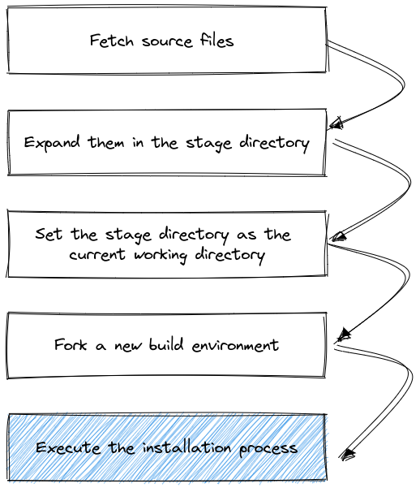
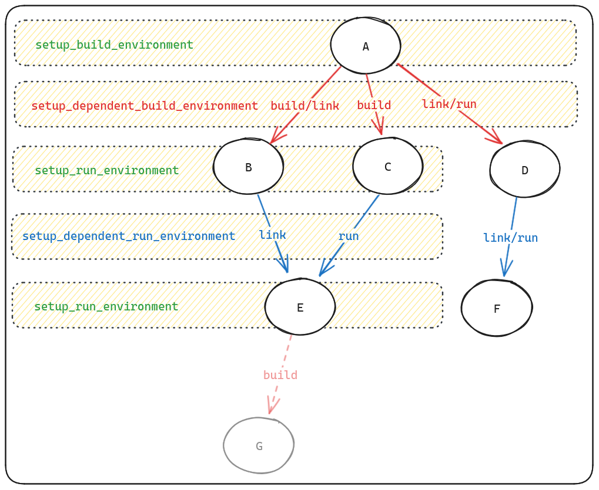
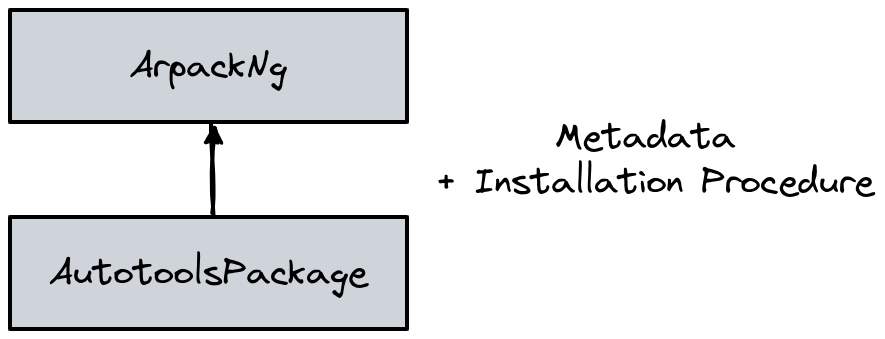
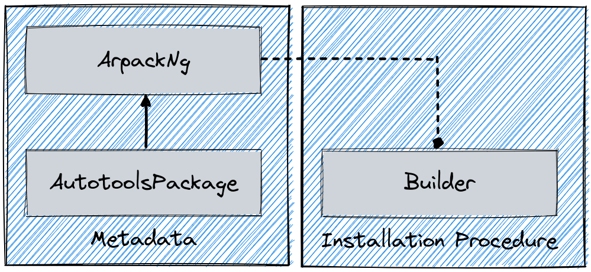
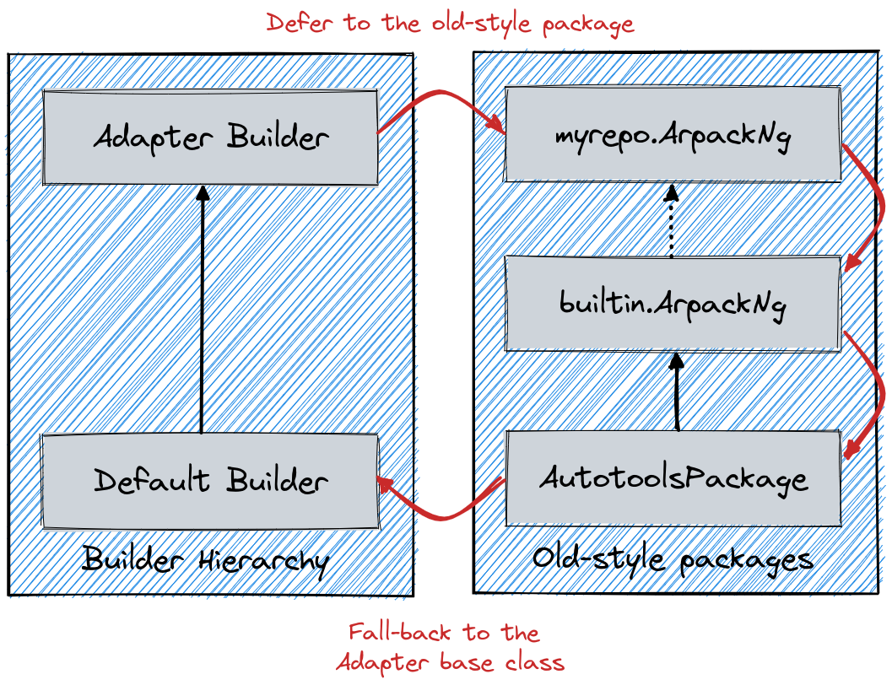

Packaging Guide
This guide is intended for developers or administrators who want to package software so that Spack can install it. It assumes that you have at least some familiarity with Python, and that you’ve read the basic usage guide, especially the part about specs.
There are two key parts of Spack:
Specs: expressions for describing builds of software, and
Packages: Python modules that describe how to build and test software according to a spec.
Specs allow a user to describe a particular build in a way that a package author can understand. Packages allow the packager to encapsulate the build logic for different versions, compilers, options, platforms, and dependency combinations in one place. Essentially, a package translates a spec into build logic. It also allows the packager to write spec-specific tests of the installed software.
Packages in Spack are written in pure Python, so you can do anything in Spack that you can do in Python. Python was chosen as the implementation language for two reasons. First, Python is becoming ubiquitous in the scientific software community. Second, it’s a modern language and has many powerful features to help make package writing easy.
Warning
As a general rule, packages should install the software from source. The only exception is for proprietary software (e.g., vendor compilers).
If a special build system needs to be added in order to support building a package from source, then the associated code and recipe should be added first.
Overview of the installation procedure
Whenever Spack installs software, it goes through a series of predefined steps:
{kind=link}
All these steps are influenced by the metadata in each package.py and
by the current Spack configuration.
Since build systems are different from one another, the execution of the
last block in the figure is further expanded in a build system specific way.
An example for CMake is, for instance:
{kind=link}
The predefined steps for each build system are called “phases”.
In general, the name and order in which the phases will be executed can be
obtained by either reading the API docs at build_systems, or
using the spack info command:
$ spack info --phases m4
AutotoolsPackage: m4
Homepage: https://www.gnu.org/software/m4/m4.html
Safe versions:
1.4.17 ftp://ftp.gnu.org/gnu/m4/m4-1.4.17.tar.gz
Variants:
Name Default Description
sigsegv on Build the libsigsegv dependency
Installation Phases:
autoreconf configure build install
Build Dependencies:
libsigsegv
...
An extensive list of available build systems and phases is provided in Overriding build system defaults.
Writing a package recipe
Since v0.19, Spack supports two ways of writing a package recipe. The most commonly used is to encode both the metadata (directives, etc.) and the build behavior in a single class, like shown in the following example:
class Openjpeg(CMakePackage):
"""OpenJPEG is an open-source JPEG 2000 codec written in C language"""
homepage = "https://github.com/uclouvain/openjpeg"
url = "https://github.com/uclouvain/openjpeg/archive/v2.3.1.tar.gz"
version("2.4.0", sha256="8702ba68b442657f11aaeb2b338443ca8d5fb95b0d845757968a7be31ef7f16d")
variant("codec", default=False, description="Build the CODEC executables")
depends_on("libpng", when="+codec")
def url_for_version(self, version):
if version >= Version("2.1.1"):
return super().url_for_version(version)
url_fmt = "https://github.com/uclouvain/openjpeg/archive/version.{0}.tar.gz"
return url_fmt.format(version)
def cmake_args(self):
args = [
self.define_from_variant("BUILD_CODEC", "codec"),
self.define("BUILD_MJ2", False),
self.define("BUILD_THIRDPARTY", False),
]
return args
A package encoded with a single class is backward compatible with versions of Spack lower than v0.19, and so are custom repositories containing only recipes of this kind. The downside is that this format doesn’t allow packagers to use more than one build system in a single recipe.
To do that, we have to resort to the second way Spack has of writing packages, which involves writing a builder class explicitly. Using the same example as above, this reads:
class Openjpeg(CMakePackage):
"""OpenJPEG is an open-source JPEG 2000 codec written in C language"""
homepage = "https://github.com/uclouvain/openjpeg"
url = "https://github.com/uclouvain/openjpeg/archive/v2.3.1.tar.gz"
version("2.4.0", sha256="8702ba68b442657f11aaeb2b338443ca8d5fb95b0d845757968a7be31ef7f16d")
variant("codec", default=False, description="Build the CODEC executables")
depends_on("libpng", when="+codec")
def url_for_version(self, version):
if version >= Version("2.1.1"):
return super().url_for_version(version)
url_fmt = "https://github.com/uclouvain/openjpeg/archive/version.{0}.tar.gz"
return url_fmt.format(version)
class CMakeBuilder(spack.build_systems.cmake.CMakeBuilder):
def cmake_args(self):
args = [
self.define_from_variant("BUILD_CODEC", "codec"),
self.define("BUILD_MJ2", False),
self.define("BUILD_THIRDPARTY", False),
]
return args
This way of writing packages allows extending the recipe to support multiple build systems, see Multiple build systems for more details. The downside is that recipes of this kind are only understood by Spack since v0.19+. More information on the internal architecture of Spack can be found at Package class architecture.
Note
If a builder is implemented in package.py, all build-specific methods must be moved
to the builder. This means that if you have a package like
class Foo(CmakePackage):
def cmake_args(self):
...
and you add a builder to the package.py, you must move cmake_args to the builder.
Creating new packages
To help creating a new package Spack provides a command that generates a package.py
file in an existing repository, with a boilerplate package template. Here’s an example:
$ spack create https://gmplib.org/download/gmp/gmp-6.1.2.tar.bz2
Spack examines the tarball URL and tries to figure out the name of the package to be created. If the name contains uppercase letters, these are automatically converted to lowercase. If the name contains underscores or periods, these are automatically converted to dashes.
Spack also searches for additional versions located in the same directory of the website. Spack prompts you to tell you how many versions it found and asks you how many you would like to download and checksum:
$ spack create https://gmplib.org/download/gmp/gmp-6.1.2.tar.bz2
==> This looks like a URL for gmp
==> Found 16 versions of gmp:
6.1.2 https://gmplib.org/download/gmp/gmp-6.1.2.tar.bz2
6.1.1 https://gmplib.org/download/gmp/gmp-6.1.1.tar.bz2
6.1.0 https://gmplib.org/download/gmp/gmp-6.1.0.tar.bz2
...
5.0.0 https://gmplib.org/download/gmp/gmp-5.0.0.tar.bz2
How many would you like to checksum? (default is 1, q to abort)
Spack will automatically download the number of tarballs you specify (starting with the most recent) and checksum each of them.
You do not have to download all of the versions up front. You can always choose to download just one tarball initially, and run spack checksum later if you need more versions.
Spack automatically creates a directory in the appropriate repository,
generates a boilerplate template for your package, and opens up the new
package.py in your favorite $EDITOR (see Controlling the editor
for details):
1# Copyright 2013-2024 Lawrence Livermore National Security, LLC and other
2# Spack Project Developers. See the top-level COPYRIGHT file for details.
3#
4# SPDX-License-Identifier: (Apache-2.0 OR MIT)
5
6# ----------------------------------------------------------------------------
7# If you submit this package back to Spack as a pull request,
8# please first remove this boilerplate and all FIXME comments.
9#
10# This is a template package file for Spack. We've put "FIXME"
11# next to all the things you'll want to change. Once you've handled
12# them, you can save this file and test your package like this:
13#
14# spack install gmp
15#
16# You can edit this file again by typing:
17#
18# spack edit gmp
19#
20# See the Spack documentation for more information on packaging.
21# ----------------------------------------------------------------------------
22import spack.build_systems.autotools
23from spack.package import *
24
25
26class Gmp(AutotoolsPackage):
27 """FIXME: Put a proper description of your package here."""
28
29 # FIXME: Add a proper url for your package's homepage here.
30 homepage = "https://www.example.com"
31 url = "https://gmplib.org/download/gmp/gmp-6.1.2.tar.bz2"
32
33 # FIXME: Add a list of GitHub accounts to
34 # notify when the package is updated.
35 # maintainers("github_user1", "github_user2")
36
37 version("6.2.1", sha256="eae9326beb4158c386e39a356818031bd28f3124cf915f8c5b1dc4c7a36b4d7c")
38
39 # FIXME: Add dependencies if required.
40 # depends_on("foo")
41
42 def configure_args(self):
43 # FIXME: Add arguments other than --prefix
44 # FIXME: If not needed delete the function
45 args = []
46 return args
The tedious stuff (creating the class, checksumming archives) has been
done for you. Spack correctly detected that gmp uses the autotools
build system, so it created a new Gmp package that subclasses the
AutotoolsPackage base class.
The default installation procedure for a package subclassing the AutotoolsPackage
is to go through the typical process of:
./configure --prefix=/path/to/installation/directory
make
make check
make install
For most Autotools packages, this is sufficient. If you need to add
additional arguments to the ./configure call, add them via the
configure_args function.
In the generated package, the download url attribute is already
set. All the things you still need to change are marked with
FIXME labels. You can delete the commented instructions between
the license and the first import statement after reading them.
The rest of the tasks you need to do are as follows:
Add a description.
Immediately inside the package class is a docstring in triple-quotes (
"""). It is used to generate the description shown when users runspack info.Change the
homepageto a useful URL.The
homepageis displayed when users runspack infoso that they can learn more about your package.Add a comma-separated list of maintainers.
Add a list of Github accounts of people who want to be notified any time the package is modified. See Maintainers.
Add
depends_on()calls for the package’s dependencies.depends_ontells Spack that other packages need to be built and installed before this one. See Dependencies.Get the installation working.
Your new package may require specific flags during
configure. These can be added viaconfigure_args. Specifics will differ depending on the package and its build system. Overriding build system defaults is covered in detail later.
Controlling the editor
When Spack needs to open an editor for you (e.g., for commands like Creating new packages or Editing existing packages, it looks at several environment variables to figure out what to use. The order of precedence is:
SPACK_EDITOR: highest precedence, in case you want something specific for Spack;VISUAL: standard environment variable for full-screen editors likevimoremacs;EDITOR: older environment variable for your editor.
You can set any of these to the command you want to run, e.g., in bash you might run
one of these:
export VISUAL=vim
export EDITOR="emacs -nw"
export SPACK_EDITOR=nano
If Spack finds none of these variables set, it will look for vim, vi, emacs,
nano, and notepad, in that order.
Bundling software
If you have a collection of software expected to work well together with no source code of its own, you can create a BundlePackage. Examples where bundle packages can be useful include defining suites of applications (e.g, EcpProxyApps), commonly used libraries (e.g., AmdAocl), and software development kits (e.g., EcpDataVisSdk).
These versioned packages primarily consist of dependencies on the associated software packages. They can include variants to ensure common build options are consistently applied to dependencies. Known build failures, such as not building on a platform or when certain compilers or variants are used, can be flagged with conflicts. Build requirements, such as only building with specific compilers, can similarly be flagged with requires.
The spack create --template bundle command will create a skeleton
BundlePackage package.py for you:
$ spack create --template bundle --name coolsdk
Now you can fill in the basic package documentation, version(s), and software package dependencies along with any other relevant customizations.
Note
Remember that bundle packages have no software of their own so there is nothing to download.
Non-downloadable software
If your software cannot be downloaded from a URL you can still create a boilerplate
package.py by telling spack create what name you want to use:
$ spack create --name intel
This will create a simple intel package with an install()
method that you can craft to install your package.
Likewise, you can force the build system to be used with --template and,
in case it’s needed, you can overwrite a package already in the repository
with --force:
$ spack create --name gmp https://gmplib.org/download/gmp/gmp-6.1.2.tar.bz2
$ spack create --force --template autotools https://gmplib.org/download/gmp/gmp-6.1.2.tar.bz2
A complete list of available build system templates can be found by running
spack create --help.
Editing existing packages
One of the easiest ways to learn how to write packages is to look at
existing ones. You can edit a package file by name with the spack
edit command:
$ spack edit gmp
If you used spack create to create a package, you can get back to
it later with spack edit. For instance, the gmp package actually
lives in:
$ spack location -p gmp
${SPACK_ROOT}/var/spack/repos/builtin/packages/gmp/package.py
but spack edit provides a much simpler shortcut and saves you the
trouble of typing the full path.
Naming & directory structure
This section describes how packages need to be named, and where they live in Spack’s directory structure. In general, Creating new packages handles creating package files for you, so you can skip most of the details here.
var/spack/repos/builtin/packages
A Spack installation directory is structured like a standard UNIX
install prefix (bin, lib, include, var, opt,
etc.). Most of the code for Spack lives in $SPACK_ROOT/lib/spack.
Packages themselves live in $SPACK_ROOT/var/spack/repos/builtin/packages.
If you cd to that directory, you will see directories for each
package:
$ cd $SPACK_ROOT/var/spack/repos/builtin/packages && ls
3dtk
3proxy
7zip
abacus
abduco
abi-compliance-checker
abi-dumper
abinit
abseil-cpp
abyss
...
Each directory contains a file called package.py, which is where
all the python code for the package goes. For example, the libelf
package lives in:
$SPACK_ROOT/var/spack/repos/builtin/packages/libelf/package.py
Alongside the package.py file, a package may contain extra
directories or files (like patches) that it needs to build.
Package Names
Packages are named after the directory containing package.py. So,
libelf’s package.py lives in a directory called libelf.
The package.py file defines a class called Libelf, which
extends Spack’s Package class. For example, here is
$SPACK_ROOT/var/spack/repos/builtin/packages/libelf/package.py:
1from spack import *
2
3class Libelf(Package):
4 """ ... description ... """
5 homepage = ...
6 url = ...
7 version(...)
8 depends_on(...)
9
10 def install():
11 ...
The directory name (libelf) determines the package name that
users should provide on the command line. e.g., if you type any of
these:
$ spack info libelf
$ spack versions libelf
$ spack install libelf@0.8.13
Spack sees the package name in the spec and looks for
libelf/package.py in var/spack/repos/builtin/packages.
Likewise, if you run spack install py-numpy, Spack looks for
py-numpy/package.py.
Spack uses the directory name as the package name in order to give
packagers more freedom in naming their packages. Package names can
contain letters, numbers, and dashes. Using a Python identifier
(e.g., a class name or a module name) would make it difficult to
support these options. So, you can name a package 3proxy or
foo-bar and Spack won’t care. It just needs to see that name
in the packages directory.
Package class names
Spack loads package.py files dynamically, and it needs to find a
special class name in the file for the load to succeed. The class
name (Libelf in our example) is formed by converting words
separated by - in the file name to CamelCase. If the name
starts with a number, we prefix the class name with _. Here are
some examples:
Module Name |
Class Name |
|---|---|
|
|
|
|
In general, you won’t have to remember this naming convention because Creating new packages and Editing existing packages handle the details for you.
Maintainers
Each package in Spack may have one or more maintainers, i.e. one or more GitHub accounts of people who want to be notified any time the package is modified.
When a pull request is submitted that updates the package, these people will be requested to review the PR. This is useful for developers who maintain a Spack package for their own software, as well as users who rely on a piece of software and want to ensure that the package doesn’t break. It also gives users a list of people to contact for help when someone reports a build error with the package.
To add maintainers to a package, simply declare them with the maintainers directive:
maintainers("user1", "user2")
The list of maintainers is additive, and includes all the accounts eventually declared in base classes.
Trusted Downloads
Spack verifies that the source code it downloads is not corrupted or compromised; or at least, that it is the same version the author of the Spack package saw when the package was created. If Spack uses a download method it can verify, we say the download method is trusted. Trust is important for all downloads: Spack has no control over the security of the various sites from which it downloads source code, and can never assume that any particular site hasn’t been compromised.
Trust is established in different ways for different download methods.
For the most common download method — a single-file tarball — the
tarball is checksummed. Git downloads using commit= are trusted
implicitly, as long as a hash is specified.
Spack also provides untrusted download methods: tarball URLs may be supplied without a checksum, or Git downloads may specify a branch or tag instead of a hash. If the user does not control or trust the source of an untrusted download, it is a security risk. Unless otherwise specified by the user for special cases, Spack should by default use only trusted download methods.
Unfortunately, Spack does not currently provide that guarantee. It does provide the following mechanisms for safety:
By default, Spack will only install a tarball package if it has a checksum and that checksum matches. You can override this with
spack install --no-checksum.Numeric versions are almost always tarball downloads, whereas non-numeric versions not named
developfrequently download untrusted branches or tags from a version control system. As long as a package has at least one numeric version, and no non-numeric version nameddevelop, Spack will prefer it over any non-numeric versions.
Checksums
For tarball downloads, Spack can currently support checksums using the MD5, SHA-1, SHA-224, SHA-256, SHA-384, and SHA-512 algorithms. It determines the algorithm to use based on the hash length.
Versions and fetching
The most straightforward way to add new versions to your package is to add a line like this in the package class:
class Foo(Package):
url = "http://example.com/foo-1.0.tar.gz"
version("8.2.1", md5="4136d7b4c04df68b686570afa26988ac")
version("8.2.0", md5="1c9f62f0778697a09d36121ead88e08e")
version("8.1.2", md5="d47dd09ed7ae6e7fd6f9a816d7f5fdf6")
Note
By convention, we list versions in descending order, from newest to oldest.
Note
Bundle packages do not have source code so
there is nothing to fetch. Consequently, their version directives
consist solely of the version name (e.g., version("202309")).
Date Versions
If you wish to use dates as versions, it is best to use the format
@yyyy-mm-dd. This will ensure they sort in the correct order.
Alternately, you might use a hybrid release-version / date scheme.
For example, @1.3_2016-08-31 would mean the version from the
1.3 branch, as of August 31, 2016.
Version URLs
By default, each version’s URL is extrapolated from the url field
in the package. For example, Spack is smart enough to download
version 8.2.1 of the Foo package above from
http://example.com/foo-8.2.1.tar.gz.
If the URL is particularly complicated or changes based on the release,
you can override the default URL generation algorithm by defining your
own url_for_version() function. For example, the download URL for
OpenMPI contains the major.minor version in one spot and the
major.minor.patch version in another:
https://www.open-mpi.org/software/ompi/v2.1/downloads/openmpi-2.1.1.tar.bz2
In order to handle this, you can define a url_for_version() function
like so:
def url_for_version(self, version):
url = "https://download.open-mpi.org/release/open-mpi/v{0}/openmpi-{1}.tar.bz2"
return url.format(version.up_to(2), version)
With the use of this url_for_version(), Spack knows to download OpenMPI 2.1.1
from http://www.open-mpi.org/software/ompi/v2.1/downloads/openmpi-2.1.1.tar.bz2
but download OpenMPI 1.10.7 from http://www.open-mpi.org/software/ompi/v1.10/downloads/openmpi-1.10.7.tar.bz2.
You’ll notice that OpenMPI’s url_for_version() function makes use of a special
Version function called up_to(). When you call version.up_to(2) on a
version like 1.10.0, it returns 1.10. version.up_to(1) would return
1. This can be very useful for packages that place all X.Y.* versions in
a single directory and then places all X.Y.Z versions in a sub-directory.
There are a few Version properties you should be aware of. We generally
prefer numeric versions to be separated by dots for uniformity, but not all
tarballs are named that way. For example, icu4c separates its major and minor
versions with underscores, like icu4c-57_1-src.tgz. The value 57_1 can be
obtained with the use of the version.underscored property. Note that Python
properties don’t need parentheses. There are other separator properties as well:
Property |
Result |
|---|---|
version.dotted |
1.2.3 |
version.dashed |
1-2-3 |
version.underscored |
1_2_3 |
version.joined |
123 |
Note
Python properties don’t need parentheses. version.dashed is correct.
version.dashed() is incorrect.
In addition, these version properties can be combined with up_to().
For example:
>>> version = Version("1.2.3")
>>> version.up_to(2).dashed
Version("1-2")
>>> version.underscored.up_to(2)
Version("1_2")
As you can see, order is not important. Just keep in mind that up_to() and
the other version properties return Version objects, not strings.
If a URL cannot be derived systematically, or there is a special URL for one of its versions, you can add an explicit URL for a particular version:
version("8.2.1", md5="4136d7b4c04df68b686570afa26988ac",
url="http://example.com/foo-8.2.1-special-version.tar.gz")
When you supply a custom URL for a version, Spack uses that URL verbatim and does not perform extrapolation. The order of precedence of these methods is:
package-level
urlurl_for_version()version-specific
url
so if your package contains a url_for_version(), it can be overridden
by a version-specific url.
If your package does not contain a package-level url or url_for_version(),
Spack can determine which URL to download from even if only some of the versions
specify their own url. Spack will use the nearest URL before the requested
version. This is useful for packages that have an easy to extrapolate URL, but
keep changing their URL format every few releases. With this method, you only
need to specify the url when the URL changes.
Mirrors of the main URL
Spack supports listing mirrors of the main URL in a package by defining
the urls attribute:
class Foo(Package):
urls = [
"http://example.com/foo-1.0.tar.gz",
"http://mirror.com/foo-1.0.tar.gz"
]
instead of just a single url. This attribute is a list of possible URLs that
will be tried in order when fetching packages. Notice that either one of url
or urls can be present in a package, but not both at the same time.
A well-known case of packages that can be fetched from multiple mirrors is that
of GNU. For that, Spack goes a step further and defines a mixin class that
takes care of all of the plumbing and requires packagers to just define a proper
gnu_mirror_path attribute:
class Autoconf(AutotoolsPackage, GNUMirrorPackage):
"""Autoconf -- system configuration part of autotools"""
homepage = "https://www.gnu.org/software/autoconf/"
gnu_mirror_path = "autoconf/autoconf-2.69.tar.gz"
license("GPL-3.0-or-later WITH Autoconf-exception-3.0", when="@2.62:", checked_by="tgamblin")
license("GPL-2.0-or-later WITH Autoconf-exception-2.0", when="@:2.59", checked_by="tgamblin")
Skipping the expand step
Spack normally expands archives (e.g. *.tar.gz and *.zip) automatically
into a standard stage source directory (self.stage.source_path) after
downloading them. If you want to skip this step (e.g., for self-extracting
executables and other custom archive types), you can add expand=False to a
version directive.
version("8.2.1", md5="4136d7b4c04df68b686570afa26988ac",
url="http://example.com/foo-8.2.1-special-version.sh", expand=False)
When expand is set to False, Spack sets the current working
directory to the directory containing the downloaded archive before it
calls your install method. Within install, the path to the
downloaded archive is available as self.stage.archive_file.
Here is an example snippet for packages distributed as self-extracting archives. The example sets permissions on the downloaded file to make it executable, then runs it with some arguments.
def install(self, spec, prefix):
set_executable(self.stage.archive_file)
installer = Executable(self.stage.archive_file)
installer("--prefix=%s" % prefix, "arg1", "arg2", "etc.")
Deprecating old versions
There are many reasons to remove old versions of software:
Security vulnerabilities (most serious reason)
Changing build systems that increase package complexity
Changing dependencies/patches/resources/flags that increase package complexity
Maintainer/developer inability/unwillingness to support old versions
No longer available for download (right to be forgotten)
Package or version rename
At the same time, there are many reasons to keep old versions of software:
Reproducibility
Requirements for older packages (e.g. some packages still rely on Qt 3)
In general, you should not remove old versions from a package.py. Instead,
you should first deprecate them using the following syntax:
version("1.2.3", sha256="...", deprecated=True)
This has two effects. First, spack info will no longer advertise that
version. Second, commands like spack install that fetch the package will
require user approval:
$ spack install openssl@1.0.1e
==> Warning: openssl@1.0.1e is deprecated and may be removed in a future Spack release.
==> Fetch anyway? [y/N]
If you use spack install --deprecated, this check can be skipped.
This also applies to package recipes that are renamed or removed. You should first deprecate all versions before removing a package. If you need to rename it, you can deprecate the old package and create a new package at the same time.
Version deprecations should always last at least one Spack minor release cycle
before the version is completely removed. For example, if a version is
deprecated in Spack 0.16.0, it should not be removed until Spack 0.17.0. No
version should be removed without such a deprecation process. This gives users
a chance to complain about the deprecation in case the old version is needed
for some application. If you require a deprecated version of a package, simply
submit a PR to remove deprecated=True from the package. However, you may be
asked to help maintain this version of the package if the current maintainers
are unwilling to support this older version.
Download caching
Spack maintains a cache (described here) which saves files
retrieved during package installations to avoid re-downloading in the case that
a package is installed with a different specification (but the same version) or
reinstalled on account of a change in the hashing scheme. It may (rarely) be
necessary to avoid caching for a particular version by adding no_cache=True
as an option to the version() directive. Example situations would be a
“snapshot”-like Version Control System (VCS) tag, a VCS branch such as
v6-16-00-patches, or a URL specifying a regularly updated snapshot tarball.
Version comparison
Spack imposes a generic total ordering on the set of versions, independently from the package they are associated with.
Most Spack versions are numeric, a tuple of integers; for example,
0.1, 6.96 or 1.2.3.1. In this very basic case, version
comparison is lexicographical on the numeric components:
1.2 < 1.2.1 < 1.2.2 < 1.10.
Spack can also supports string components such as 1.1.1a and
1.y.0. String components are considered less than numeric
components, so 1.y.0 < 1.0. This is for consistency with
RPM. String
components do not have to be separated by dots or any other delimiter.
So, the contrived version 1y0 is identical to 1.y.0.
Pre-release suffixes also contain string parts, but they are handled
in a special way. For example 1.2.3alpha1 is parsed as a pre-release
of the version 1.2.3. This allows Spack to order it before the
actual release: 1.2.3alpha1 < 1.2.3. Spack supports alpha, beta and
release candidate suffixes: 1.2alpha1 < 1.2beta1 < 1.2rc1 < 1.2. Any
suffix not recognized as a pre-release is treated as an ordinary
string component, so 1.2 < 1.2-mysuffix.
Finally, there are a few special string components that are considered
“infinity versions”. They include develop, main, master,
head, trunk, and stable. For example: 1.2 < develop.
These are useful for specifying the most recent development version of
a package (often a moving target like a git branch), without assigning
a specific version number. Infinity versions are not automatically used when determining the latest version of a package unless explicitly required by another package or user.
More formally, the order on versions is defined as follows. A version
string is split into a list of components based on delimiters such as
. and - and string boundaries. The components are split into
the release and a possible pre-release (if the last component
is numeric and the second to last is a string alpha, beta or rc).
The release components are ordered lexicographically, with comparsion
between different types of components as follows:
The following special strings are considered larger than any other numeric or non-numeric version component, and satisfy the following order between themselves:
develop > main > master > head > trunk > stable.Numbers are ordered numerically, are less than special strings, and larger than other non-numeric components.
All other non-numeric components are less than numeric components, and are ordered alphabetically.
Finally, if the release components are equal, the pre-release components are used to break the tie, in the obvious way.
The logic behind this sort order is two-fold:
Non-numeric versions are usually used for special cases while developing or debugging a piece of software. Keeping most of them less than numeric versions ensures that Spack chooses numeric versions by default whenever possible.
The most-recent development version of a package will usually be newer than any released numeric versions. This allows the
@developversion to satisfy dependencies likedepends_on(abc, when="@x.y.z:")
Version selection
When concretizing, many versions might match a user-supplied spec.
For example, the spec python matches all available versions of the
package python. Similarly, python@3: matches all versions of
Python 3 and above. Given a set of versions that match a spec, Spack
concretization uses the following priorities to decide which one to
use:
If the user provided a list of versions in
packages.yaml, the first matching version in that list will be used.If one or more versions is specified as
preferred=True, in eitherpackages.yamlorpackage.py, the largest matching version will be used. (“Latest” is defined by the sort order above).If no preferences in particular are specified in the package or in
packages.yaml, then the largest matching non-develop version will be used. By avoiding@develop, this prevents users from accidentally installing a@developversion.If all else fails and
@developis the only matching version, it will be used.
Ranges versus specific versions
When specifying versions in Spack using the pkg@<specifier> syntax,
you can use either ranges or specific versions. It is generally
recommended to use ranges instead of specific versions when packaging
to avoid overly constraining dependencies, patches, and conflicts.
For example, depends_on("python@3") denotes a range of versions,
allowing Spack to pick any 3.x.y version for Python, while
depends_on("python@=3.10.1") restricts it to a specific version.
Specific @= versions should only be used in exceptional cases, such
as when the package has a versioning scheme that omits the zero in the
first patch release: 3.1, 3.1.1, 3.1.2. In this example,
the specifier @=3.1 is the correct way to select only the 3.1
version, whereas @3.1 would match all those versions.
Ranges are preferred even if they would only match a single version
defined in the package. This is because users can define custom versions
in packages.yaml that typically include a custom suffix. For example,
if the package defines the version 1.2.3, the specifier @1.2.3
will also match a user-defined version 1.2.3-custom.
spack checksum
If you want to add new versions to a package you’ve already created,
this is automated with the spack checksum command. Here’s an
example for libelf:
$ spack checksum libelf
==> Found 16 versions of libelf.
0.8.13 http://www.mr511.de/software/libelf-0.8.13.tar.gz
0.8.12 http://www.mr511.de/software/libelf-0.8.12.tar.gz
0.8.11 http://www.mr511.de/software/libelf-0.8.11.tar.gz
0.8.10 http://www.mr511.de/software/libelf-0.8.10.tar.gz
0.8.9 http://www.mr511.de/software/libelf-0.8.9.tar.gz
0.8.8 http://www.mr511.de/software/libelf-0.8.8.tar.gz
0.8.7 http://www.mr511.de/software/libelf-0.8.7.tar.gz
0.8.6 http://www.mr511.de/software/libelf-0.8.6.tar.gz
0.8.5 http://www.mr511.de/software/libelf-0.8.5.tar.gz
...
0.5.2 http://www.mr511.de/software/libelf-0.5.2.tar.gz
How many would you like to checksum? (default is 1, q to abort)
This does the same thing that spack create does, but it allows you
to go back and add new versions easily as you need them (e.g., as
they’re released). It fetches the tarballs you ask for and prints out
a list of version commands ready to copy/paste into your package
file:
==> Checksummed new versions of libelf:
version("0.8.13", md5="4136d7b4c04df68b686570afa26988ac")
version("0.8.12", md5="e21f8273d9f5f6d43a59878dc274fec7")
version("0.8.11", md5="e931910b6d100f6caa32239849947fbf")
version("0.8.10", md5="9db4d36c283d9790d8fa7df1f4d7b4d9")
By default, Spack will search for new tarball downloads by scraping
the parent directory of the tarball you gave it. So, if your tarball
is at http://example.com/downloads/foo-1.0.tar.gz, Spack will look
in http://example.com/downloads/ for links to additional versions.
If you need to search another path for download links, you can supply
some extra attributes that control how your package finds new
versions. See the documentation on list_url and
list_depth.
Note
This command assumes that Spack can extrapolate new URLs from an existing URL in the package, and that Spack can find similar URLs on a webpage. If that’s not possible, e.g. if the package’s developers don’t name their tarballs consistently, you’ll need to manually add
versioncalls yourself.For
spack checksumto work, Spack needs to be able toimportyour package in Python. That means it can’t have any syntax errors, or theimportwill fail. Use this once you’ve got your package in working order.
Finding new versions
You’ve already seen the homepage and url package attributes:
1from spack import *
2
3
4class Mpich(Package):
5 """MPICH is a high performance and widely portable implementation of
6 the Message Passing Interface (MPI) standard."""
7 homepage = "http://www.mpich.org"
8 url = "http://www.mpich.org/static/downloads/3.0.4/mpich-3.0.4.tar.gz"
These are class-level attributes used by Spack to show users information about the package, and to determine where to download its source code.
Spack uses the tarball URL to extrapolate where to find other tarballs of the same package (e.g. in spack checksum, but this does not always work. This section covers ways you can tell Spack to find tarballs elsewhere.
list_url
When spack tries to find available versions of packages (e.g. with
spack checksum), it spiders the parent directory
of the tarball in the url attribute. For example, for libelf, the
url is:
url = "http://www.mr511.de/software/libelf-0.8.13.tar.gz"
Here, Spack spiders http://www.mr511.de/software/ to find similar
tarball links and ultimately to make a list of available versions of
libelf.
For many packages, the tarball’s parent directory may be unlistable, or it may not contain any links to source code archives. In fact, many times additional package downloads aren’t even available in the same directory as the download URL.
For these, you can specify a separate list_url indicating the page
to search for tarballs. For example, libdwarf has the homepage as
the list_url, because that is where links to old versions are:
1class Libdwarf(Package):
2 homepage = "http://www.prevanders.net/dwarf.html"
3 url = "http://www.prevanders.net/libdwarf-20130729.tar.gz"
4 list_url = homepage
list_depth
libdwarf and many other packages have a listing of available
versions on a single webpage, but not all do. For example, mpich
has a tarball URL that looks like this:
url = "http://www.mpich.org/static/downloads/3.0.4/mpich-3.0.4.tar.gz"
But its downloads are in many different subdirectories of
http://www.mpich.org/static/downloads/. So, we need to add a
list_url and a list_depth attribute:
1class Mpich(Package):
2 homepage = "http://www.mpich.org"
3 url = "http://www.mpich.org/static/downloads/3.0.4/mpich-3.0.4.tar.gz"
4 list_url = "http://www.mpich.org/static/downloads/"
5 list_depth = 1
By default, Spack only looks at the top-level page available at
list_url. list_depth = 1 tells it to follow up to 1 level of
links from the top-level page. Note that here, this implies 1
level of subdirectories, as the mpich website is structured much
like a filesystem. But list_depth really refers to link depth
when spidering the page.
Fetching from code repositories
For some packages, source code is provided in a Version Control System (VCS) repository rather than in a tarball. Spack can fetch packages from VCS repositories. Currently, Spack supports fetching with Git, Mercurial (hg), Subversion (svn), CVS (cvs), and Go. In all cases, the destination is the standard stage source path.
To fetch a package from a source repository, Spack needs to know which
VCS to use and where to download from. Much like with url, package
authors can specify a class-level git, hg, svn, cvs, or go
attribute containing the correct download location.
Many packages developed with Git have both a Git repository as well as release tarballs available for download. Packages can define both a class-level tarball URL and VCS. For example:
class Trilinos(CMakePackage):
homepage = "https://trilinos.org/"
url = "https://github.com/trilinos/Trilinos/archive/trilinos-release-12-12-1.tar.gz"
git = "https://github.com/trilinos/Trilinos.git"
version("develop", branch="develop")
version("master", branch="master")
version("12.12.1", md5="ecd4606fa332212433c98bf950a69cc7")
version("12.10.1", md5="667333dbd7c0f031d47d7c5511fd0810")
version("12.8.1", "9f37f683ee2b427b5540db8a20ed6b15")
If a package contains both a url and git class-level attribute,
Spack decides which to use based on the arguments to the version()
directive. Versions containing a specific branch, tag, or revision are
assumed to be for VCS download methods, while versions containing a
checksum are assumed to be for URL download methods.
Like url, if a specific version downloads from a different repository
than the default repo, it can be overridden with a version-specific argument.
Note
In order to reduce ambiguity, each package can only have a single VCS
top-level attribute in addition to url. In the rare case that a
package uses multiple VCS, a fetch strategy can be specified for each
version. For example, the rockstar package contains:
class Rockstar(MakefilePackage):
homepage = "https://bitbucket.org/gfcstanford/rockstar"
version("develop", git="https://bitbucket.org/gfcstanford/rockstar.git")
version("yt", hg="https://bitbucket.org/MatthewTurk/rockstar")
Git
Git fetching supports the following parameters to version:
git: URL of the git repository, if different than the class-levelgit.branch: Name of a branch to fetch.tag: Name of a tag to fetch.commit: SHA hash (or prefix) of a commit to fetch.submodules: Also fetch submodules recursively when checking out this repository.submodules_delete: A list of submodules to forcibly delete from the repository after fetching. Useful if a version in the repository has submodules that have disappeared/are no longer accessible.get_full_repo: Ensure the full git history is checked out with all remote branch information. Normally (get_full_repo=False, the default), the git option--depth 1will be used if the version of git and the specified transport protocol support it, and--single-branchwill be used if the version of git supports it.git_sparse_paths: Usesparse-checkoutto only clone these relative paths. This feature requiresgitto be version2.25.0or later but is useful for large repositories that have separate portions that can be built independently. If paths provided are directories then all the subdirectories and associated files will also be cloned.
Only one of tag, branch, or commit can be used at a time.
The destination directory for the clone is the standard stage source path.
- Default branch
To fetch a repository’s default branch:
class Example(Package): git = "https://github.com/example-project/example.git" version("develop")
This download method is untrusted, and is not recommended. Aside from HTTPS, there is no way to verify that the repository has not been compromised, and the commit you get when you install the package likely won’t be the same commit that was used when the package was first written. Additionally, the default branch may change. It is best to at least specify a branch name.
- Branches
To fetch a particular branch, use the
branchparameter:version("experimental", branch="experimental")
This download method is untrusted, and is not recommended. Branches are moving targets, so the commit you get when you install the package likely won’t be the same commit that was used when the package was first written.
- Tags
To fetch from a particular tag, use
taginstead:version("1.0.1", tag="v1.0.1")
This download method is untrusted, and is not recommended. Although tags are generally more stable than branches, Git allows tags to be moved. Many developers use tags to denote rolling releases, and may move the tag when a bug is patched.
- Commits
Finally, to fetch a particular commit, use
commit:version("2014-10-08", commit="9d38cd4e2c94c3cea97d0e2924814acc")
This doesn’t have to be a full hash; you can abbreviate it as you’d expect with git:
version("2014-10-08", commit="9d38cd")
This download method is trusted. It is the recommended way to securely download from a Git repository.
It may be useful to provide a saner version for commits like this, e.g. you might use the date as the version, as done above. Or, if you know the commit at which a release was cut, you can use the release version. It’s up to the package author to decide what makes the most sense. Although you can use the commit hash as the version number, this is not recommended, as it won’t sort properly.
- Submodules
You can supply
submodules=Trueto cause Spack to fetch submodules recursively along with the repository at fetch time.version("1.0.1", tag="v1.0.1", submodules=True)
If a package has needs more fine-grained control over submodules, define
submodulesto be a callable function that takes the package instance as its only argument. The function should return a list of submodules to be fetched.def submodules(package): submodules = [] if "+variant-1" in package.spec: submodules.append("submodule_for_variant_1") if "+variant-2" in package.spec: submodules.append("submodule_for_variant_2") return submodules class MyPackage(Package): version("0.1.0", submodules=submodules)
For more information about git submodules see the manpage of git:
man git-submodule.- Sparse-Checkout
You can supply
git_sparse_pathsat the package or version level to utilize git’s sparse-checkout feature. This will only clone the paths that are specified in thegit_sparse_pathsattribute for the package along with the files in the top level directory. This feature allows you to only clone what you need from a large repository. Note that this is a newer feature in git and requries git2.25.0or greater. Ifgit_sparse_pathsis supplied and the git version is too old then a warning will be issued and that package will use the standard cloning operations instead.git_sparse_pathsshould be supplied as a list of paths, a callable function for versions, or a more complex package attribute using the@propertydecorator. The return value should be a list for a callable implementation ofgit_sparse_paths.def sparse_path_function(package) """a callable function that can be used in side a version""" # paths can be directories or functions, all subdirectories and files are included paths = ["doe", "rae", "me/file.cpp"] if package.spec.version > Version("1.2.0"): paths.extend(["fae"]) return paths class MyPackage(package): # can also be a package attribute that will be used if not specified in versions git_sparse_paths = ["doe", "rae"] # use the package attribute version("1.0.0") version("1.1.0") # use the function version("1.1.5", git_sparse_paths=sparse_path_func) version("1.2.0", git_sparse_paths=sparse_path_func) version("1.2.5", git_sparse_paths=sparse_path_func) version("1.1.5", git_sparse_paths=sparse_path_func)
GitHub
If a project is hosted on GitHub, any valid Git branch, tag, or hash may be downloaded as a tarball. This is accomplished simply by constructing an appropriate URL. Spack can checksum any package downloaded this way, thereby producing a trusted download. For example, the following downloads a particular hash, and then applies a checksum.
version("1.9.5.1.1", md5="d035e4bc704d136db79b43ab371b27d2",
url="https://www.github.com/jswhit/pyproj/tarball/0be612cc9f972e38b50a90c946a9b353e2ab140f")
Mercurial
Fetching with Mercurial works much like Git, but you
use the hg parameter.
The destination directory is still the standard stage source path.
- Default branch
Add the
hgattribute with norevisionpassed toversion:class Example(Package): hg = "https://bitbucket.org/example-project/example" version("develop")
This download method is untrusted, and is not recommended. As with Git’s default fetching strategy, there is no way to verify the integrity of the download.
- Revisions
To fetch a particular revision, use the
revisionparameter:version("1.0", revision="v1.0")
Unlike
git, which has special parameters for different types of revisions, you can userevisionfor branches, tags, and commits when you fetch with Mercurial. Like Git, fetching specific branches or tags is an untrusted download method, and is not recommended. The recommended fetch strategy is to specify a particular commit hash as the revision.
Subversion
To fetch with subversion, use the svn and revision parameters.
The destination directory will be the standard stage source path.
- Fetching the head
Simply add an
svnparameter to the package:class Example(Package): svn = "https://outreach.scidac.gov/svn/example/trunk" version("develop")
This download method is untrusted, and is not recommended for the same reasons as mentioned above.
- Fetching a revision
To fetch a particular revision, add a
revisionargument to the version directive:version("develop", revision=128)
This download method is untrusted, and is not recommended.
Unfortunately, Subversion has no commit hashing scheme like Git and Mercurial do, so there is no way to guarantee that the download you get is the same as the download used when the package was created. Use at your own risk.
Subversion branches are handled as part of the directory structure, so
you can check out a branch or tag by changing the URL. If you want to
package multiple branches, simply add a svn argument to each
version directive.
CVS
CVS (Concurrent Versions System) is an old centralized version control system. It is a predecessor of Subversion.
To fetch with CVS, use the cvs, branch, and date parameters.
The destination directory will be the standard stage source path.
- Fetching the head
Simply add a
cvsparameter to the package:class Example(Package): cvs = ":pserver:outreach.scidac.gov/cvsroot%module=modulename" version("1.1.2.4")
CVS repository locations are described using an older syntax that is different from today’s ubiquitous URL syntax.
:pserver:denotes the transport method. CVS servers can host multiple repositories (called “modules”) at the same location, and one needs to specify both the server location and the module name to access. Spack combines both into one string using the%module=modulenamesuffix shown above.This download method is untrusted.
- Fetching a date
Versions in CVS are commonly specified by date. To fetch a particular branch or date, add a
branchand/ordateargument to the version directive:version("2021.4.22", branch="branchname", date="2021-04-22")
Unfortunately, CVS does not identify repository-wide commits via a revision or hash like Subversion, Git, or Mercurial do. This makes it impossible to specify an exact commit to check out.
CVS has more features, but since CVS is rarely used these days, Spack does not support all of them.
Go
Go isn’t a VCS, it is a programming language with a builtin command, go get, that fetches packages and their dependencies automatically. The destination directory will be the standard stage source path.
This strategy can clone a Git repository, or download from another source location. For example:
class ThePlatinumSearcher(Package):
homepage = "https://github.com/monochromegane/the_platinum_searcher"
go = "github.com/monochromegane/the_platinum_searcher/..."
version("head")
Go cannot be used to fetch a particular commit or branch, it always downloads the head of the repository. This download method is untrusted, and is not recommended. Use another fetch strategy whenever possible.
.. _variants:
Variants
Many software packages can be configured to enable optional
features, which often come at the expense of additional dependencies or
longer build times. To be flexible enough and support a wide variety of
use cases, Spack allows you to expose to the end-user the ability to choose
which features should be activated in a package at the time it is installed.
The mechanism to be employed is the spack.directives.variant() directive.
Boolean variants
In their simplest form variants are boolean options specified at the package level:
class Hdf5(AutotoolsPackage): ... variant( "shared", default=True, description="Builds a shared version of the library" )
with a default value and a description of their meaning / use in the package.
Variants can be tested in any context where a spec constraint is expected.
In the example above the shared variant is tied to the build of shared dynamic
libraries. To pass the right option at configure time we can branch depending on
its value:
def configure_args(self): ... if self.spec.satisfies("+shared"): extra_args.append("--enable-shared") else: extra_args.append("--disable-shared") extra_args.append("--enable-static-exec")
As explained in Variants the constraint +shared means
that the boolean variant is set to True, while ~shared means it is set
to False.
Another common example is the optional activation of an extra dependency
which requires to use the variant in the when argument of
spack.directives.depends_on():
class Hdf5(AutotoolsPackage): ... variant("szip", default=False, description="Enable szip support") depends_on("szip", when="+szip")
as shown in the snippet above where szip is modeled to be an optional
dependency of hdf5.
Multi-valued variants
If need be, Spack can go beyond Boolean variants and permit an arbitrary
number of allowed values. This might be useful when modeling
options that are tightly related to each other.
The values in this case are passed to the spack.directives.variant()
directive as a tuple:
class Blis(Package): ... variant( "threads", default="none", description="Multithreading support", values=("pthreads", "openmp", "none"), multi=False )
In the example above the argument multi is set to False to indicate
that only one among all the variant values can be active at any time. This
constraint is enforced by the parser and an error is emitted if a user
specifies two or more values at the same time:
$ spack spec blis threads=openmp,pthreads Input spec -------------------------------- blis threads=openmp,pthreads Concretized -------------------------------- ==> Error: multiple values are not allowed for variant "threads"
Another useful note is that Python’s None is not allowed as a default value
and therefore it should not be used to denote that no feature was selected.
Users should instead select another value, like "none", and handle it explicitly
within the package recipe if need be:
if self.spec.variants["threads"].value == "none": options.append("--no-threads")
In cases where multiple values can be selected at the same time multi should
be set to True:
class Gcc(AutotoolsPackage): ... variant( "languages", default="c,c++,fortran", values=("ada", "brig", "c", "c++", "fortran", "go", "java", "jit", "lto", "objc", "obj-c++"), multi=True, description="Compilers and runtime libraries to build" )
Within a package recipe a multi-valued variant is tested using a key=value syntax:
if spec.satisfies("languages=jit"): options.append("--enable-host-shared")
Complex validation logic for variant values
To cover complex use cases, the spack.directives.variant() directive
could accept as the values argument a full-fledged object which has
default and other arguments of the directive embedded as attributes.
An example, already implemented in Spack’s core, is spack.variant.DisjointSetsOfValues.
This class is used to implement a few convenience functions, like
spack.variant.any_combination_of():
class Adios(AutotoolsPackage): ... variant( "staging", values=any_combination_of("flexpath", "dataspaces"), description="Enable dataspaces and/or flexpath staging transports" )
that allows any combination of the specified values, and also allows the
user to specify "none" (as a string) to choose none of them.
The objects returned by these functions can be modified at will by chaining
method calls to change the default value, customize the error message or
other similar operations:
class Mvapich2(AutotoolsPackage): ... variant( "process_managers", description="List of the process managers to activate", values=disjoint_sets( ("auto",), ("slurm",), ("hydra", "gforker", "remshell") ).prohibit_empty_set().with_error( "'slurm' or 'auto' cannot be activated along with " "other process managers" ).with_default("auto").with_non_feature_values("auto"), )
Conditional Possible Values
There are cases where a variant may take multiple values, and the list of allowed values expand over time. Think for instance at the C++ standard with which we might compile Boost, which can take one of multiple possible values with the latest standards only available from a certain version on.
To model a similar situation we can use conditional possible values in the variant declaration:
variant(
"cxxstd", default="98",
values=(
"98", "11", "14",
# C++17 is not supported by Boost < 1.63.0.
conditional("17", when="@1.63.0:"),
# C++20/2a is not support by Boost < 1.73.0
conditional("2a", "2b", when="@1.73.0:")
),
multi=False,
description="Use the specified C++ standard when building.",
)
The snippet above allows 98, 11 and 14 as unconditional possible values for the
cxxstd variant, while 17 requires a version greater or equal to 1.63.0
and both 2a and 2b require a version greater or equal to 1.73.0.
Conditional Variants
The variant directive accepts a when clause. The variant will only
be present on specs that otherwise satisfy the spec listed as the
when clause. For example, the following class has a variant
bar when it is at version 2.0 or higher.
class Foo(Package):
...
variant("bar", default=False, when="@2.0:", description="help message")
The when clause follows the same syntax and accepts the same
values as the when argument of
spack.directives.depends_on()
Sticky Variants
The variant directive can be marked as sticky by setting to True the
corresponding argument:
variant("bar", default=False, sticky=True)
A sticky variant differs from a regular one in that it is always set
to either:
An explicit value appearing in a spec literal or
Its default value
The concretizer thus is not free to pick an alternate value to work around conflicts, but will error out instead. Setting this property on a variant is useful in cases where the variant allows some dangerous or controversial options (e.g. using unsupported versions of a compiler for a library) and the packager wants to ensure that allowing these options is done on purpose by the user, rather than automatically by the solver.
Overriding Variants
Packages may override variants for several reasons, most often to change the default from a variant defined in a parent class or to change the conditions under which a variant is present on the spec.
When a variant is defined multiple times, whether in the same package
file or in a subclass and a superclass, the last definition is used
for all attributes except for the when clauses. The when
clauses are accumulated through all invocations, and the variant is
present on the spec if any of the accumulated conditions are
satisfied.
For example, consider the following package:
class Foo(Package):
...
variant("bar", default=False, when="@1.0", description="help1")
variant("bar", default=True, when="platform=darwin", description="help2")
...
This package foo has a variant bar when the spec satisfies
either @1.0 or platform=darwin, but not for other platforms at
other versions. The default for this variant, when it is present, is
always True, regardless of which condition of the variant is
satisfied. This allows packages to override variants in packages or
build system classes from which they inherit, by modifying the variant
values without modifying the when clause. It also allows a package
to implement or semantics for a variant when clause by
duplicating the variant definition.
Resources (expanding extra tarballs)
Some packages (most notably compilers) provide optional features if additional
resources are expanded within their source tree before building. In Spack it is
possible to describe such a need with the resource directive :
resource( name="cargo", git="https://github.com/rust-lang/cargo.git", tag="0.10.0", destination="cargo" )
Based on the keywords present among the arguments the appropriate FetchStrategy
will be used for the resource. The keyword destination is relative to the source
root of the package and should point to where the resource is to be expanded.
Licensed software
In order to install licensed software, Spack needs to know a few more details about a package. The following class attributes should be defined.
license_required
Boolean. If set to True, this software requires a license. If set to
False, all of the following attributes will be ignored. Defaults to
False.
license_comment
String. Contains the symbol used by the license manager to denote a comment.
Defaults to #.
license_files
List of strings. These are files that the software searches for when looking for a license. All file paths must be relative to the installation directory. More complex packages like Intel may require multiple licenses for individual components. Defaults to the empty list.
license_vars
List of strings. Environment variables that can be set to tell the software where to look for a license if it is not in the usual location. Defaults to the empty list.
license_url
String. A URL pointing to license setup instructions for the software. Defaults to the empty string.
For example, let’s take a look at the package for the PGI compilers.
# Licensing
license_required = True
license_comment = "#"
license_files = ["license.dat"]
license_vars = ["PGROUPD_LICENSE_FILE", "LM_LICENSE_FILE"]
license_url = "http://www.pgroup.com/doc/pgiinstall.pdf"
As you can see, PGI requires a license. Its license manager, FlexNet, uses
the # symbol to denote a comment. It expects the license file to be
named license.dat and to be located directly in the installation prefix.
If you would like the installation file to be located elsewhere, simply set
PGROUPD_LICENSE_FILE or LM_LICENSE_FILE after installation. For
further instructions on installation and licensing, see the URL provided.
Let’s walk through a sample PGI installation to see exactly what Spack is
and isn’t capable of. Since PGI does not provide a download URL, it must
be downloaded manually. It can either be added to a mirror or located in
the current directory when spack install pgi is run. See Mirrors (mirrors.yaml)
for instructions on setting up a mirror.
After running spack install pgi, the first thing that will happen is
Spack will create a global license file located at
$SPACK_ROOT/etc/spack/licenses/pgi/license.dat. It will then open up the
file using your favorite editor. It will look like
this:
# A license is required to use pgi.
#
# The recommended solution is to store your license key in this global
# license file. After installation, the following symlink(s) will be
# added to point to this file (relative to the installation prefix):
#
# license.dat
#
# Alternatively, use one of the following environment variable(s):
#
# PGROUPD_LICENSE_FILE
# LM_LICENSE_FILE
#
# If you choose to store your license in a non-standard location, you may
# set one of these variable(s) to the full pathname to the license file, or
# port@host if you store your license keys on a dedicated license server.
# You will likely want to set this variable in a module file so that it
# gets loaded every time someone tries to use pgi.
#
# For further information on how to acquire a license, please refer to:
#
# http://www.pgroup.com/doc/pgiinstall.pdf
#
# You may enter your license below.
You can add your license directly to this file, or tell FlexNet to use a license stored on a separate license server. Here is an example that points to a license server called licman1:
SERVER licman1.mcs.anl.gov 00163eb7fba5 27200
USE_SERVER
If your package requires the license to install, you can reference the
location of this global license using self.global_license_file.
After installation, symlinks for all of the files given in
license_files will be created, pointing to this global license.
If you install a different version or variant of the package, Spack
will automatically detect and reuse the already existing global license.
If the software you are trying to package doesn’t rely on license files, Spack will print a warning message, letting the user know that they need to set an environment variable or pointing them to installation documentation.
Patches
Depending on the host architecture, package version, known bugs, or other issues, you may need to patch your software to get it to build correctly. Like many other package systems, spack allows you to store patches alongside your package files and apply them to source code after it’s downloaded.
patch
You can specify patches in your package file with the patch()
directive. patch looks like this:
class Mvapich2(Package):
...
patch("ad_lustre_rwcontig_open_source.patch", when="@1.9:")
The first argument can be either a URL or a filename. It specifies a patch file that should be applied to your source. If the patch you supply is a filename, then the patch needs to live within the spack source tree. For example, the patch above lives in a directory structure like this:
$SPACK_ROOT/var/spack/repos/builtin/packages/
mvapich2/
package.py
ad_lustre_rwcontig_open_source.patch
If you supply a URL instead of a filename, you need to supply a
sha256 checksum, like this:
patch("http://www.nwchem-sw.org/images/Tddft_mxvec20.patch",
sha256="252c0af58be3d90e5dc5e0d16658434c9efa5d20a5df6c10bf72c2d77f780866")
Spack includes the hashes of patches in its versioning information, so
that the same package with different patches applied will have different
hash identifiers. To ensure that the hashing scheme is consistent, you
must use a sha256 checksum for the patch. Patches will be fetched
from their URLs, checked, and applied to your source code. You can use
the GNU utils sha256sum or the macOS shasum -a 256 commands to
generate a checksum for a patch file.
Spack can also handle compressed patches. If you use these, Spack needs
a little more help. Specifically, it needs two checksums: the
sha256 of the patch and archive_sha256 for the compressed
archive. archive_sha256 helps Spack ensure that the downloaded
file is not corrupted or malicious, before running it through a tool like
tar or zip. The sha256 of the patch is still required so
that it can be included in specs. Providing it in the package file
ensures that Spack won’t have to download and decompress patches it won’t
end up using at install time. Both the archive and patch checksum are
checked when patch archives are downloaded.
patch("http://www.nwchem-sw.org/images/Tddft_mxvec20.patch.gz",
sha256="252c0af58be3d90e5dc5e0d16658434c9efa5d20a5df6c10bf72c2d77f780866",
archive_sha256="4e8092a161ec6c3a1b5253176fcf33ce7ba23ee2ff27c75dbced589dabacd06e")
patch keyword arguments are described below.
sha256, archive_sha256
Hashes of downloaded patch and compressed archive, respectively. Only needed for patches fetched from URLs.
when
If supplied, this is a spec that tells spack when to apply
the patch. If the installed package spec matches this spec, the
patch will be applied. In our example above, the patch is applied
when mvapich is at version 1.9 or higher.
level
This tells spack how to run the patch command. By default,
the level is 1 and spack runs patch -p 1. If level is 2,
spack will run patch -p 2, and so on.
A lot of people are confused by level, so here’s a primer. If you look in your patch file, you may see something like this:
1--- a/src/mpi/romio/adio/ad_lustre/ad_lustre_rwcontig.c 2013-12-10 12:05:44.806417000 -0800
2+++ b/src/mpi/romio/adio/ad_lustre/ad_lustre_rwcontig.c 2013-12-10 11:53:03.295622000 -0800
3@@ -8,7 +8,7 @@
4 * Copyright (C) 2008 Sun Microsystems, Lustre group
5 \*/
6
7-#define _XOPEN_SOURCE 600
8+//#define _XOPEN_SOURCE 600
9 #include <stdlib.h>
10 #include <malloc.h>
11 #include "ad_lustre.h"
Lines 1-2 show paths with synthetic a/ and b/ prefixes. These
are placeholders for the two mvapich2 source directories that
diff compared when it created the patch file. This is git’s
default behavior when creating patch files, but other programs may
behave differently.
-p1 strips off the first level of the prefix in both paths,
allowing the patch to be applied from the root of an expanded mvapich2
archive. If you set level to 2, it would strip off src, and
so on.
It’s generally easier to just structure your patch file so that it
applies cleanly with -p1, but if you’re using a patch you didn’t
create yourself, level can be handy.
working_dir
This tells spack where to run the patch command. By default,
the working directory is the source path of the stage (.).
However, sometimes patches are made with respect to a subdirectory
and this is where the working directory comes in handy. Internally,
the working directory is given to patch via the -d option.
Let’s take the example patch from above and assume for some reason,
it can only be downloaded in the following form:
1--- a/romio/adio/ad_lustre/ad_lustre_rwcontig.c 2013-12-10 12:05:44.806417000 -0800
2+++ b/romio/adio/ad_lustre/ad_lustre_rwcontig.c 2013-12-10 11:53:03.295622000 -0800
3@@ -8,7 +8,7 @@
4 * Copyright (C) 2008 Sun Microsystems, Lustre group
5 \*/
6
7-#define _XOPEN_SOURCE 600
8+//#define _XOPEN_SOURCE 600
9 #include <stdlib.h>
10 #include <malloc.h>
11 #include "ad_lustre.h"
Hence, the patch needs to applied in the src/mpi subdirectory, and the
working_dir="src/mpi" option would exactly do that.
Patch functions
In addition to supplying patch files, you can write a custom function
to patch a package’s source. For example, the py-pyside package
contains some custom code for tweaking the way the PySide build
handles RPATH:
1 def patch(self):
2 """Undo PySide RPATH handling and add Spack RPATH."""
3 # Figure out the special RPATH
4 rpath = self.rpath
5 rpath.append(os.path.join(python_platlib, "PySide"))
6
7 # Fix subprocess.mswindows check for Python 3.5
8 # https://github.com/pyside/pyside-setup/pull/55
9 filter_file(
10 "^if subprocess.mswindows:",
11 'mswindows = (sys.platform == "win32")\r\nif mswindows:',
12 "popenasync.py",
13 )
14 filter_file("^ if subprocess.mswindows:", " if mswindows:", "popenasync.py")
15
16 # Remove check for python version because the above patch adds support for newer versions
17 filter_file("^check_allowed_python_version()", "", "setup.py")
18
19 # Add Spack's standard CMake args to the sub-builds.
20 # They're called BY setup.py so we have to patch it.
21 filter_file(
22 r"OPTION_CMAKE,",
23 r"OPTION_CMAKE, "
24 + (
25 '"-DCMAKE_INSTALL_RPATH_USE_LINK_PATH=FALSE", '
26 '"-DCMAKE_INSTALL_RPATH=%s",' % ":".join(rpath)
27 ),
28 "setup.py",
29 )
30
31 # PySide tries to patch ELF files to remove RPATHs
32 # Disable this and go with the one we set.
33 if self.spec.satisfies("@1.2.4:"):
34 rpath_file = "setup.py"
35 else:
36 rpath_file = "pyside_postinstall.py"
37
38 filter_file(r"(^\s*)(rpath_cmd\(.*\))", r"\1#\2", rpath_file)
A patch function, if present, will be run after patch files are
applied and before install() is run.
You could put this logic in install(), but putting it in a patch
function gives you some benefits. First, spack ensures that the
patch() function is run once per code checkout. That means that
if you run install, hit ctrl-C, and run install again, the code in the
patch function is only run once. Also, you can tell Spack to run only
the patching part of the build using the spack patch command.
Dependency patching
So far we’ve covered how the patch directive can be used by a package
to patch its own source code. Packages can also specify patches to be
applied to their dependencies, if they require special modifications. As
with all packages in Spack, a patched dependency library can coexist with
other versions of that library. See the section on depends_on for more details.
Inspecting patches
If you want to better understand the patches that Spack applies to your
packages, you can do that using spack spec, spack find, and other
query commands. Let’s look at m4. If you run spack spec m4, you
can see the patches that would be applied to m4:
$ spack spec m4
Input spec
--------------------------------
m4
Concretized
--------------------------------
m4@1.4.18%apple-clang@9.0.0 patches=3877ab548f88597ab2327a2230ee048d2d07ace1062efe81fc92e91b7f39cd00,c0a408fbffb7255fcc75e26bd8edab116fc81d216bfd18b473668b7739a4158e,fc9b61654a3ba1a8d6cd78ce087e7c96366c290bc8d2c299f09828d793b853c8 +sigsegv arch=darwin-highsierra-x86_64
^libsigsegv@2.11%apple-clang@9.0.0 arch=darwin-highsierra-x86_64
You can also see patches that have been applied to installed packages
with spack find -v:
$ spack find -v m4
==> 1 installed package
-- darwin-highsierra-x86_64 / apple-clang@9.0.0 -----------------
m4@1.4.18 patches=3877ab548f88597ab2327a2230ee048d2d07ace1062efe81fc92e91b7f39cd00,c0a408fbffb7255fcc75e26bd8edab116fc81d216bfd18b473668b7739a4158e,fc9b61654a3ba1a8d6cd78ce087e7c96366c290bc8d2c299f09828d793b853c8 +sigsegv
In both cases above, you can see that the patches’ sha256 hashes are stored on the spec as a variant. As mentioned above, this means that you can have multiple, differently-patched versions of a package installed at once.
You can look up a patch by its sha256 hash (or a short version of it)
using the spack resource show command:
$ spack resource show 3877ab54
3877ab548f88597ab2327a2230ee048d2d07ace1062efe81fc92e91b7f39cd00
path: /home/spackuser/src/spack/var/spack/repos/builtin/packages/m4/gnulib-pgi.patch
applies to: builtin.m4
spack resource show looks up downloadable resources from package
files by hash and prints out information about them. Above, we see that
the 3877ab54 patch applies to the m4 package. The output also
tells us where to find the patch.
Things get more interesting if you want to know about dependency
patches. For example, when dealii is built with boost@1.68.0, it
has to patch boost to work correctly. If you didn’t know this, you might
wonder where the extra boost patches are coming from:
$ spack spec dealii ^boost@1.68.0 ^hdf5+fortran | grep "\^boost"
^boost@1.68.0
^boost@1.68.0%apple-clang@9.0.0+atomic+chrono~clanglibcpp cxxstd=default +date_time~debug+exception+filesystem+graph~icu+iostreams+locale+log+math~mpi+multithreaded~numpy patches=2ab6c72d03dec6a4ae20220a9dfd5c8c572c5294252155b85c6874d97c323199,b37164268f34f7133cbc9a4066ae98fda08adf51e1172223f6a969909216870f ~pic+program_options~python+random+regex+serialization+shared+signals~singlethreaded+system~taggedlayout+test+thread+timer~versionedlayout+wave arch=darwin-highsierra-x86_64
$ spack resource show b37164268
b37164268f34f7133cbc9a4066ae98fda08adf51e1172223f6a969909216870f
path: /home/spackuser/src/spack/var/spack/repos/builtin/packages/dealii/boost_1.68.0.patch
applies to: builtin.boost
patched by: builtin.dealii
Here you can see that the patch is applied to boost by dealii,
and that it lives in dealii’s directory in Spack’s builtin
package repository.
Handling RPATHs
Spack installs each package in a way that ensures that all of its dependencies are found when it runs. It does this using RPATHs. An RPATH is a search path, stored in a binary (an executable or library), that tells the dynamic loader where to find its dependencies at runtime. You may be familiar with LD_LIBRARY_PATH on Linux or DYLD_LIBRARY_PATH on Mac OS X. RPATH is similar to these paths, in that it tells the loader where to find libraries. Unlike them, it is embedded in the binary and not set in each user’s environment.
RPATHs in Spack are handled in one of three ways:
For most packages, RPATHs are handled automatically using Spack’s compiler wrappers. These wrappers are set in standard variables like
CC,CXX,F77, andFC, so most build systems (autotools and many gmake systems) pick them up and use them.CMake also respects Spack’s compiler wrappers, but many CMake builds have logic to overwrite RPATHs when binaries are installed. Spack provides the
std_cmake_argsvariable, which includes parameters necessary for CMake build use the right installation RPATH. It can be used like this whencmakeis invoked:class MyPackage(Package): ... def install(self, spec, prefix): cmake("..", *std_cmake_args) make() make("install")
If you need to modify the build to add your own RPATHs, you can use the
self.rpathproperty of your package, which will return a list of all the RPATHs that Spack will use when it links. You can see this how this is used in the PySide example above.
Parallel builds
Spack supports parallel builds on an individual package and at the
installation level. Package-level parallelism is established by the
--jobs option and its configuration and package recipe equivalents.
Installation-level parallelism is driven by the DAG(s) of the requested
package or packages.
Package-level build parallelism
By default, Spack will invoke make(), or any other similar tool,
with a -j <njobs> argument, so those builds run in parallel.
The parallelism is determined by the value of the build_jobs entry
in config.yaml (see here for more details on
how this value is computed).
If a package does not build properly in parallel, you can override
this setting by adding parallel = False to your package. For
example, OpenSSL’s build does not work in parallel, so its package
looks like this:
1class Openssl(Package):
2 homepage = "http://www.openssl.org"
3 url = "http://www.openssl.org/source/openssl-1.0.1h.tar.gz"
4
5 version("1.0.1h", md5="8d6d684a9430d5cc98a62a5d8fbda8cf")
6 depends_on("zlib-api")
7
8 parallel = False
Similarly, you can disable parallel builds only for specific make
commands, as libdwarf does:
1class Libelf(Package):
2 ...
3
4 def install(self, spec, prefix):
5 configure("--prefix=" + prefix,
6 "--enable-shared",
7 "--disable-dependency-tracking",
8 "--disable-debug")
9 make()
10
11 # The mkdir commands in libelf's install can fail in parallel
12 make("install", parallel=False)
The first make will run in parallel here, but the second will not. If
you set parallel to False at the package level, then each call
to make() will be sequential by default, but packagers can call
make(parallel=True) to override it.
Note that the --jobs option works out of the box for all standard
build systems. If you are using a non-standard build system instead, you
can use the variable make_jobs to extract the number of jobs specified
by the --jobs option:
1class Xios(Package):
2 ...
3 def install(self, spec, prefix):
4 ...
5 options = [
6 ...
7 '--jobs', str(make_jobs),
8 ]
9 ...
10 make_xios = Executable("./make_xios")
11 make_xios(*options)
Install-level build parallelism
Spack supports the concurrent installation of packages within a Spack
instance across multiple processes using file system locks. This
parallelism is separate from the package-level achieved through build
systems’ use of the -j <njobs> option. With install-level parallelism,
processes coordinate the installation of the dependencies of specs
provided on the command line and as part of an environment build with
only one process being allowed to install a given package at a time.
Refer to Dependencies for more information on dependencies and
Installing an Environment for how to install an environment.
Concurrent processes may be any combination of interactive sessions and
batch jobs. Which means a spack install can be running in a terminal
window while a batch job is running spack install on the same or
overlapping dependencies without any process trying to re-do the work of
another.
For example, if you are using Slurm, you could launch an installation
of mpich using the following command:
$ srun -N 2 -n 8 spack install -j 4 mpich@3.3.2
This will create eight concurrent, four-job installs on two different nodes.
Alternatively, you could run the same installs on one node by entering the following at the command line of a bash shell:
$ for i in {1..12}; do nohup spack install -j 4 mpich@3.3.2 >> mpich_install.txt 2>&1 & done
Note
The effective parallelism is based on the maximum number of packages that can be installed at the same time, which is limited by the number of packages with no (remaining) uninstalled dependencies.
Dependencies
We’ve covered how to build a simple package, but what if one package relies on another package to build? How do you express that in a package file? And how do you refer to the other package in the build script for your own package?
Spack makes this relatively easy. Let’s take a look at the
libdwarf package to see how it’s done:
1class Libdwarf(Package):
2 homepage = "http://www.prevanders.net/dwarf.html"
3 url = "http://www.prevanders.net/libdwarf-20130729.tar.gz"
4 list_url = homepage
5
6 version("20130729", md5="4cc5e48693f7b93b7aa0261e63c0e21d")
7 ...
8
9 depends_on("libelf")
10
11 def install(self, spec, prefix):
12 ...
depends_on()
The highlighted depends_on("libelf") call tells Spack that it
needs to build and install the libelf package before it builds
libdwarf. This means that in your install() method, you are
guaranteed that libelf has been built and installed successfully,
so you can rely on it for your libdwarf build.
Dependency specs
depends_on doesn’t just take the name of another package. It can
take a full spec as well. This means that you can restrict the versions or
other configuration options of libelf that libdwarf will build
with. For example, suppose that in the libdwarf package you write:
depends_on("libelf@0.8")
Now libdwarf will require libelf in the range 0.8, which
includes patch versions 0.8.1, 0.8.2, etc. Apart from version
restrictions, you can also specify variants if this package requires
optional features of the dependency.
depends_on("libelf@0.8 +parser +pic")
Both users and package authors can use the same spec syntax to refer to different package configurations. Users use the spec syntax on the command line to find installed packages or to install packages with particular constraints, and package authors can use specs to describe relationships between packages.
Specifying backward and forward compatibility
Packages are often compatible with a range of versions of their
dependencies. This is typically referred to as backward and forward
compatibility. Spack allows you to specify this in the depends_on
directive using version ranges.
Backwards compatibility means that the package requires at least a certain version of its dependency:
depends_on("python@3.10:")
In this case, the package requires Python 3.10 or newer.
Commonly, packages drop support for older versions of a dependency as they release new versions. In Spack you can conveniently add every backward compatibility rule as a separate line:
# backward compatibility with Python
depends_on("python@3.8:")
depends_on("python@3.9:", when="@1.2:")
depends_on("python@3.10:", when="@1.4:")
This means that in general we need Python 3.8 or newer; from version
1.2 onwards we need Python 3.9 or newer; from version 1.4 onwards we
need Python 3.10 or newer. Notice that it’s fine to have overlapping
ranges in the when clauses.
Forward compatibility means that the package requires at most a certain version of its dependency. Forward compatibility rules are necessary when there are breaking changes in the dependency that the package cannot handle. In Spack we often add forward compatibility bounds only at the time a new, breaking version of a dependency is released. As with backward compatibility, it is typical to see a list of forward compatibility bounds in a package file as seperate lines:
# forward compatibility with Python
depends_on("python@:3.12", when="@:1.10")
depends_on("python@:3.13", when="@:1.12")
Notice how the : now appears before the version number both in the
dependency and in the when clause. This tells Spack that in general
we need Python 3.13 or older up to version 1.12.x, and up to version
1.10.x we need Python 3.12 or older. Said differently, forward compatibility
with Python 3.13 was added in version 1.11, while version 1.13 added forward
compatibility with Python 3.14.
Notice that a version range @:3.12 includes any patch version
number 3.12.x, which is often useful when specifying forward compatibility
bounds.
So far we have seen open-ended version ranges, which is by far the most common use case. It is also possible to specify both a lower and an upper bound on the version of a dependency, like this:
depends_on("python@3.10:3.12")
There is short syntax to specify that a package is compatible with say any
3.x version:
depends_on("python@3")
The above is equivalent to depends_on("python@3:3"), which means at least
Python version 3 and at most any version 3.x.y.
In very rare cases, you may need to specify an exact version, for example
if you need to distinguish between 3.2 and 3.2.1:
depends_on("pkg@=3.2")
But in general, you should try to use version ranges as much as possible, so that custom suffixes are included too. The above example can be rewritten in terms of ranges as follows:
depends_on("pkg@3.2:3.2.0")
A spec can contain a version list of ranges and individual versions separated by commas. For example, if you need Boost 1.59.0 or newer, but there are known issues with 1.64.0, 1.65.0, and 1.66.0, you can say:
depends_on("boost@1.59.0:1.63,1.65.1,1.67.0:")
Dependency types
Not all dependencies are created equal, and Spack allows you to specify exactly what kind of a dependency you need. For example:
depends_on("cmake", type="build")
depends_on("py-numpy", type=("build", "run"))
depends_on("libelf", type=("build", "link"))
depends_on("py-pytest", type="test")
The following dependency types are available:
“build”: the dependency will be added to the
PATHandPYTHONPATHat build-time.“link”: the dependency will be added to Spack’s compiler wrappers, automatically injecting the appropriate linker flags, including
-I,-L, and RPATH/RUNPATH handling.“run”: the dependency will be added to the
PATHandPYTHONPATHat run-time. This is true for bothspack loadand the module files Spack writes.“test”: the dependency will be added to the
PATHandPYTHONPATHat build-time. The only difference between “build” and “test” is that test dependencies are only built if the user requests unit tests withspack install --test.
One of the advantages of the build dependency type is that although the
dependency needs to be installed in order for the package to be built, it
can be uninstalled without concern afterwards. link and run disallow
this because uninstalling the dependency would break the package.
build, link, and run dependencies all affect the hash of Spack
packages (along with sha256 sums of patches and archives used to build the
package, and a canonical hash of
the package.py recipes). test dependencies do not affect the package
hash, as they are only used to construct a test environment after building and
installing a given package installation. Older versions of Spack did not include
build dependencies in the hash, but this has been
fixed as of Spack v0.18.
If the dependency type is not specified, Spack uses a default of
("build", "link"). This is the common case for compiler languages.
Non-compiled packages like Python modules commonly use
("build", "run"). This means that the compiler wrappers don’t need to
inject the dependency’s prefix/lib directory, but the package needs to
be in PATH and PYTHONPATH during the build process and later when
a user wants to run the package.
Conditional dependencies
You may have a package that only requires a dependency under certain conditions. For example, you may have a package with optional MPI support. You would then provide a variant to reflect that the feature is optional and specify the MPI dependency only applies when MPI support is enabled. In that case, you could say something like:
variant("mpi", default=False, description="Enable MPI support")
depends_on("mpi", when="+mpi")
Suppose the above package also has, since version 3, optional Trilinos support and you want them both to build either with or without MPI. Further suppose you require a version of Trilinos no older than 12.6. In that case, the trilinos variant and dependency directives would be:
variant("trilinos", default=False, description="Enable Trilinos support")
depends_on("trilinos@12.6:", when="@3: +trilinos")
depends_on("trilinos@12.6: +mpi", when="@3: +trilinos +mpi")
Alternatively, you could use the when context manager to equivalently specify the trilinos variant dependencies as follows:
with when("@3: +trilinos"):
depends_on("trilinos@12.6:")
depends_on("trilinos +mpi", when="+mpi")
The argument to when in either case can include any Spec constraints that
are supported on the command line using the same syntax.
Note
If a dependency isn’t typically used, you can save time by making it conditional since Spack will not build the dependency unless it is required for the Spec.
Dependency patching
Some packages maintain special patches on their dependencies, either to add new features or to fix bugs. This typically makes a package harder to maintain, and we encourage developers to upstream (contribute back) their changes rather than maintaining patches. However, in some cases it’s not possible to upstream. Maybe the dependency’s developers don’t accept changes, or maybe they just haven’t had time to integrate them.
For times like these, Spack’s depends_on directive can optionally
take a patch or list of patches:
class SpecialTool(Package):
...
depends_on("binutils", patches="special-binutils-feature.patch")
...
Here, the special-tool package requires a special feature in
binutils, so it provides an extra patches=<filename> keyword
argument. This is similar to the patch directive, with
one small difference. Here, special-tool is responsible for the
patch, so it should live in special-tool’s directory in the package
repository, not the binutils directory.
If you need something more sophisticated than this, you can simply nest a
patch() directive inside of depends_on:
class SpecialTool(Package):
...
depends_on(
"binutils",
patches=patch("special-binutils-feature.patch",
level=3,
when="@:1.3"), # condition on binutils
when="@2.0:") # condition on special-tool
...
Note that there are two optional when conditions here – one on the
patch directive and the other on depends_on. The condition in
the patch directive applies to binutils (the package being
patched), while the condition in depends_on applies to
special-tool. See patch directive for details on all
the arguments the patch directive can take.
Finally, if you need multiple patches on a dependency, you can provide
a list for patches, e.g.:
class SpecialTool(Package):
...
depends_on(
"binutils",
patches=[
"binutils-bugfix1.patch",
"binutils-bugfix2.patch",
patch("https://example.com/special-binutils-feature.patch",
sha256="252c0af58be3d90e5dc5e0d16658434c9efa5d20a5df6c10bf72c2d77f780866",
when="@:1.3")],
when="@2.0:")
...
As with patch directives, patches are applied in the order they
appear in the package file (or in this case, in the list).
Note
You may wonder whether dependency patching will interfere with other
packages that depend on binutils. It won’t.
As described in patching, Patching a package adds the sha256 of
the patch to the package’s spec, which means it will have a
different unique hash than other versions without the patch. The
patched version coexists with unpatched versions, and Spack’s support
for handling_rpaths guarantees that each installation finds the
right version. If two packages depend on binutils patched the
same way, they can both use a single installation of binutils.
Conflicts and requirements
Sometimes packages have known bugs, or limitations, that would prevent them
from building e.g. against other dependencies or with certain compilers. Spack
makes it possible to express such constraints with the conflicts directive.
Adding the following to a package:
conflicts(
"%intel",
when="@:1.2",
msg="<myNicePackage> <= v1.2 cannot be built with Intel ICC, "
"please use a newer release."
)
we express the fact that the current package cannot be built with the Intel compiler when we are trying to install a version “<=1.2”.
The when argument can be omitted, in which case the conflict will always be active.
An optional custom error message can be added via the msg= parameter, and will be printed
by Spack in case the conflict cannot be avoided and leads to a concretization error.
Sometimes, packages allow only very specific choices and they can’t use the rest. In those cases
the requires directive can be used:
requires(
"%apple-clang",
when="platform=darwin",
msg="<myNicePackage> builds only with Apple-Clang on Darwin"
)
In the example above, our package can only be built with Apple-Clang on Darwin.
The requires directive is effectively the opposite of the conflicts directive, and takes
the same optional when and msg arguments.
If a package needs to express more complex requirements, involving more than a single spec,
that can also be done using the requires directive. To express that a package can be built
either with GCC or with Clang we can write:
requires(
"%gcc", "%clang",
policy="one_of"
msg="<myNicePackage> builds only with GCC or Clang"
)
When using multiple specs in a requires directive, it is advised to set the policy=
argument explicitly. That argument can take either the value any_of or the value one_of,
and the semantic is the same as for Package Requirements.
Extensions
Spack’s support for package extensions is documented extensively in Python packages and virtual environments. This section documents how to make your own extendable packages and extensions.
To support extensions, a package needs to set its extendable
property to True, e.g.:
class Python(Package):
...
extendable = True
...
To make a package into an extension, simply add an
extends call in the package definition, and pass it the name of an
extendable package:
class PyNumpy(Package):
...
extends("python")
...
This accomplishes a few things. Firstly, the Python package can set special
variables such as PYTHONPATH for all extensions when the run or build
environment is set up. Secondly, filesystem views can ensure that extensions
are put in the same prefix as their extendee. This ensures that Python in
a view can always locate its Python packages, even without environment
variables set.
A package can only extend one other package at a time. To support packages
that may extend one of a list of other packages, Spack supports multiple
extends directives as long as at most one of them is selected as
a dependency during concretization. For example, a lua package could extend
either lua or luajit, but not both:
class LuaLpeg(Package):
...
variant("use_lua", default=True)
extends("lua", when="+use_lua")
extends("lua-luajit", when="~use_lua")
...
Now, a user can install, and activate, the lua-lpeg package for either
lua or luajit.
Adding additional constraints
Some packages produce a Python extension, but are only compatible with
Python 3, or with Python 2. In those cases, a depends_on()
declaration should be made in addition to the extends()
declaration:
class Icebin(Package):
extends("python", when="+python")
depends_on("python@3:", when="+python")
Many packages produce Python extensions for some variants, but not
others: they should extend python only if the appropriate
variant(s) are selected. This may be accomplished with conditional
extends() declarations:
class FooLib(Package):
variant("python", default=True, description="Build the Python extension Module")
extends("python", when="+python")
...
Runtime and build time environment variables
Spack provides a few methods to help package authors set up the required environment variables for their package. Environment variables typically depend on how the package is used: variables that make sense during the build phase may not be needed at runtime, and vice versa. Further, sometimes it makes sense to let a dependency set the environment variables for its dependents. To allow all this, Spack provides four different methods that can be overridden in a package:
The Qt package, for instance, uses this call:
1 def setup_dependent_build_environment(self, env, dependent_spec):
2 env.set("QTDIR", self.prefix)
3 env.set("QTINC", self.prefix.inc)
4 env.set("QTLIB", self.prefix.lib)
5 env.prepend_path("QT_PLUGIN_PATH", self.prefix.plugins)
6 if IS_WINDOWS:
7 # Force Qt to use the desktop provided GL
8 # on Windows when dependencies are building against Qt
9 env.set("QT_OPENGL", "desktop")
to set the QTDIR environment variable so that packages that depend on a particular Qt
installation will find it.
The following diagram will give you an idea when each of these methods is called in a build context:
Notice that setup_dependent_run_environment can be called multiple times, once for each
dependent package, whereas setup_run_environment is called only once for the package itself.
This means that the former should only be used if the environment variables depend on the dependent
package, whereas the latter should be used if the environment variables depend only on the package
itself.
Setting package module variables
Apart from modifying environment variables of the dependent package, you can also define Python
variables to be used by the dependent. This is done by implementing
setup_dependent_package. An
example of this can be found in the Python package:
1 def setup_dependent_package(self, module, dependent_spec):
2 """Called before python modules' install() methods."""
3 module.python = self.command
4 module.python_include = join_path(dependent_spec.prefix, self.include)
5 module.python_platlib = join_path(dependent_spec.prefix, self.platlib)
6 module.python_purelib = join_path(dependent_spec.prefix, self.purelib)
This allows Python packages to directly use these variables:
def install(self, spec, prefix):
...
install("script.py", python_platlib)
Note
We recommend using setup_dependent_package sparingly, as it is not always clear where
global variables are coming from when editing a package.py file.
Views
The spack view command can be
used to symlink a number of packages into a merged prefix. The methods of
PackageViewMixin can be overridden to customize how packages are added
to views. Generally this can be used to create copies of specific files rather
than symlinking them when symlinking does not work. For example, Python
overrides add_files_to_view in order to create a copy of the python
binary since the real path of the Python executable is used to detect
extensions; as a consequence python extension packages (those inheriting from
PythonPackage) likewise override add_files_to_view in order to rewrite
shebang lines which point to the Python interpreter.
Virtual dependencies
In some cases, more than one package can satisfy another package’s dependency. One way this can happen is if a package depends on a particular interface, but there are multiple implementations of the interface, and the package could be built with any of them. A very common interface in HPC is the Message Passing Interface (MPI), which is used in many large-scale parallel applications.
MPI has several different implementations (e.g., MPICH, OpenMPI, and
MVAPICH) and scientific
applications can be built with any one of them. Complicating matters,
MPI does not have a standardized ABI, so a package built with one
implementation cannot simply be relinked with another implementation.
Many package managers handle interfaces like this by requiring many
similar package files, e.g., foo, foo-mvapich, foo-mpich,
but Spack avoids this explosion of package files by providing support
for virtual dependencies.
provides
In Spack, mpi is handled as a virtual package. A package like
mpileaks can depend on it just like any other package, by
supplying a depends_on call in the package definition. For example:
1class Mpileaks(Package):
2 homepage = "https://github.com/hpc/mpileaks"
3 url = "https://github.com/hpc/mpileaks/releases/download/v1.0/mpileaks-1.0.tar.gz"
4
5 version("1.0", md5="8838c574b39202a57d7c2d68692718aa")
6
7 depends_on("mpi")
8 depends_on("adept-utils")
9 depends_on("callpath")
Here, callpath and adept-utils are concrete packages, but
there is no actual package file for mpi, so we say it is a
virtual package. The syntax of depends_on, is the same for
both. If we look inside the package file of an MPI implementation,
say MPICH, we’ll see something like this:
class Mpich(Package):
provides("mpi")
...
The provides("mpi") call tells Spack that the mpich package
can be used to satisfy the dependency of any package that
depends_on("mpi").
Providing multiple virtuals simultaneously
Packages can provide more than one virtual dependency. Sometimes, due to implementation details, there are subsets of those virtuals that need to be provided together by the same package.
A well-known example is openblas, which provides both the lapack and blas API in a single libopenblas
library. A package that needs lapack and blas must either use openblas to provide both, or not use
openblas at all. It cannot pick one or the other.
To express this constraint in a package, the two virtual dependencies must be listed in the same provides directive:
provides('blas', 'lapack')
This makes it impossible to select openblas as a provider for one of the two
virtual dependencies and not for the other. If you try to, Spack will report an error:
$ spack spec netlib-scalapack ^[virtuals=lapack] openblas ^[virtuals=blas] atlas
==> Error: concretization failed for the following reasons:
1. Package 'openblas' needs to provide both 'lapack' and 'blas' together, but provides only 'lapack'
Versioned Interfaces
Just as you can pass a spec to depends_on, so can you pass a spec
to provides to add constraints. This allows Spack to support the
notion of versioned interfaces. The MPI standard has gone through
many revisions, each with new functions added, and each revision of
the standard has a version number. Some packages may require a recent
implementation that supports MPI-3 functions, but some MPI versions may
only provide up to MPI-2. Others may need MPI 2.1 or higher. You can
indicate this by adding a version constraint to the spec passed to
provides:
provides("mpi@:2")
Suppose that the above provides call is in the mpich2 package.
This says that mpich2 provides MPI support up to version 2, but
if a package depends_on("mpi@3"), then Spack will not build that
package with mpich2.
provides when
The same package may provide different versions of an interface
depending on its version. Above, we simplified the provides
call in mpich to make the explanation easier. In reality, this is
how mpich calls provides:
provides("mpi@:3", when="@3:")
provides("mpi@:1", when="@1:")
The when argument to provides allows you to specify optional
constraints on the providing package, or the provider. The
provider only provides the declared virtual spec when it matches
the constraints in the when clause. Here, when mpich is at
version 3 or higher, it provides MPI up to version 3. When mpich
is at version 1 or higher, it provides the MPI virtual package at
version 1.
The when qualifier ensures that Spack selects a suitably high
version of mpich to satisfy some other package that depends_on
a particular version of MPI. It will also prevent a user from
building with too low a version of mpich. For example, suppose
the package foo declares this:
class Foo(Package):
...
depends_on("mpi@2")
Suppose a user invokes spack install like this:
$ spack install foo ^mpich@1.0
Spack will fail with a constraint violation, because the version of
MPICH requested is too low for the mpi requirement in foo.
Custom attributes
Often a package will need to provide attributes for dependents to query various details about what it provides. While any number of custom defined attributes can be implemented by a package, the four specific attributes described below are always available on every package with default implementations and the ability to customize with alternate implementations in the case of virtual packages provided:
Attribute |
Purpose |
Default |
|---|---|---|
|
The installation path for the package |
|
|
An executable command for the package |
spec.name found
in.home.bin |
|
A list of headers provided by the package |
All headers
searched
recursively in
.home.include |
|
A list of libraries provided by the package |
lib{spec.name}
searchedrecursively in
.home startingwith
lib,
lib64, then therest of
.home |
Each of these can be customized by implementing the relevant attribute
as a @property in the package’s class:
1class Foo(Package):
2 ...
3 @property
4 def libs(self):
5 # The library provided by Foo is libMyFoo.so
6 return find_libraries("libMyFoo", root=self.home, recursive=True)
A package may also provide a custom implementation of each attribute
for the virtual packages it provides by implementing the
virtualpackagename_attributename property in the package’s class.
The implementation used is the first one found from:
Specialized virtual:
Package.virtualpackagename_attributenameGeneric package:
Package.attributenameDefault
The use of customized attributes is demonstrated in the next example.
Example: Customized attributes for virtual packages
Consider a package foo that can optionally provide two virtual
packages bar and baz. When both are enabled the installation tree
appears as follows:
include/foo.h
include/bar/bar.h
lib64/libFoo.so
lib64/libFooBar.so
baz/include/baz/baz.h
baz/lib/libFooBaz.so
The install tree shows that foo is providing the header include/foo.h
and library lib64/libFoo.so in its install prefix. The virtual
package bar is providing include/bar/bar.h and library
lib64/libFooBar.so, also in foo’s install prefix. The baz
package, however, is provided in the baz subdirectory of foo’s
prefix with the include/baz/baz.h header and lib/libFooBaz.so
library. Such a package could implement the optional attributes as
follows:
1class Foo(Package):
2 ...
3 variant("bar", default=False, description="Enable the Foo implementation of bar")
4 variant("baz", default=False, description="Enable the Foo implementation of baz")
5 ...
6 provides("bar", when="+bar")
7 provides("baz", when="+baz")
8 ....
9
10 # Just the foo headers
11 @property
12 def headers(self):
13 return find_headers("foo", root=self.home.include, recursive=False)
14
15 # Just the foo libraries
16 @property
17 def libs(self):
18 return find_libraries("libFoo", root=self.home, recursive=True)
19
20 # The header provided by the bar virtual package
21 @property
22 def bar_headers(self):
23 return find_headers("bar/bar.h", root=self.home.include, recursive=False)
24
25 # The library provided by the bar virtual package
26 @property
27 def bar_libs(self):
28 return find_libraries("libFooBar", root=self.home, recursive=True)
29
30 # The baz virtual package home
31 @property
32 def baz_home(self):
33 return self.prefix.baz
34
35 # The header provided by the baz virtual package
36 @property
37 def baz_headers(self):
38 return find_headers("baz/baz", root=self.baz_home.include, recursive=False)
39
40 # The library provided by the baz virtual package
41 @property
42 def baz_libs(self):
43 return find_libraries("libFooBaz", root=self.baz_home, recursive=True)
Now consider another package, foo-app, depending on all three:
1class FooApp(CMakePackage):
2 ...
3 depends_on("foo")
4 depends_on("bar")
5 depends_on("baz")
The resulting spec objects for it’s dependencies shows the result of the above attribute implementations:
# The core headers and libraries of the foo package
>>> spec["foo"]
foo@1.0%gcc@11.3.1+bar+baz arch=linux-fedora35-haswell
>>> spec["foo"].prefix
"/opt/spack/linux-fedora35-haswell/gcc-11.3.1/foo-1.0-ca3rczp5omy7dfzoqw4p7oc2yh3u7lt6"
# home defaults to the package install prefix without an explicit implementation
>>> spec["foo"].home
"/opt/spack/linux-fedora35-haswell/gcc-11.3.1/foo-1.0-ca3rczp5omy7dfzoqw4p7oc2yh3u7lt6"
# foo headers from the foo prefix
>>> spec["foo"].headers
HeaderList([
"/opt/spack/linux-fedora35-haswell/gcc-11.3.1/foo-1.0-ca3rczp5omy7dfzoqw4p7oc2yh3u7lt6/include/foo.h",
])
# foo include directories from the foo prefix
>>> spec["foo"].headers.directories
["/opt/spack/linux-fedora35-haswell/gcc-11.3.1/foo-1.0-ca3rczp5omy7dfzoqw4p7oc2yh3u7lt6/include"]
# foo libraries from the foo prefix
>>> spec["foo"].libs
LibraryList([
"/opt/spack/linux-fedora35-haswell/gcc-11.3.1/foo-1.0-ca3rczp5omy7dfzoqw4p7oc2yh3u7lt6/lib64/libFoo.so",
])
# foo library directories from the foo prefix
>>> spec["foo"].libs.directories
["/opt/spack/linux-fedora35-haswell/gcc-11.3.1/foo-1.0-ca3rczp5omy7dfzoqw4p7oc2yh3u7lt6/lib64"]
# The virtual bar package in the same prefix as foo
# bar resolves to the foo package
>>> spec["bar"]
foo@1.0%gcc@11.3.1+bar+baz arch=linux-fedora35-haswell
>>> spec["bar"].prefix
"/opt/spack/linux-fedora35-haswell/gcc-11.3.1/foo-1.0-ca3rczp5omy7dfzoqw4p7oc2yh3u7lt6"
# home defaults to the foo prefix without either a Foo.bar_home
# or Foo.home implementation
>>> spec["bar"].home
"/opt/spack/linux-fedora35-haswell/gcc-11.3.1/foo-1.0-ca3rczp5omy7dfzoqw4p7oc2yh3u7lt6"
# bar header in the foo prefix
>>> spec["bar"].headers
HeaderList([
"/opt/spack/linux-fedora35-haswell/gcc-11.3.1/foo-1.0-ca3rczp5omy7dfzoqw4p7oc2yh3u7lt6/include/bar/bar.h"
])
# bar include dirs from the foo prefix
>>> spec["bar"].headers.directories
["/opt/spack/linux-fedora35-haswell/gcc-11.3.1/foo-1.0-ca3rczp5omy7dfzoqw4p7oc2yh3u7lt6/include"]
# bar library from the foo prefix
>>> spec["bar"].libs
LibraryList([
"/opt/spack/linux-fedora35-haswell/gcc-11.3.1/foo-1.0-ca3rczp5omy7dfzoqw4p7oc2yh3u7lt6/lib64/libFooBar.so"
])
# bar library directories from the foo prefix
>>> spec["bar"].libs.directories
["/opt/spack/linux-fedora35-haswell/gcc-11.3.1/foo-1.0-ca3rczp5omy7dfzoqw4p7oc2yh3u7lt6/lib64"]
# The virtual baz package in a subdirectory of foo's prefix
# baz resolves to the foo package
>>> spec["baz"]
foo@1.0%gcc@11.3.1+bar+baz arch=linux-fedora35-haswell
>>> spec["baz"].prefix
"/opt/spack/linux-fedora35-haswell/gcc-11.3.1/foo-1.0-ca3rczp5omy7dfzoqw4p7oc2yh3u7lt6"
# baz_home implementation provides the subdirectory inside the foo prefix
>>> spec["baz"].home
"/opt/spack/linux-fedora35-haswell/gcc-11.3.1/foo-1.0-ca3rczp5omy7dfzoqw4p7oc2yh3u7lt6/baz"
# baz headers in the baz subdirectory of the foo prefix
>>> spec["baz"].headers
HeaderList([
"/opt/spack/linux-fedora35-haswell/gcc-11.3.1/foo-1.0-ca3rczp5omy7dfzoqw4p7oc2yh3u7lt6/baz/include/baz/baz.h"
])
# baz include directories in the baz subdirectory of the foo prefix
>>> spec["baz"].headers.directories
[
"/opt/spack/linux-fedora35-haswell/gcc-11.3.1/foo-1.0-ca3rczp5omy7dfzoqw4p7oc2yh3u7lt6/baz/include"
]
# baz libraries in the baz subdirectory of the foo prefix
>>> spec["baz"].libs
LibraryList([
"/opt/spack/linux-fedora35-haswell/gcc-11.3.1/foo-1.0-ca3rczp5omy7dfzoqw4p7oc2yh3u7lt6/baz/lib/libFooBaz.so"
])
# baz library directories in the baz subdirectory of the foo porefix
>>> spec["baz"].libs.directories
[
"/opt/spack/linux-fedora35-haswell/gcc-11.3.1/foo-1.0-ca3rczp5omy7dfzoqw4p7oc2yh3u7lt6/baz/lib"
]
Abstract & concrete specs
Now that we’ve seen how spec constraints can be specified on the command line and within package definitions, we can talk about how Spack puts all of this information together. When you run this:
$ spack install mpileaks ^callpath@1.0+debug ^libelf@0.8.11
Spack parses the command line and builds a spec from the description.
The spec says that mpileaks should be built with the callpath
library at 1.0 and with the debug option enabled, and with libelf
version 0.8.11. Spack will also look at the depends_on calls in
all of these packages, and it will build a spec from that. The specs
from the command line and the specs built from package descriptions
are then combined, and the constraints are checked against each other
to make sure they’re satisfiable.
What we have after this is done is called an abstract spec. An abstract spec is partially specified. In other words, it could describe more than one build of a package. Spack does this to make things easier on the user: they should only have to specify as much of the package spec as they care about. Here’s an example partial spec DAG, based on the constraints above:
mpileaks
^callpath@1.0+debug
^dyninst
^libdwarf
^libelf@0.8.11
^mpi
This diagram shows a spec DAG output as a tree, where successive levels of indentation represent a depends-on relationship. In the above DAG, we can see some packages annotated with their constraints, and some packages with no annotations at all. When there are no annotations, it means the user doesn’t care what configuration of that package is built, just so long as it works.
Concretization
An abstract spec is useful for the user, but you can’t install an
abstract spec. Spack has to take the abstract spec and “fill in” the
remaining unspecified parts in order to install. This process is
called concretization. Concretization happens in between the time
the user runs spack install and the time the install() method
is called. The concretized version of the spec above might look like
this:
mpileaks@2.3%gcc@4.7.3 arch=linux-debian7-x86_64
^callpath@1.0%gcc@4.7.3+debug arch=linux-debian7-x86_64
^dyninst@8.1.2%gcc@4.7.3 arch=linux-debian7-x86_64
^libdwarf@20130729%gcc@4.7.3 arch=linux-debian7-x86_64
^libelf@0.8.11%gcc@4.7.3 arch=linux-debian7-x86_64
^mpich@3.0.4%gcc@4.7.3 arch=linux-debian7-x86_64
Here, all versions, compilers, and platforms are filled in, and there
is a single version (no version ranges) for each package. All
decisions about configuration have been made, and only after this
point will Spack call the install() method for your package.
Concretization in Spack is based on certain selection policies that tell Spack how to select, e.g., a version, when one is not specified explicitly. Concretization policies are discussed in more detail in Configuration Files. Sites using Spack can customize them to match the preferences of their own users.
spack spec
For an arbitrary spec, you can see the result of concretization by
running spack spec. For example:
$ spack spec dyninst@8.0.1
dyninst@8.0.1
^libdwarf
^libelf
dyninst@8.0.1%gcc@4.7.3 arch=linux-debian7-x86_64
^libdwarf@20130729%gcc@4.7.3 arch=linux-debian7-x86_64
^libelf@0.8.13%gcc@4.7.3 arch=linux-debian7-x86_64
This is useful when you want to know exactly what Spack will do when you ask for a particular spec.
Concretization Policies
A user may have certain preferences for how packages should be concretized on their system. For example, one user may prefer packages built with OpenMPI and the Intel compiler. Another user may prefer packages be built with MVAPICH and GCC.
See the Package Preferences section for more details.
Common when= constraints
In case a package needs many directives to share the whole when=
argument, or just part of it, Spack allows you to group the common part
under a context manager:
class Gcc(AutotoolsPackage):
with when("+nvptx"):
depends_on("cuda")
conflicts("@:6", msg="NVPTX only supported in gcc 7 and above")
conflicts("languages=ada")
conflicts("languages=brig")
conflicts("languages=go")
The snippet above is equivalent to the more verbose:
class Gcc(AutotoolsPackage):
depends_on("cuda", when="+nvptx")
conflicts("@:6", when="+nvptx", msg="NVPTX only supported in gcc 7 and above")
conflicts("languages=ada", when="+nvptx")
conflicts("languages=brig", when="+nvptx")
conflicts("languages=go", when="+nvptx")
Constraints stemming from the context are added to what is explicitly present in the
when= argument of a directive, so:
with when("+elpa"):
depends_on("elpa+openmp", when="+openmp")
is equivalent to:
depends_on("elpa+openmp", when="+openmp+elpa")
Constraints from nested context managers are also combined together, but they are rarely needed or recommended.
Common default arguments
Similarly, if directives have a common set of default arguments, you can
group them together in a with default_args() block:
class PyExample(PythonPackage):
with default_args(type=("build", "run")):
depends_on("py-foo")
depends_on("py-foo@2:", when="@2:")
depends_on("py-bar")
depends_on("py-bz")
The above is short for:
class PyExample(PythonPackage):
depends_on("py-foo", type=("build", "run"))
depends_on("py-foo@2:", when="@2:", type=("build", "run"))
depends_on("py-bar", type=("build", "run"))
depends_on("py-bz", type=("build", "run"))
Note
The with when() context manager is composable, while with default_args()
merely overrides the default. For example:
with default_args(when="+feature"):
depends_on("foo")
depends_on("bar")
depends_on("baz", when="+baz")
is equivalent to:
depends_on("foo", when="+feature")
depends_on("bar", when="+feature")
depends_on("baz", when="+baz") # Note: not when="+feature+baz"
Conflicting Specs
Suppose a user needs to install package C, which depends on packages A and B. Package A builds a library with a Python2 extension, and package B builds a library with a Python3 extension. Packages A and B cannot be loaded together in the same Python runtime:
class A(Package):
variant("python", default=True, "enable python bindings")
depends_on("python@2.7", when="+python")
def install(self, spec, prefix):
# do whatever is necessary to enable/disable python
# bindings according to variant
class B(Package):
variant("python", default=True, "enable python bindings")
depends_on("python@3.2:", when="+python")
def install(self, spec, prefix):
# do whatever is necessary to enable/disable python
# bindings according to variant
Package C needs to use the libraries from packages A and B, but does
not need either of the Python extensions. In this case, package C
should simply depend on the ~python variant of A and B:
class C(Package):
depends_on("A~python")
depends_on("B~python")
This may require that A or B be built twice, if the user wishes to use
the Python extensions provided by them: once for +python and once
for ~python. Other than using a little extra disk space, that
solution has no serious problems.
Overriding build system defaults
Note
If you code a single class in package.py all the functions shown in the table below
can be implemented with the same signature on the *Package instead of the corresponding builder.
Most of the time the default implementation of methods or attributes in build system base classes
is what a packager needs, and just a very few entities need to be overwritten. Typically we just
need to override methods like configure_args:
def configure_args(self):
args = ["--enable-cxx"] + self.enable_or_disable("libs")
if self.spec.satisfies("libs=static"):
args.append("--with-pic")
return args
The actual set of entities available for overriding in package.py depend on
the build system. The build systems currently supported by Spack are:
API docs |
Description |
|---|---|
Generic build system without any base implementation |
|
Specialized build system for software built invoking hand-written Makefiles |
|
Specialized build system for software built using GNU Autotools |
|
Specialized build system for software built using CMake |
|
Specialized build system for software built using Maven |
|
Specialized build system for software built using Meson |
|
Specialized build system for software built using NMake |
|
Specialized build system for software built using QMake |
|
Specialized build system for software built using SCons |
|
Specialized build system for software built using Waf |
|
Specialized build system for R extensions |
|
Specialized build system for Octave packages |
|
Specialized build system for Python extensions |
|
Specialized build system for Perl extensions |
|
Specialized build system for Ruby extensions |
|
Specialized build system for licensed Intel software |
|
Specialized build system for Intel oneAPI software |
|
Specialized build system for Aspell dictionaries |
Note
- Choice of the appropriate base class for a package
In most cases packagers don’t have to worry about the selection of the right base class for a package, as
spack createwill make the appropriate choice on their behalf. In those rare cases where manual intervention is needed we need to stress that a package base class depends on the build system being used, not the language of the package. For example, a Python extension installed with CMake wouldextends("python")and subclass fromCMakePackage.
Overriding builder methods
Build-system “phases” have default implementations that fit most of the common cases:
1 def configure(self, pkg, spec, prefix):
2 """Run "configure", with the arguments specified by the builder and an
3 appropriately set prefix.
4 """
5 options = getattr(self.pkg, "configure_flag_args", [])
6 options += ["--prefix={0}".format(prefix)]
7 options += self.configure_args()
8
9 with fs.working_dir(self.build_directory, create=True):
10 pkg.module.configure(*options)
It is usually sufficient for a packager to override a few build system specific helper methods or attributes to provide, for instance, configure arguments:
1 def configure_args(self):
2 spec = self.spec
3 args = ["--enable-c++"]
4
5 if spec.satisfies("%cce@9:"):
6 args.append("LDFLAGS=-rtlib=compiler-rt")
7
8 if (
9 spec.satisfies("%clang")
10 or spec.satisfies("%aocc")
11 or spec.satisfies("%arm")
12 or spec.satisfies("%fj")
13 ) and not spec.satisfies("platform=darwin"):
14 args.append("LDFLAGS=-rtlib=compiler-rt")
15
16 if spec.satisfies("%intel@:18"):
17 args.append("CFLAGS=-no-gcc")
18
19 if "+sigsegv" in spec:
20 args.append("--with-libsigsegv-prefix={0}".format(spec["libsigsegv"].prefix))
21 else:
22 args.append("--without-libsigsegv-prefix")
23
24 # https://lists.gnu.org/archive/html/bug-m4/2016-09/msg00002.html
25 arch = spec.architecture
26 if arch.platform == "darwin" and arch.os == "sierra" and "%gcc" in spec:
27 args.append("ac_cv_type_struct_sched_param=yes")
28
29 return args
Each specific build system has a list of attributes and methods that can be overridden to
fine-tune the installation of a package without overriding an entire phase. To
have more information on them the place to go is the API docs of the build_systems
module.
Overriding an entire phase
Sometimes it is necessary to override an entire phase. If the package.py contains
a single class recipe, see Package class architecture, then the signature for a
phase is:
class Openjpeg(CMakePackage):
def install(self, spec, prefix):
...
regardless of the build system. The arguments for the phase are:
selfThis is the package object, which extends
CMakePackage. For API docs on Package objects, seePackage.specThis is the concrete spec object created by Spack from an abstract spec supplied by the user. It describes what should be installed. It will be of type
Spec.prefixThis is the path that your install method should copy build targets into. It acts like a string, but it’s actually its own special type,
Prefix.
The arguments spec and prefix are passed only for convenience, as they always
correspond to self.spec and self.spec.prefix respectively.
If the package.py has build instructions in a separate
builder class, the signature for a phase changes slightly:
class CMakeBuilder(spack.build_systems.cmake.CMakeBuilder):
def install(self, pkg, spec, prefix):
...
In this case the package is passed as the second argument, and self is the builder instance.
Mixin base classes
Besides build systems, there are other cases where common metadata and behavior can be extracted
and reused by many packages. For instance, packages that depend on Cuda or Rocm, share
common dependencies and constraints. To factor these attributes into a single place, Spack provides
a few mixin classes in the spack.build_systems module:
API docs |
Description |
|---|---|
A helper class for packages that use CUDA |
|
A helper class for packages that use ROCm |
|
A helper class for GNU packages |
|
A helper class for Python extensions |
|
A helper class for packages from sourceforge.org |
|
A helper class for packages from sourceware.org |
|
A helper class for x.org packages |
These classes should be used by adding them to the inheritance tree of the package that needs them, for instance:
class Cp2k(MakefilePackage, CudaPackage):
"""CP2K is a quantum chemistry and solid state physics software package
that can perform atomistic simulations of solid state, liquid, molecular,
periodic, material, crystal, and biological systems
"""
In the example above Cp2k inherits all the conflicts and variants that CudaPackage defines.
Multiple build systems
There are cases where a package actively supports two build systems, or changes build systems as it evolves, or needs different build systems on different platforms. Spack allows dealing with these cases by splitting the build instructions into separate builder classes.
For instance, software that supports two build systems unconditionally should derive from
both *Package base classes, and declare the possible use of multiple build systems using
a directive:
class Example(CMakePackage, AutotoolsPackage):
variant("my_feature", default=True)
build_system("cmake", "autotools", default="cmake")
In this case the software can be built with both autotools and cmake. Since the package
supports multiple build systems, it is necessary to declare which one is the default.
Additional build instructions are split into separate builder classes:
class CMakeBuilder(spack.build_systems.cmake.CMakeBuilder):
def cmake_args(self):
return [
self.define_from_variant("MY_FEATURE", "my_feature")
]
class AutotoolsBuilder(spack.build_systems.autotools.AutotoolsBuilder):
def configure_args(self):
return self.with_or_without("my-feature", variant="my_feature")
In this example, spack install example +feature build_sytem=cmake will
pick the CMakeBuilder and invoke cmake -DMY_FEATURE:BOOL=ON.
Similarly, spack install example +feature build_system=autotools will pick
the AutotoolsBuilder and invoke ./configure --with-my-feature.
Dependencies are always specified in the package class. When some dependencies depend on the choice of the build system, it is possible to use when conditions as usual:
class Example(CMakePackage, AutotoolsPackage):
build_system("cmake", "autotools", default="cmake")
# Runtime dependencies
depends_on("ncurses")
depends_on("libxml2")
# Lowerbounds for cmake only apply when using cmake as the build system
with when("build_system=cmake"):
depends_on("cmake@3.18:", when="@2.0:", type="build")
depends_on("cmake@3:", type="build")
# Specify extra build dependencies used only in the configure script
with when("build_system=autotools"):
depends_on("perl", type="build")
depends_on("pkgconfig", type="build")
Very often projects switch from one build system to another, or add support
for a new build system from a certain version, which means that the choice
of the build system typically depends on a version range. Those situations can
be handled by using conditional values in the build_system directive:
class Example(CMakePackage, AutotoolsPackage):
build_system(
conditional("cmake", when="@0.64:"),
conditional("autotools", when="@:0.63"),
default="cmake",
)
In the example the directive impose a change from Autotools to CMake going
from v0.63 to v0.64.
The build_system can be used as an ordinary variant, which also means that it can
be used in depends_on statements. This can be useful when a package requires that
its dependency has a CMake config file, meaning that the dependent can only build when the
dependency is built with CMake, and not Autotools. In that case, you can force the choice
of the build system in the dependent:
class Dependent(CMakePackage):
depends_on("example build_system=cmake")
The build environment
In general, you should not have to do much differently in your install method than you would when installing a package on the command line. In fact, you may need to do less than you would on the command line.
Spack tries to set environment variables and modify compiler calls so that it appears to the build system that you’re building with a standard system install of everything. Obviously that’s not going to cover all build systems, but it should make it easy to port packages to Spack if they use a standard build system. Usually with autotools or cmake, building and installing is easy. With builds that use custom Makefiles, you may need to add logic to modify the makefiles.
The remainder of the section covers the way Spack’s build environment works.
Forking install()
To give packagers free reign over their install environment, Spack forks
a new process each time it invokes a package’s install() method.
This allows packages to have a sandboxed build environment, without
impacting the environments ofother jobs that the main Spack process runs.
Packages are free to change the environment or to modify Spack internals,
because each install() call has its own dedicated process.
Environment variables
Spack sets a number of standard environment variables that serve two purposes:
Make build systems use Spack’s compiler wrappers for their builds.
Allow build systems to find dependencies more easily
The Compiler environment variables that Spack sets are:
Variable
Purpose
CCC compiler
CXXC++ compiler
F77Fortran 77 compiler
FCFortran 90 and above compiler
Spack sets these variables so that they point to compiler wrappers. These are covered in their own section below.
All of these are standard variables respected by most build systems.
If your project uses Autotools or CMake, then it should pick
them up automatically when you run configure or cmake in the
install() function. Many traditional builds using GNU Make and
BSD make also respect these variables, so they may work with these
systems.
If your build system does not automatically pick these variables up from the environment, then you can simply pass them on the command line or use a patch as part of your build process to get the correct compilers into the project’s build system. There are also some file editing commands you can use – these are described later in the section on file manipulation.
In addition to the compiler variables, these variables are set before
entering install() so that packages can locate dependencies
easily:
|
Set to point to |
|
Path to dependency prefixes for CMake |
|
Path to any pkgconfig directories for dependencies |
|
Path to site-packages dir of any python dependencies |
PATH is set up to point to dependencies /bin directories so
that you can use tools installed by dependency packages at build time.
For example, $MPICH_ROOT/bin/mpicc is frequently used by dependencies of
mpich.
CMAKE_PREFIX_PATH contains a colon-separated list of prefixes
where cmake will search for dependency libraries and headers.
This causes all standard CMake find commands to look in the paths of
your dependencies, so you do not have to manually specify arguments
like -DDEPENDENCY_DIR=/path/to/dependency to cmake. More on
this is in the CMake documentation.
PKG_CONFIG_PATH is for packages that attempt to discover
dependencies using the GNU pkg-config tool. It is similar to
CMAKE_PREFIX_PATH in that it allows a build to automatically
discover its dependencies.
If you want to see the environment that a package will build with, or if you want to run commands in that environment to test them out, you can use the spack build-env command, documented below.
Failing the build
Sometimes you don’t want a package to successfully install unless some
condition is true. You can explicitly cause the build to fail from
install() by raising an InstallError, for example:
if spec.architecture.startswith("darwin"):
raise InstallError("This package does not build on Mac OS X!")
Shell command functions
Recall the install method from libelf:
1 def install(self, spec, prefix):
2 make("install", parallel=False)
Normally in Python, you’d have to write something like this in order to execute shell commands:
import subprocess
subprocess.check_call("configure", "--prefix={0}".format(prefix))
We’ve tried to make this a bit easier by providing callable wrapper
objects for some shell commands. By default, configure,
cmake, and make wrappers are are provided, so you can call
them more naturally in your package files.
If you need other commands, you can use which to get them:
sed = which("sed")
sed("s/foo/bar/", filename)
The which function will search the PATH for the application.
Callable wrappers also allow spack to provide some special features.
For example, in Spack, make is parallel by default, and Spack
figures out the number of cores on your machine and passes an
appropriate value for -j<numjobs> when it calls make (see the
parallel package attribute <attribute_parallel>). In
a package file, you can supply a keyword argument, parallel=False,
to the make wrapper to disable parallel make. In the libelf
package, this allows us to avoid race conditions in the library’s
build system.
Compiler flags
Compiler flags set by the user through the Spec object can be passed to the build in one of three ways. By default, the build environment injects these flags directly into the compiler commands using Spack’s compiler wrappers. In cases where the build system requires knowledge of the compiler flags, they can be registered with the build system by alternatively passing them through environment variables or as build system arguments. The flag_handler method can be used to change this behavior.
Packages can override the flag_handler method with one of three
built-in flag_handlers. The built-in flag_handlers are named
inject_flags, env_flags, and build_system_flags. The
inject_flags method is the default. The env_flags method puts
all of the flags into the environment variables that make uses as
implicit variables (“CFLAGS”, “CXXFLAGS”, etc.). The
build_system_flags method adds the flags as
arguments to the invocation of configure or cmake,
respectively.
Warning
Passing compiler flags using build system arguments is only supported for CMake and Autotools packages. Individual packages may also differ in whether they properly respect these arguments.
Individual packages may also define their own flag_handler
methods. The flag_handler method takes the package instance
(self), the name of the flag, and a list of the values of the
flag. It will be called on each of the six compiler flags supported in
Spack. It should return a triple of (injf, envf, bsf) where
injf is a list of flags to inject via the Spack compiler wrappers,
envf is a list of flags to set in the appropriate environment
variables, and bsf is a list of flags to pass to the build system
as arguments.
Warning
Passing a non-empty list of flags to bsf for a build system
that does not support build system arguments will result in an
error.
Here are the definitions of the three built-in flag handlers:
def inject_flags(pkg, name, flags):
return (flags, None, None)
def env_flags(pkg, name, flags):
return (None, flags, None)
def build_system_flags(pkg, name, flags):
return (None, None, flags)
Note
Returning [] and None are equivalent in a flag_handler
method.
Packages can override the default behavior either by specifying one of the built-in flag handlers,
flag_handler = env_flags
or by implementing the flag_handler method. Suppose for a package
Foo we need to pass cflags, cxxflags, and cppflags
through the environment, the rest of the flags through compiler
wrapper injection, and we need to add -lbar to ldlibs. The
following flag handler method accomplishes that.
def flag_handler(self, name, flags):
if name in ["cflags", "cxxflags", "cppflags"]:
return (None, flags, None)
elif name == "ldlibs":
flags.append("-lbar")
return (flags, None, None)
Because these methods can pass values through environment variables,
it is important not to override these variables unnecessarily
(E.g. setting env["CFLAGS"]) in other package methods when using
non-default flag handlers. In the setup_environment and
setup_dependent_environment methods, use the append_flags
method of the EnvironmentModifications class to append values to a
list of flags whenever the flag handler is env_flags. If the
package passes flags through the environment or the build system
manually (in the install method, for example), we recommend using the
default flag handler, or removing manual references and implementing a
custom flag handler method that adds the desired flags to export as
environment variables or pass to the build system. Manual flag passing
is likely to interfere with the env_flags and
build_system_flags methods.
In rare circumstances such as compiling and running small unit tests, a
package developer may need to know what are the appropriate compiler
flags to enable features like OpenMP, c++11, c++14 and
alike. To that end the compiler classes in spack implement the
following properties: openmp_flag, cxx98_flag, cxx11_flag,
cxx14_flag, and cxx17_flag, which can be accessed in a package by
self.compiler.cxx11_flag and alike. Note that the implementation is
such that if a given compiler version does not support this feature, an
error will be produced. Therefore package developers can also use these
properties to assert that a compiler supports the requested feature. This
is handy when a package supports additional variants like
variant("openmp", default=True, description="Enable OpenMP support.")
Blas, Lapack and ScaLapack libraries
Multiple packages provide implementations of Blas, Lapack and ScaLapack
routines. The names of the resulting static and/or shared libraries
differ from package to package. In order to make the install() method
independent of the choice of Blas implementation, each package which
provides it implements @property def blas_libs(self): to return an object
of
LibraryList
type which simplifies usage of a set of libraries.
The same applies to packages which provide Lapack and ScaLapack.
Package developers are requested to use this interface. Common usage cases are:
Space separated list of full paths
lapack_blas = spec["lapack"].libs + spec["blas"].libs
options.append(
"--with-blas-lapack-lib={0}".format(lapack_blas.joined())
)
Names of libraries and directories which contain them
blas = spec["blas"].libs
options.extend([
"-DBLAS_LIBRARY_NAMES={0}".format(";".join(blas.names)),
"-DBLAS_LIBRARY_DIRS={0}".format(";".join(blas.directories))
])
Search and link flags
math_libs = spec["scalapack"].libs + spec["lapack"].libs + spec["blas"].libs
options.append(
"-DMATH_LIBS:STRING={0}".format(math_libs.ld_flags)
)
For more information, see documentation of LibraryList class.
Prefix objects
Spack passes the prefix parameter to the install method so that
you can pass it to configure, cmake, or some other installer,
e.g.:
configure("--prefix={0}".format(prefix))
For the most part, prefix objects behave exactly like strings. For
packages that do not have their own install target, or for those that
implement it poorly (like libdwarf), you may need to manually copy
things into particular directories under the prefix. For this, you
can refer to standard subdirectories without having to construct paths
yourself, e.g.:
def install(self, spec, prefix):
mkdirp(prefix.bin)
install("foo-tool", prefix.bin)
mkdirp(prefix.include)
install("foo.h", prefix.include)
mkdirp(prefix.lib)
install("libfoo.a", prefix.lib)
Attributes of this object are created on the fly when you request them, so any of the following will work:
Prefix Attribute |
Location |
|---|---|
|
|
|
|
|
|
|
|
Of course, this only works if your file or directory is a valid Python
variable name. If your file or directory contains dashes or dots, use
join instead:
prefix.lib.join("libz.a")
Spec objects
When install is called, most parts of the build process are set up
for you. The correct version’s tarball has been downloaded and
expanded. Environment variables like CC and CXX are set to
point to the correct compiler and version. An install prefix has
already been selected and passed in as prefix. In most cases this
is all you need to get configure, cmake, or another install
working correctly.
There will be times when you need to know more about the build
configuration. For example, some software requires that you pass
special parameters to configure, like
--with-libelf=/path/to/libelf or --with-mpich. You might also
need to supply special compiler flags depending on the compiler. All
of this information is available in the spec.
Testing spec constraints
You can test whether your spec is configured a certain way by using
the satisfies method. For example, if you want to check whether
the package’s version is in a particular range, you can use specs to
do that, e.g.:
configure_args = [
"--prefix={0}".format(prefix)
]
if spec.satisfies("@1.2:1.4"):
configure_args.append("CXXFLAGS='-DWITH_FEATURE'")
configure(*configure_args)
This works for compilers, too:
if spec.satisfies("%gcc"):
configure_args.append("CXXFLAGS='-g3 -O3'")
if spec.satisfies("%intel"):
configure_args.append("CXXFLAGS='-xSSE2 -fast'")
Or for combinations of spec constraints:
if spec.satisfies("@1.2%intel"):
tty.error("Version 1.2 breaks when using Intel compiler!")
You can also do similar satisfaction tests for dependencies:
if spec.satisfies("^dyninst@8.0"):
configure_args.append("CXXFLAGS=-DSPECIAL_DYNINST_FEATURE")
This could allow you to easily work around a bug in a particular dependency version.
You can use satisfies() to test for particular dependencies,
e.g. foo.satisfies("^openmpi@1.2") or foo.satisfies("^mpich"),
or you can use Python’s built-in in operator:
if "libelf" in spec:
print "this package depends on libelf"
This is useful for virtual dependencies, as you can easily see what implementation was selected for this build:
if "openmpi" in spec:
configure_args.append("--with-openmpi")
elif "mpich" in spec:
configure_args.append("--with-mpich")
elif "mvapich" in spec:
configure_args.append("--with-mvapich")
It’s also a bit more concise than satisfies.
Note
The satisfies() method tests whether this spec has, at least, all the constraints of the argument spec,
while in tests whether a spec or any of its dependencies satisfy the provided spec.
If the provided spec is anonymous (e.g., “:1.2:”, “+shared”) or has the
same name as the spec being checked, then in works the same as
satisfies(); however, use of satisfies() is more intuitive.
Architecture specifiers
As mentioned in Support for specific microarchitectures each node in a concretized spec
object has an architecture attribute which is a triplet of platform, os and target.
Each of these three items can be queried to take decisions when configuring, building or
installing a package.
Querying the platform and the operating system
Sometimes the actions to be taken to install a package might differ depending on the platform we are installing for. If that is the case we can use conditionals:
if spec.platform == "darwin":
# Actions that are specific to Darwin
args.append("--darwin-specific-flag")
and branch based on the current spec platform. If we need to make a package directive conditional on the platform we can instead employ the usual spec syntax and pass the corresponding constraint to the appropriate argument of that directive:
class Libnl(AutotoolsPackage):
conflicts("platform=darwin", msg="libnl requires FreeBSD or Linux")
Similar considerations are also valid for the os part of a spec’s architecture.
For instance:
class Glib(AutotoolsPackage)
patch("old-kernels.patch", when="os=centos6")
will apply the patch only when the operating system is Centos 6.
Note
Even though experienced Python programmers might recognize that there are other ways to retrieve information on the platform:
if sys.platform == "darwin":
# Actions that are specific to Darwin
args.append("--darwin-specific-flag")
querying the spec architecture’s platform should be considered the preferred. The key difference
is that a query on sys.platform, or anything similar, is always bound to the host on which the
interpreter running Spack is located and as such it won’t work correctly in environments where
cross-compilation is required.
Querying the target microarchitecture
The third item of the architecture tuple is the target which abstracts the information on the
CPU microarchitecture. A list of all the targets known to Spack can be obtained via the
command line:
$ spack arch --known-targets
Generic architectures (families)
aarch64 armv8.1a armv8.3a armv8.5a ppc ppc64le riscv64 sparc64 x86_64 x86_64_v3
arm armv8.2a armv8.4a armv9.0a ppc64 ppcle sparc x86 x86_64_v2 x86_64_v4
GenuineIntel - x86
i686 pentium2 pentium3 pentium4 prescott
GenuineIntel - x86_64
nocona nehalem sandybridge haswell skylake cannonlake cascadelake sapphirerapids
core2 westmere ivybridge broadwell mic_knl skylake_avx512 icelake
AuthenticAMD - x86_64
k10 bulldozer piledriver zen steamroller zen2 zen3 excavator zen4 zen5
IBM - ppc64
power7 power8 power9 power10
IBM - ppc64le
power8le power9le power10le
Cavium - aarch64
thunderx2
Fujitsu - aarch64
a64fx
ARM - aarch64
cortex_a72 neoverse_n1 neoverse_v1 neoverse_v2 neoverse_n2
Apple - aarch64
m1 m2
SiFive - riscv64
u74mc
Within directives each of the names above can be used to match a particular target:
class Julia(Package):
# This patch is only applied on icelake microarchitectures
patch("icelake.patch", when="target=icelake")
It’s also possible to select all the architectures belonging to the same family using an open range:
class Julia(Package):
# This patch is applied on all x86_64 microarchitectures.
# The trailing colon that denotes an open range of targets
patch("generic_x86_64.patch", when="target=x86_64:")
in a way that resembles what was shown in Versions and fetching for versions.
Where target objects really shine though is when they are used in methods
called at configure, build or install time. In that case we can test targets
for supported features, for instance:
if spec.satisfies("target=avx512"):
args.append("--with-avx512")
The snippet above will append the --with-avx512 item to a list of arguments only if the corresponding
feature is supported by the current target. Sometimes we need to take different actions based
on the architecture family and not on the specific microarchitecture. In those cases
we can check the family attribute:
if spec.target.family == "ppc64le":
args.append("--enable-power")
Possible values for the family attribute are displayed by spack arch --known-targets
under the “Generic architectures (families)” header.
Finally it’s possible to perform actions based on whether the current microarchitecture
is compatible with a known one:
if spec.target > "haswell":
args.append("--needs-at-least-haswell")
The snippet above will add an item to a list of configure options only if the current
architecture is a superset of haswell or, said otherwise, only if the current
architecture is a later microarchitecture still compatible with haswell.
Using Spack on unknown microarchitectures
If Spack is used on an unknown microarchitecture it will try to perform a best match of the features it detects and will select the closest microarchitecture it has information for. In case nothing matches, it will create on the fly a new generic architecture. This is done to allow users to still be able to use Spack for their work. The software built won’t be probably as optimized as it could but just as you need a newer compiler to build for newer architectures, you may need newer versions of Spack for new architectures to be correctly labeled.
Accessing Dependencies
You may need to get at some file or binary that’s in the installation prefix of one of your dependencies. You can do that by sub-scripting the spec:
spec["mpi"]
The value in the brackets needs to be some package name, and spec
needs to depend on that package, or the operation will fail. For
example, the above code will fail if the spec doesn’t depend on
mpi. The value returned is itself just another Spec object,
so you can do all the same things you would do with the package’s
own spec:
spec["mpi"].prefix.bin
spec["mpi"].version
Multimethods and @when
Spack allows you to make multiple versions of instance functions in packages, based on whether the package’s spec satisfies particular criteria.
The @when annotation lets packages declare multiple versions of
methods like install() that depend on the package’s spec. For
example:
class SomePackage(Package):
...
def install(self, prefix):
# Do default install
@when("arch=chaos_5_x86_64_ib")
def install(self, prefix):
# This will be executed instead of the default install if
# the package's sys_type() is chaos_5_x86_64_ib.
@when("arch=linux-debian7-x86_64")
def install(self, prefix):
# This will be executed if the package's sys_type() is
# linux-debian7-x86_64.
In the above code there are three versions of install(), two of which
are specialized for particular platforms. The version that is called
depends on the architecture of the package spec.
Note that this works for methods other than install, as well. So, if you only have part of the install that is platform specific, you could do something more like this:
class SomePackage(Package):
...
# virtual dependence on MPI.
# could resolve to mpich, mpich2, OpenMPI
depends_on("mpi")
def setup(self):
# do nothing in the default case
pass
@when("^openmpi")
def setup(self):
# do something special when this is built with OpenMPI for
# its MPI implementations.
def install(self, prefix):
# Do common install stuff
self.setup()
# Do more common install stuff
You can write multiple @when specs that satisfy the package’s spec,
for example:
class SomePackage(Package):
...
depends_on("mpi")
def setup_mpi(self):
# the default, called when no @when specs match
pass
@when("^mpi@3:")
def setup_mpi(self):
# this will be called when mpi is version 3 or higher
pass
@when("^mpi@2:")
def setup_mpi(self):
# this will be called when mpi is version 2 or higher
pass
@when("^mpi@1:")
def setup_mpi(self):
# this will be called when mpi is version 1 or higher
pass
In situations like this, the first matching spec, in declaration order
will be called. As before, if no @when spec matches, the default
method (the one without the @when decorator) will be called.
Warning
The default version of decorated methods must always come first. Otherwise it will override all of the platform-specific versions. There’s not much we can do to get around this because of the way decorators work.
Compiler wrappers
As mentioned, CC, CXX, F77, and FC are set to point to
Spack’s compiler wrappers. These are simply called cc, c++,
f77, and f90, and they live in $SPACK_ROOT/lib/spack/env.
$SPACK_ROOT/lib/spack/env is added first in the PATH
environment variable when install() runs so that system compilers
are not picked up instead.
All of these compiler wrappers point to a single compiler wrapper
script that figures out which real compiler it should be building
with. This comes either from spec concretization or from a user explicitly asking for a
particular compiler using, e.g., %intel on the command line.
In addition to invoking the right compiler, the compiler wrappers add flags to the compile line so that dependencies can be easily found. These flags are added for each dependency, if they exist:
Compile-time library search paths:
-L$dep_prefix/lib,-L$dep_prefix/lib64Runtime library search paths (RPATHs):
$rpath_flag$dep_prefix/lib,$rpath_flag$dep_prefix/lib64Include search paths:
-I$dep_prefix/include
An example of this would be the libdwarf build, which has one
dependency: libelf. Every call to cc in the libdwarf
build will have -I$LIBELF_PREFIX/include,
-L$LIBELF_PREFIX/lib, and $rpath_flag$LIBELF_PREFIX/lib
inserted on the command line. This is done transparently to the
project’s build system, which will just think it’s using a system
where libelf is readily available. Because of this, you do
not have to insert extra -I, -L, etc. on the command line.
Another useful consequence of this is that you often do not have to
add extra parameters on the configure line to get autotools to
find dependencies. The libdwarf install method just calls
configure like this:
configure("--prefix=" + prefix)
Because of the -L and -I arguments, configure will
successfully find libdwarf.h and libdwarf.so, without the
packager having to provide --with-libdwarf=/path/to/libdwarf on
the command line.
Note
For most compilers, $rpath_flag is -Wl,-rpath,. However, NAG
passes its flags to GCC instead of passing them directly to the linker.
Therefore, its $rpath_flag is doubly wrapped: -Wl,-Wl,,-rpath,.
$rpath_flag can be overridden on a compiler specific basis in
lib/spack/spack/compilers/$compiler.py.
The compiler wrappers also pass the compiler flags specified by the user from
the command line (cflags, cxxflags, fflags, cppflags, ldflags,
and/or ldlibs). They do not override the canonical autotools flags with the
same names (but in ALL-CAPS) that may be passed into the build by particularly
challenging package scripts.
MPI support in Spack
It is common for high performance computing software/packages to use the
Message Passing Interface ( MPI). As a result of conretization, a
given package can be built using different implementations of MPI such as
Openmpi, MPICH or IntelMPI. That is, when your package
declares that it depends_on("mpi"), it can be built with any of these
mpi implementations. In some scenarios, to configure a package, one
has to provide it with appropriate MPI compiler wrappers such as
mpicc, mpic++. However different implementations of MPI may
have different names for those wrappers.
Spack provides an idiomatic way to use MPI compilers in your package. To
use MPI wrappers to compile your whole build, do this in your
install() method:
env["CC"] = spec["mpi"].mpicc
env["CXX"] = spec["mpi"].mpicxx
env["F77"] = spec["mpi"].mpif77
env["FC"] = spec["mpi"].mpifc
That’s all. A longer explanation of why this works is below.
We don’t try to force any particular build method on packagers. The decision to use MPI wrappers depends on the way the package is written, on common practice, and on “what works”. Loosely, There are three types of MPI builds:
Some build systems work well without the wrappers and can treat MPI as an external library, where the person doing the build has to supply includes/libs/etc. This is fairly uncommon.
Others really want the wrappers and assume you’re using an MPI “compiler” – i.e., they have no mechanism to add MPI includes/libraries/etc.
CMake’s
FindMPIneeds the compiler wrappers, but it uses them to extract–I/-L/-Darguments, then treats MPI like a regular library.
Note that some CMake builds fall into case 2 because they either don’t
know about or don’t like CMake’s FindMPI support – they just assume
an MPI compiler. Also, some autotools builds fall into case 3 (e.g. here
is an autotools version of CMake’s FindMPI).
Given all of this, we leave the use of the wrappers up to the packager. Spack will support all three ways of building MPI packages.
Packaging Conventions
As mentioned above, in the install() method, CC, CXX,
F77, and FC point to Spack’s wrappers around the chosen compiler.
Spack’s wrappers are not the MPI compiler wrappers, though they do
automatically add –I, –L, and –Wl,-rpath args for
dependencies in a similar way. The MPI wrappers are a bit different in
that they also add -l arguments for the MPI libraries, and some add
special -D arguments to trigger build options in MPI programs.
For case 1 above, you generally don’t need to do more than patch your Makefile or add configure args as you normally would.
For case 3, you don’t need to do much of anything, as Spack puts the MPI compiler wrappers in the PATH, and the build will find them and interrogate them.
For case 2, things are a bit more complicated, as you’ll need to tell the build to use the MPI compiler wrappers instead of Spack’s compiler wrappers. All it takes some lines like this:
env["CC"] = spec["mpi"].mpicc
env["CXX"] = spec["mpi"].mpicxx
env["F77"] = spec["mpi"].mpif77
env["FC"] = spec["mpi"].mpifc
Or, if you pass CC, CXX, etc. directly to your build with, e.g., –with-cc=<path>, you’ll want to substitute spec[“mpi”].mpicc in there instead, e.g.:
configure("—prefix=%s" % prefix,
"—with-cc=%s" % spec["mpi"].mpicc)
Now, you may think that doing this will lose the includes, library paths, and RPATHs that Spack’s compiler wrapper get you, but we’ve actually set things up so that the MPI compiler wrappers use Spack’s compiler wrappers when run from within Spack. So using the MPI wrappers should really be as simple as the code above.
spec["mpi"]
Ok, so how does all this work?
If your package has a virtual dependency like mpi, then referring to
spec["mpi"] within install() will get you the concrete mpi
implementation in your dependency DAG. That is a spec object just like
the one passed to install, only the MPI implementations all set some
additional properties on it to help you out. E.g., in mvapich2, you’ll
find this:
def setup_dependent_package(self, module, dependent_spec):
self.spec.mpicc = join_path(self.prefix.bin, "mpicc")
self.spec.mpicxx = join_path(self.prefix.bin, "mpicxx")
self.spec.mpifc = join_path(self.prefix.bin, "mpif90")
self.spec.mpif77 = join_path(self.prefix.bin, "mpif77")
self.spec.mpicxx_shared_libs = [
os.path.join(self.prefix.lib, "libmpicxx.{0}".format(dso_suffix)),
os.path.join(self.prefix.lib, "libmpi.{0}".format(dso_suffix)),
]
That code allows the mvapich2 package to associate an mpicc property
with the mvapich2 node in the DAG, so that dependents can access it.
openmpi and mpich do similar things. So, no matter what MPI
you’re using, spec[“mpi”].mpicc gets you the location of the MPI
compilers. This allows us to have a fairly simple polymorphic interface
for information about virtual dependencies like MPI.
Wrapping wrappers
Spack likes to use its own compiler wrappers to make it easy to add
RPATHs to builds, and to try hard to ensure that your builds use the
right dependencies. This doesn’t play nicely by default with MPI, so we
have to do a couple tricks.
If we build MPI with Spack’s wrappers, mpicc and friends will be installed with hard-coded paths to Spack’s wrappers, and using them from outside of Spack will fail because they only work within Spack. To fix this, we patch mpicc and friends to use the regular compilers. Look at the filter_compilers method in mpich, openmpi, or mvapich2 for details.
We still want to use the Spack compiler wrappers when Spack is calling mpicc. Luckily, wrappers in all mainstream MPI implementations provide environment variables that allow us to dynamically set the compiler to be used by mpicc, mpicxx, etc. Denis pasted some code from this below – Spack’s build environment sets
MPICC,MPICXX, etc. for mpich derivatives andOMPI_CC,OMPI_CXX, etc. for OpenMPI. This makes the MPI compiler wrappers use the Spack compiler wrappers so that your dependencies still get proper RPATHs even if you use the MPI wrappers.
MPI on Cray machines
The Cray programming environment notably uses ITS OWN compiler wrappers,
which function like MPI wrappers. On Cray systems, the CC, cc,
and ftn wrappers ARE the MPI compiler wrappers, and it’s assumed that
you’ll use them for all of your builds. So on Cray we don’t bother with
mpicc, mpicxx, etc, Spack MPI implementations set
spec["mpi"].mpicc to point to Spack’s wrappers, which wrap the Cray
wrappers, which wrap the regular compilers and include MPI flags. That
may seem complicated, but for packagers, that means the same code for
using MPI wrappers will work, even on even on a Cray:
env["CC"] = spec["mpi"].mpicc
This is because on Cray, spec["mpi"].mpicc is just spack_cc.
Checking an installation
A package that appears to install successfully does not mean it is actually installed correctly or will continue to work indefinitely. There are a number of possible points of failure so Spack provides features for checking the software along the way.
Failures can occur during and after the installation process. The build may start but the software not end up fully installed. The installed software may not work at all or as expected. The software may work after being installed but, due to changes on the system, may stop working days, weeks, or months after being installed.
This section describes Spack’s support for checks that can be performed
during and after its installation. The former checks are referred to as
build-time tests and the latter as stand-alone (or smoke) tests.
Build-time tests
Spack infers the status of a build based on the contents of the install
prefix. Success is assumed if anything (e.g., a file, directory) is
written after install() completes. Otherwise, the build is assumed
to have failed. However, the presence of install prefix contents
is not a sufficient indicator of success so Spack supports the addition
of tests that can be performed during spack install processing.
Consider a simple autotools build using the following commands:
$ ./configure --prefix=/path/to/installation/prefix
$ make
$ make install
Standard Autotools and CMake do not write anything to the prefix from
the configure and make commands. Files are only written from
the make install after the build completes.
Note
If you want to learn more about Autotools and CMake packages
in Spack, refer to AutotoolsPackage and
CMakePackage, respectively.
What can you do to check that the build is progressing satisfactorily?
If there are specific files and or directories expected of a successful
installation, you can add basic, fast sanity checks. You can also add
checks to be performed after one or more installation phases.
Note
Build-time tests are performed when the --test option is passed
to spack install.
Warning
Build-time test failures result in a failed installation of the software.
Adding sanity checks
Unfortunately, many builds of scientific software modify the installation
prefix before make install. Builds like this can falsely report
success when an error occurs before the installation is complete. Simple
sanity checks can be used to identify files and or directories that are
required of a successful installation. Spack checks for the presence of
the files and directories after install() runs.
If any of the listed files or directories are missing, then the build will fail and the install prefix will be removed. If they all exist, then Spack considers the build successful from a sanity check perspective and keeps the prefix in place.
For example, the sanity checks for the reframe package below specify
that eight paths must exist within the installation prefix after the
install method completes.
class Reframe(Package):
...
# sanity check
sanity_check_is_file = [join_path("bin", "reframe")]
sanity_check_is_dir = ["bin", "config", "docs", "reframe", "tutorials",
"unittests", "cscs-checks"]
When you run spack install with tests enabled, Spack will ensure that
a successfully installed package has the required files and or directories.
For example, running:
$ spack install --test=root reframe
results in spack checking that the installation created the following file:
self.prefix.bin.reframe
and the following directories:
self.prefix.binself.prefix.configself.prefix.docsself.prefix.reframeself.prefix.tutorialsself.prefix.unittestsself.prefix.cscs-checks
If any of these paths are missing, then Spack considers the installation to have failed.
Note
You MUST use sanity_check_is_file to specify required
files and sanity_check_is_dir for required directories.
Adding installation phase tests
Sometimes packages appear to build “correctly” only to have run-time behavior issues discovered at a later stage, such as after a full software stack relying on them has been built. Checks can be performed at different phases of the package installation to possibly avoid these types of problems. Some checks are built-in to different build systems, while others will need to be added to the package.
Built-in installation phase tests are provided by packages inheriting from select build systems, where naming conventions are used to identify typical test identifiers for those systems. In general, you won’t need to add anything to your package to take advantage of these tests if your software’s build system complies with the convention; otherwise, you’ll want or need to override the post-phase method to perform other checks.
Build System Class |
Post-Build Phase Method (Runs) |
Post-Install Phase Method (Runs) |
|---|---|---|
|
|
|
|
Not applicable |
|
|
Not applicable |
|
|
|
|
|
Not applicable |
|
|
Not applicable |
|
Not applicable |
|
|
|
Not applicable |
|
|
Not applicable |
|
Not applicable |
|
|
|
|
For example, the Libelf package inherits from AutotoolsPackage
and its Makefile has a standard check target. So Spack will
automatically run make check after the build phase when it
is installed using the --test option, such as:
$ spack install --test=root libelf
In addition to overriding any built-in build system installation phase tests, you can write your own install phase tests. You will need to use two decorators for each phase test method:
run_afteron_package_attributes
The first decorator tells Spack when in the installation process to
run your test method installation process; namely after the provided
installation phase. The second decorator tells Spack to only run the
checks when the --test option is provided on the command line.
Note
Be sure to place the directives above your test method in the order
run_after then on_package_attributes.
Note
You also want to be sure the package supports the phase you use
in the run_after directive. For example, PackageBase only
supports the install phase while the AutotoolsPackage and
MakefilePackage support both install and build phases.
Assuming both build and install phases are available to you,
you could add additional checks to be performed after each of those
phases based on the skeleton provided below.
class YourMakefilePackage(MakefilePackage):
...
@run_after("build")
@on_package_attributes(run_tests=True)
def check_build(self):
# Add your custom post-build phase tests
pass
@run_after("install")
@on_package_attributes(run_tests=True)
def check_install(self):
# Add your custom post-install phase tests
pass
Note
You could also schedule work to be done before a given phase
using the run_before decorator.
By way of a concrete example, the reframe package mentioned
previously has a simple installation phase check that runs the
installed executable. The check is implemented as follows:
class Reframe(Package):
...
# check if we can run reframe
@run_after("install")
@on_package_attributes(run_tests=True)
def check_list(self):
with working_dir(self.stage.source_path):
reframe = Executable(self.prefix.bin.reframe)
reframe("-l")
Checking build-time test results
Checking the results of these tests after running spack install --test
can be done by viewing the spec’s install-time-test-log.txt file whose
location will depend on whether the spec installed successfully.
A successful installation results in the build and stage logs being copied
to the .spack subdirectory of the spec’s prefix. For example,
$ spack install --test=root zlib@1.2.13
...
[+] /home/user/spack/opt/spack/linux-rhel8-broadwell/gcc-10.3.1/zlib-1.2.13-tehu6cbsujufa2tb6pu3xvc6echjstv6
$ cat /home/user/spack/opt/spack/linux-rhel8-broadwell/gcc-10.3.1/zlib-1.2.13-tehu6cbsujufa2tb6pu3xvc6echjstv6/.spack/install-time-test-log.txt
If the installation fails due to build-time test failures, then both logs will be left in the build stage directory as illustrated below:
$ spack install --test=root zlib@1.2.13
...
See build log for details:
/var/tmp/user/spack-stage/spack-stage-zlib-1.2.13-lxfsivs4htfdewxe7hbi2b3tekj4make/spack-build-out.txt
$ cat /var/tmp/user/spack-stage/spack-stage-zlib-1.2.13-lxfsivs4htfdewxe7hbi2b3tekj4make/install-time-test-log.txt
Stand-alone tests
While build-time tests are integrated with the installation process, stand-alone
tests are expected to run days, weeks, even months after the software is
installed. The goal is to provide a mechanism for gaining confidence that
packages work as installed and continue to work as the underlying
software evolves. Packages can add and inherit stand-alone tests. The
spack test command is used for stand-alone testing.
Stand-alone test methods should complete within a few minutes.
Execution speed is important since these tests are intended to quickly assess whether installed specs work on the system. Spack cannot spare resources for more extensive testing of packages included in CI stacks.
Consequently, stand-alone tests should run relatively quickly – as in on the order of at most a few minutes – while testing at least key aspects of the installed software. Save more extensive testing for other tools.
Tests are defined in the package using methods with names beginning test_.
This allows Spack to support multiple independent checks, or parts. Files
needed for testing, such as source, data, and expected outputs, may be saved
from the build and or stored with the package in the repository. Regardless
of origin, these files are automatically copied to the spec’s test stage
directory prior to execution of the test method(s). Spack also provides helper
functions to facilitate common processing.
Tip
The status of stand-alone tests can be used to guide follow-up testing efforts.
Passing stand-alone tests justify performing more thorough testing, such as running extensive unit or regression tests or tests that run at scale, when available. These tests are outside of the scope of Spack packaging.
Failing stand-alone tests indicate problems with the installation and, therefore, no reason to proceed with more resource-intensive tests until the failures have been investigated.
Configuring the test stage directory
Stand-alone tests utilize a test stage directory to build, run, and track
tests in the same way Spack uses a build stage directory to install software.
The default test stage root directory, $HOME/.spack/test, is defined in
config.yaml. This location is customizable by adding or
changing the test_stage path such that:
config:
test_stage: /path/to/test/stage
Packages can use the self.test_suite.stage property to access the path.
Each spec being tested has its own test stage directory.
The config:test_stage option is the path to the root of a
test suite’s stage directories.
Other package properties that provide paths to spec-specific subdirectories and files are described in Finding package- and test-related files.
Adding stand-alone tests
Test recipes are defined in the package using methods with names beginning
test_. This allows for the implementation of multiple independent tests.
Each method has access to the information Spack tracks on the package, such
as options, compilers, and dependencies, supporting the customization of tests
to the build. Standard python assert statements and other error reporting
mechanisms can be used. These exceptions are automatically caught and reported
as test failures.
Each test method is an implicit test part named by the method. Its purpose is the method’s docstring. Providing a meaningful purpose for the test gives context that can aid debugging. Spack outputs both the name and purpose at the start of test execution so it’s also important that the docstring/purpose be brief.
Tip
We recommend naming test methods so it is clear what is being tested.
For example, if a test method is building and or running an executable
called example, then call the method test_example. This, together
with a similarly meaningful test purpose, will aid test comprehension,
debugging, and maintainability.
Stand-alone tests run in an environment that provides access to information on the installed software, such as build options, dependencies, and compilers. Build options and dependencies are accessed using the same spec checks used by build recipes. Examples of checking variant settings and spec constraints can be found at the provided links.
Spack automatically sets up the test stage directory and environment.
Spack automatically creates the test stage directory and copies relevant files prior to running tests. It can also ensure build dependencies are available if necessary.
The path to the test stage is configurable (see Configuring the test stage directory).
Files that Spack knows to copy are those saved from the build (see Saving build- and install-time files) and those added to the package repository (see Adding custom files).
Spack will use the value of the test_requires_compiler property to
determine whether it needs to also set up build dependencies (see
Building and running test executables).
The MyPackage package below provides two basic test examples:
test_example and test_example2. The first runs the installed
example and ensures its output contains an expected string. The second
runs example2 without checking output so is only concerned with confirming
the executable runs successfully. If the installed spec is not expected to have
example2, then the check at the top of the method will raise a special
SkipTest exception, which is captured to facilitate reporting skipped test
parts to tools like CDash.
class MyPackage(Package):
...
def test_example(self):
"""ensure installed example works"""
expected = "Done."
example = which(self.prefix.bin.example)
# Capture stdout and stderr from running the Executable
# and check that the expected output was produced.
out = example(output=str.split, error=str.split)
assert expected in out, f"Expected '{expected}' in the output"
def test_example2(self):
"""run installed example2"""
if self.spec.satisfies("@:1.0"):
# Raise SkipTest to ensure flagging the test as skipped for
# test reporting purposes.
raise SkipTest("Test is only available for v1.1 on")
example2 = which(self.prefix.bin.example2)
example2()
Output showing the identification of each test part after running the tests is illustrated below.
$ spack test run --alias mypackage mypackage@2.0
==> Spack test mypackage
...
$ spack test results -l mypackage
==> Results for test suite 'mypackage':
...
==> [2024-03-10-16:03:56.625439] test: test_example: ensure installed example works
...
PASSED: MyPackage::test_example
==> [2024-03-10-16:03:56.625439] test: test_example2: run installed example2
...
PASSED: MyPackage::test_example2
Do NOT implement tests that must run in the installation prefix.
Use of the package spec’s installation prefix for building and running tests is strongly discouraged. Doing so causes permission errors for shared spack instances and facilities that install the software in read-only file systems or directories.
Instead, start these test methods by explicitly copying the needed files
from the installation prefix to the test stage directory. Note the test
stage directory is the current directory when the test is executed with
the spack test run command.
Test methods for library packages should build test executables.
Stand-alone tests for library packages should build test executables that utilize the installed library. Doing so ensures the tests follow a similar build process that users of the library would follow.
For more information on how to do this, see Building and running test executables.
Tip
If you want to see more examples from packages with stand-alone tests, run
spack pkg grep "def\stest" | sed "s/\/package.py.*//g" | sort -u
from the command line to get a list of the packages.
Adding stand-alone test parts
Sometimes dependencies between steps of a test lend themselves to being
broken into parts. Tracking the pass/fail status of each part may aid
debugging. Spack provides a test_part context manager for use within
test methods.
Each test part is independently run, tracked, and reported. Test parts are executed in the order they appear. If one fails, subsequent test parts are still performed even if they would also fail. This allows tools like CDash to track and report the status of test parts across runs. The pass/fail status of the enclosing test is derived from the statuses of the embedded test parts.
Test method and test part names must be unique.
Test results reporting requires that test methods and embedded test parts within a package have unique names.
The signature for test_part is:
def test_part(pkg, test_name, purpose, work_dir=".", verbose=False):
where each argument has the following meaning:
pkgis an instance of the package for the spec under test.test_nameis the name of the test part, which must start withtest_.purposeis a brief description used as a heading for the test part.Output from the test is written to a test log file allowing the test name and purpose to be searched for test part confirmation and debugging.
work_diris the path to the directory in which the test will run.The default of
None, or".", corresponds to the the spec’s test stage (i.e.,self.test_suite.test_dir_for_spec(self.spec)).
Start test part names with the name of the enclosing test.
We highly recommend starting the names of test parts with the name of the enclosing test. Doing so helps with the comprehension, readability and debugging of test results.
Suppose MyPackage installs multiple executables that need to run in a
specific order since the outputs from one are inputs of others. Further suppose
we want to add an integration test that runs the executables in order. We can
accomplish this goal by implementing a stand-alone test method consisting of
test parts for each executable as follows:
class MyPackage(Package):
...
def test_series(self):
"""run setup, perform, and report"""
with test_part(self, "test_series_setup", purpose="setup operation"):
exe = which(self.prefix.bin.setup))
exe()
with test_part(self, "test_series_run", purpose="perform operation"):
exe = which(self.prefix.bin.run))
exe()
with test_part(self, "test_series_report", purpose="generate report"):
exe = which(self.prefix.bin.report))
exe()
The result is test_series runs the following executable in order: setup,
run, and report. In this case no options are passed to any of the
executables and no outputs from running them are checked. Consequently, the
implementation could be simplified with a for-loop as follows:
class MyPackage(Package):
...
def test_series(self):
"""execute series setup, run, and report"""
for exe, reason in [
("setup", "setup operation"),
("run", "perform operation"),
("report", "generate report")
]:
with test_part(self, f"test_series_{exe}", purpose=reason):
exe = which(self.prefix.bin.join(exe))
exe()
In both cases, since we’re using a context manager, each test part in
test_series will execute regardless of the status of the other test
parts.
Now let’s look at the output from running the stand-alone tests where
the second test part, test_series_run, fails.
$ spack test run --alias mypackage mypackage@1.0
==> Spack test mypackage
...
$ spack test results -l mypackage
==> Results for test suite 'mypackage':
...
==> [2024-03-10-16:03:56.625204] test: test_series: execute series setup, run, and report
==> [2024-03-10-16:03:56.625439] test: test_series_setup: setup operation
...
PASSED: MyPackage::test_series_setup
==> [2024-03-10-16:03:56.625555] test: test_series_run: perform operation
...
FAILED: MyPackage::test_series_run
==> [2024-03-10-16:03:57.003456] test: test_series_report: generate report
...
FAILED: MyPackage::test_series_report
FAILED: MyPackage::test_series
...
Since test parts depended on the success of previous parts, we see that the
failure of one results in the failure of subsequent checks and the overall
result of the test method, test_series, is failure.
Tip
If you want to see more examples from packages using test_part, run
spack pkg grep "test_part(" | sed "s/\/package.py.*//g" | sort -u
from the command line to get a list of the packages.
Building and running test executables
Re-use build-time sources and (small) input data sets when possible.
We highly recommend re-using build-time test sources and pared down input files for testing installed software. These files are easier to keep synchronized with software capabilities when they reside within the software’s repository. More information on saving files from the installation process can be found at Saving build- and install-time files.
If that is not possible, you can add test-related files to the package repository (see Adding custom files). It will be important to remember to maintain them so they work across listed or supported versions of the package.
Packages that build libraries are good examples of cases where you’ll want
to build test executables from the installed software before running them.
Doing so requires you to let Spack know it needs to load the package’s
compiler configuration. This is accomplished by setting the package’s
test_requires_compiler property to True.
test_requires_compiler = True is required to build test executables.
Setting the property to True ensures access to the compiler through
canonical environment variables (e.g., CC, CXX, FC, F77).
It also gives access to build dependencies like cmake through their
spec objects (e.g., self.spec["cmake"].prefix.bin.cmake for the
path or self.spec["cmake"].command for the Executable instance).
Be sure to add the property at the top of the package class under other
properties like the homepage.
The example below, which ignores how cxx-example.cpp is acquired,
illustrates the basic process of compiling a test executable using the
installed library before running it.
class MyLibrary(Package):
...
test_requires_compiler = True
...
def test_cxx_example(self):
"""build and run cxx-example"""
exe = "cxx-example"
...
cxx = which(os.environ["CXX"])
cxx(
f"-L{self.prefix.lib}",
f"-I{self.prefix.include}",
f"{exe}.cpp",
"-o", exe
)
cxx_example = which(exe)
cxx_example()
Typically the files used to build and or run test executables are either cached from the installation (see Saving build- and install-time files) or added to the package repository (see Adding custom files). There is nothing preventing the use of both.
Saving build- and install-time files
You can use the cache_extra_test_sources helper routine to copy
directories and or files from the source build stage directory to the
package’s installation directory. Spack will automatically copy these
files for you when it sets up the test stage directory and before it
begins running the tests.
The signature for cache_extra_test_sources is:
def cache_extra_test_sources(pkg, srcs):
where each argument has the following meaning:
pkgis an instance of the package for the spec under test.srcsis a string or a list of strings corresponding to the paths of subdirectories and or files needed for stand-alone testing.
Warning
Paths provided in the srcs argument must be relative to the
staged source directory. They will be copied to the equivalent relative
location under the test stage directory prior to test execution.
Contents of subdirectories and files are copied to a special test cache subdirectory of the installation prefix. They are automatically copied to the appropriate relative paths under the test stage directory prior to executing stand-alone tests.
Tip
Perform test-related conversions once when copying files.
If one or more of the copied files needs to be modified to reference
the installed software, it is recommended that those changes be made
to the cached files once in the post-install copy method
after the call to cache_extra_test_sources. This will reduce
the amount of unnecessary work in the test method and avoid problems
running stand-alone tests in shared instances and facility deployments.
The filter_file function can be quite useful for such changes
(see Filtering functions).
Below is a basic example of a test that relies on files from the installation.
This package method re-uses the contents of the examples subdirectory,
which is assumed to have all of the files implemented to allow make to
compile and link foo.c and bar.c against the package’s installed
library.
class MyLibPackage(MakefilePackage):
...
@run_after("install")
def copy_test_files(self):
cache_extra_test_sources(self, "examples")
def test_example(self):
"""build and run the examples"""
examples_dir = self.test_suite.current_test_cache_dir.examples
with working_dir(examples_dir):
make = which("make")
make()
for program in ["foo", "bar"]:
with test_part(
self,
f"test_example_{program}",
purpose=f"ensure {program} runs"
):
exe = Executable(program)
exe()
In this case, copy_test_files copies the associated files from the
build stage to the package’s test cache directory under the installation
prefix. Running spack test run for the package results in Spack copying
the directory and its contents to the the test stage directory. The
working_dir context manager ensures the commands within it are executed
from the examples_dir. The test builds the software using make before
running each executable, foo and bar, as independent test parts.
Note
The method name copy_test_files here is for illustration purposes.
You are free to use a name that is more suited to your package.
The key to copying files for stand-alone testing at build time is use
of the run_after directive, which ensures the associated files are
copied after the provided build stage (install) when the installation
prefix and files are available.
The test method uses the path contained in the package’s
self.test_suite.current_test_cache_dir property for the root directory
of the copied files. In this case, that’s the examples subdirectory.
Tip
If you want to see more examples from packages that cache build files, run
spack pkg grep cache_extra_test_sources | sed "s/\/package.py.*//g" | sort -u
from the command line to get a list of the packages.
Adding custom files
Sometimes it is helpful or necessary to include custom files for building and or checking the results of tests as part of the package. Examples of the types of files that might be useful are:
test source files
test input files
test build scripts
expected test outputs
While obtaining such files from the software repository is preferred (see
Saving build- and install-time files), there are circumstances where doing so is not
feasible such as when the software is not being actively maintained. When test
files cannot be obtained from the repository or there is a need to supplement
files that can, Spack supports the inclusion of additional files under the
test subdirectory of the package in the Spack repository.
The following example assumes a custom-example.c is saved in MyLibary
package’s test subdirectory. It also assumes the program simply needs to
be compiled and linked against the installed MyLibrary software.
class MyLibrary(Package):
...
test_requires_compiler = True
...
def test_custom_example(self):
"""build and run custom-example"""
src_dir = self.test_suite.current_test_data_dir
exe = "custom-example"
with working_dir(src_dir):
cc = which(os.environ["CC"])
cc(
f"-L{self.prefix.lib}",
f"-I{self.prefix.include}",
f"{exe}.cpp",
"-o", exe
)
custom_example = Executable(exe)
custom_example()
In this case, spack test run for the package results in Spack copying
the contents of the test subdirectory to the test stage directory path
in self.test_suite.current_test_data_dir before calling
test_custom_example. Use of the working_dir context manager
ensures the commands to build and run the program are performed from
within the appropriate subdirectory of the test stage.
Reading expected output from a file
The helper function get_escaped_text_output is available for packages
to retrieve properly formatted text from a file potentially containing
special characters.
The signature for get_escaped_text_output is:
def get_escaped_text_output(filename):
where filename is the path to the file containing the expected output.
The path provided to filename for one of the copied custom files
(custom file) is in the path rooted at
self.test_suite.current_test_data_dir.
The example below shows how to reference both the custom database
(packages.db) and expected output (dump.out) files Spack copies
to the test stage:
import re
class Sqlite(AutotoolsPackage):
...
def test_example(self):
"""check example table dump"""
test_data_dir = self.test_suite.current_test_data_dir
db_filename = test_data_dir.join("packages.db")
..
expected = get_escaped_text_output(test_data_dir.join("dump.out"))
sqlite3 = which(self.prefix.bin.sqlite3)
out = sqlite3(
db_filename, ".dump", output=str.split, error=str.split
)
for exp in expected:
assert re.search(exp, out), f"Expected '{exp}' in output"
If the files were instead cached from installing the software, the paths to the
two files would be found under the self.test_suite.current_test_cache_dir
directory as shown below:
def test_example(self):
"""check example table dump"""
test_cache_dir = self.test_suite.current_test_cache_dir
db_filename = test_cache_dir.join("packages.db")
..
expected = get_escaped_text_output(test_cache_dir.join("dump.out"))
...
Alternatively, if both files had been installed by the software into the
share/tests subdirectory of the installation prefix, the paths to the
two files would be referenced as follows:
def test_example(self):
"""check example table dump"""
db_filename = self.prefix.share.tests.join("packages.db")
..
expected = get_escaped_text_output(
self.prefix.share.tests.join("dump.out")
)
...
Comparing expected to actual outputs
The check_outputs helper routine is available for packages to ensure
multiple expected outputs from running an executable are contained within
the actual outputs.
The signature for check_outputs is:
def check_outputs(expected, actual):
where each argument has the expected type and meaning:
expectedis a string or list of strings containing the expected (raw) output.actualis a string containing the actual output from executing the command
Invoking the method is the equivalent of:
errors = []
for check in expected:
if not re.search(check, actual):
errors.append(f"Expected '{check}' in output '{actual}'")
if errors:
raise RuntimeError("\n ".join(errors))
Tip
If you want to see more examples from packages that use this helper, run
spack pkg grep check_outputs | sed "s/\/package.py.*//g" | sort -u
from the command line to get a list of the packages.
Inheriting stand-alone tests
Stand-alone tests defined in parent (.e.g., Build Systems) and virtual (e.g., Virtual dependencies) packages are executed by packages that inherit from or provide interface implementations for those packages, respectively.
The table below summarizes the stand-alone tests that will be executed along with those implemented in the package itself.
Parent/Provider Package |
Stand-alone Tests |
|---|---|
Compiles |
|
Compiles and runs several |
|
Compiles and runs |
|
Compiles and runs |
|
Imports modules listed in the |
|
Imports modules listed in the |
These tests are very basic so it is important that package developers and maintainers provide additional stand-alone tests customized to the package.
Warning
Any package that implements a test method with the same name as an inherited method will override the inherited method. If that is not the goal and you are not explicitly calling and adding functionality to the inherited method for the test, then make sure that all test methods and embedded test parts have unique test names.
One example of a package that adds its own stand-alone tests to those “inherited” by the virtual package it provides an implementation for is the Openmpi package.
Below are snippets from running and viewing the stand-alone test results
for openmpi:
$ spack test run --alias openmpi openmpi@4.1.4
==> Spack test openmpi
==> Testing package openmpi-4.1.4-ubmrigj
============================== 1 passed of 1 spec ==============================
$ spack test results -l openmpi
==> Results for test suite 'openmpi':
==> test specs:
==> openmpi-4.1.4-ubmrigj PASSED
==> Testing package openmpi-4.1.4-ubmrigj
==> [2023-03-10-16:03:56.160361] Installing $spack/opt/spack/linux-rhel7-broadwell/gcc-8.3.1/openmpi-4.1.4-ubmrigjrqcafh3hffqcx7yz2nc5jstra/.spack/test to $test_stage/xez37ekynfbi4e7h4zdndfemzufftnym/openmpi-4.1.4-ubmrigj/cache/openmpi
==> [2023-03-10-16:03:56.625204] test: test_bin: test installed binaries
==> [2023-03-10-16:03:56.625439] test: test_bin_mpirun: run and check output of mpirun
==> [2023-03-10-16:03:56.629807] '$spack/opt/spack/linux-rhel7-broadwell/gcc-8.3.1/openmpi-4.1.4-ubmrigjrqcafh3hffqcx7yz2nc5jstra/bin/mpirun' '-n' '1' 'ls' '..'
openmpi-4.1.4-ubmrigj repo
openmpi-4.1.4-ubmrigj-test-out.txt test_suite.lock
PASSED: test_bin_mpirun
...
==> [2023-03-10-16:04:01.486977] test: test_version_oshcc: ensure version of oshcc is 8.3.1
SKIPPED: test_version_oshcc: oshcc is not installed
...
==> [2023-03-10-16:04:02.215227] Completed testing
==> [2023-03-10-16:04:02.215597]
======================== SUMMARY: openmpi-4.1.4-ubmrigj ========================
Openmpi::test_bin_mpirun .. PASSED
Openmpi::test_bin_ompi_info .. PASSED
Openmpi::test_bin_oshmem_info .. SKIPPED
Openmpi::test_bin_oshrun .. SKIPPED
Openmpi::test_bin_shmemrun .. SKIPPED
Openmpi::test_bin .. PASSED
...
============================== 1 passed of 1 spec ==============================
spack test list
Packages available for install testing can be found using the
spack test list command. The command outputs all installed
packages that have defined stand-alone test methods.
Alternatively you can use the --all option to get a list of
all packages that have stand-alone test methods even if the packages
are not installed.
For more information, refer to spack test list.
spack test run
Install tests can be run for one or more installed packages using
the spack test run command. A test suite is created for all
of the provided specs. The command accepts the same arguments provided
to spack install (see Specs & dependencies). If no specs are provided
the command tests all specs in the active environment or all specs
installed in the Spack instance if no environment is active.
Test suites can be named using the --alias option. Unaliased
test suites use the content hash of their specs as their name.
Some of the more commonly used debugging options are:
--fail-faststops testing each package after the first failure--fail-firststops testing packages after the first failure
Test output is written to a text log file by default though junit
and cdash are outputs available through the --log-format option.
For more information, refer to spack test run.
spack test results
The spack test results command shows results for all completed
test suites by default. The alias or content hash can be provided to
limit reporting to the corresponding test suite.
The --logs option includes the output generated by the associated
test(s) to facilitate debugging.
The --failed option limits results shown to that of the failed
tests, if any, of matching packages.
For more information, refer to spack test results.
spack test find
The spack test find command lists the aliases or content hashes
of all test suites whose results are available.
For more information, refer to spack test find.
spack test remove
The spack test remove command removes test suites to declutter
the test stage directory. You are prompted to confirm the removal
of each test suite unless you use the --yes-to-all option.
For more information, refer to spack test remove.
File manipulation functions
Many builds are not perfect. If a build lacks an install target, or if it does not use systems like CMake or autotools, which have standard ways of setting compilers and options, you may need to edit files or install some files yourself to get them working with Spack.
You can do this with standard Python code, and Python has rich libraries with functions for file manipulation and filtering. Spack also provides a number of convenience functions of its own to make your life even easier. These functions are described in this section.
All of the functions in this section can be included by simply running:
from spack import *
This is already part of the boilerplate for packages created with
spack create.
Filtering functions
filter_file(regex, repl, *filenames, **kwargs)Works like
sedbut with Python regular expression syntax. Takes a regular expression, a replacement, and a set of files.replcan be a raw string or a callable function. If it is a raw string, it can contain\1,\2, etc. to refer to capture groups in the regular expression. If it is a callable, it is passed the PythonMatchObjectand should return a suitable replacement string for the particular match.Examples:
Filtering a Makefile to force it to use Spack’s compiler wrappers:
filter_file(r"^\s*CC\s*=.*", "CC = " + spack_cc, "Makefile") filter_file(r"^\s*CXX\s*=.*", "CXX = " + spack_cxx, "Makefile") filter_file(r"^\s*F77\s*=.*", "F77 = " + spack_f77, "Makefile") filter_file(r"^\s*FC\s*=.*", "FC = " + spack_fc, "Makefile")
Replacing
#!/usr/bin/perlwith#!/usr/bin/env perlinbib2xhtml:filter_file(r"#!/usr/bin/perl", "#!/usr/bin/env perl", prefix.bin.bib2xhtml)
Switching the compilers used by
mpich’s MPI wrapper scripts fromcc, etc. to the compilers used by the Spack build:filter_file("CC='cc'", "CC='%s'" % self.compiler.cc, prefix.bin.mpicc) filter_file("CXX='c++'", "CXX='%s'" % self.compiler.cxx, prefix.bin.mpicxx)
change_sed_delimiter(old_delim, new_delim, *filenames)Some packages, like TAU, have a build system that can’t install into directories with, e.g. “@” in the name, because they use hard-coded
sedcommands in their build.change_sed_delimiterfinds allsedsearch/replace commands and change the delimiter. e.g., if the file contains commands that look likes///, you can use this to change them tos@@@.Example of changing
s///tos@@@in TAU:change_sed_delimiter("@", ";", "configure") change_sed_delimiter("@", ";", "utils/FixMakefile") change_sed_delimiter("@", ";", "utils/FixMakefile.sed.default")
File functions
ancestor(dir, n=1)Get the nth ancestor of the directory
dir.can_access(path)True if we can read and write to the file at
path. Same as native pythonos.access(file_name, os.R_OK|os.W_OK).install(src, dest)Install a file to a particular location. For example, install a header into the
includedirectory under the installprefix:install("my-header.h", prefix.include)
join_path(*paths)An alias for
os.path.join. This joins paths using the OS path separator.mkdirp(*paths)Create each of the directories in
paths, creating any parent directories if they do not exist.working_dir(dirname, kwargs)This is a Python Context Manager that makes it easier to work with subdirectories in builds. You use this with the Python
withstatement to change into a working directory, and when the with block is done, you change back to the original directory. Think of it as a safepushd/popdcombination, wherepopdis guaranteed to be called at the end, even if exceptions are thrown.Example usage:
The
libdwarfbuild first runsconfigureandmakein a subdirectory calledlibdwarf. It then implements the installation code itself. This is natural withworking_dir:with working_dir("libdwarf"): configure("--prefix=" + prefix, "--enable-shared") make() install("libdwarf.a", prefix.lib)
Many CMake builds require that you build “out of source”, that is, in a subdirectory. You can handle creating and
cd’ing to the subdirectory like the LLVM package does:with working_dir("spack-build", create=True): cmake("..", "-DLLVM_REQUIRES_RTTI=1", "-DPYTHON_EXECUTABLE=/usr/bin/python", "-DPYTHON_INCLUDE_DIR=/usr/include/python2.6", "-DPYTHON_LIBRARY=/usr/lib64/libpython2.6.so", *std_cmake_args) make() make("install")
The
create=Truekeyword argument causes the command to create the directory if it does not exist.
touch(path)Create an empty file at
path.
Making a package discoverable with spack external find
The simplest way to make a package discoverable with spack external find is to:
Define the executables associated with the package
Implement a method to determine the versions of these executables
Minimal detection
The first step is fairly simple, as it requires only to
specify a package level executables attribute:
class Foo(Package):
# Each string provided here is treated as a regular expression, and
# would match for example "foo", "foobar", and "bazfoo".
executables = ["foo"]
This attribute must be a list of strings. Each string is a regular
expression (e.g. “gcc” would match “gcc”, “gcc-8.3”, “my-weird-gcc”, etc.) to
determine a set of system executables that might be part or this package. Note
that to match only executables named “gcc” the regular expression "^gcc$"
must be used.
Finally to determine the version of each executable the determine_version
method must be implemented:
@classmethod
def determine_version(cls, exe):
"""Return either the version of the executable passed as argument
or ``None`` if the version cannot be determined.
Args:
exe (str): absolute path to the executable being examined
"""
This method receives as input the path to a single executable and must return as output its version as a string; if the user cannot determine the version or determines that the executable is not an instance of the package, they can return None and the exe will be discarded as a candidate. Implementing the two steps above is mandatory, and gives the package the basic ability to detect if a spec is present on the system at a given version.
Note
Any executable for which the determine_version method returns None
will be discarded and won’t appear in later stages of the workflow described below.
Additional functionality
Besides the two mandatory steps described above, there are also optional methods that can be implemented to either increase the amount of details being detected or improve the robustness of the detection logic in a package.
Variants and custom attributes
The determine_variants method can be optionally implemented in a package
to detect additional details of the spec:
@classmethod
def determine_variants(cls, exes, version_str):
"""Return either a variant string, a tuple of a variant string
and a dictionary of extra attributes that will be recorded in
packages.yaml or a list of those items.
Args:
exes (list of str): list of executables (absolute paths) that
live in the same prefix and share the same version
version_str (str): version associated with the list of
executables, as detected by ``determine_version``
"""
This method takes as input a list of executables that live in the same prefix and share the same version string, and returns either:
A variant string
A tuple of a variant string and a dictionary of extra attributes
A list of items matching either 1 or 2 (if multiple specs are detected from the set of executables)
If extra attributes are returned, they will be recorded in packages.yaml
and be available for later reuse. As an example, the gcc package will record
by default the different compilers found and an entry in packages.yaml
would look like:
packages:
gcc:
externals:
- spec: "gcc@9.0.1 languages=c,c++,fortran"
prefix: /usr
extra_attributes:
compilers:
c: /usr/bin/x86_64-linux-gnu-gcc-9
c++: /usr/bin/x86_64-linux-gnu-g++-9
fortran: /usr/bin/x86_64-linux-gnu-gfortran-9
This allows us, for instance, to keep track of executables that would be named
differently if built by Spack (e.g. x86_64-linux-gnu-gcc-9
instead of just gcc).
Filter matching executables
Sometimes defining the appropriate regex for the executables
attribute might prove to be difficult, especially if one has to
deal with corner cases or exclude “red herrings”. To help keeping
the regular expressions as simple as possible, each package can
optionally implement a filter_executables method:
@classmethod
def filter_detected_exes(cls, prefix, exes_in_prefix):
"""Return a filtered list of the executables in prefix"""
which takes as input a prefix and a list of matching executables and returns a filtered list of said executables.
Using this method has the advantage of allowing custom logic for
filtering, and does not restrict the user to regular expressions
only. Consider the case of detecting the GNU C++ compiler. If we
try to search for executables that match g++, that would have
the unwanted side effect of selecting also clang++ - which is
a C++ compiler provided by another package - if present on the system.
Trying to select executables that contain g++ but not clang
would be quite complicated to do using regex only. Employing the
filter_detected_exes method it becomes:
class Gcc(Package):
executables = ["g++"]
def filter_detected_exes(cls, prefix, exes_in_prefix):
return [x for x in exes_in_prefix if "clang" not in x]
Another possibility that this method opens is to apply certain filtering logic when specific conditions are met (e.g. take some decisions on an OS and not on another).
Validate detection
To increase detection robustness, packagers may also implement a method to validate the detected Spec objects:
@classmethod
def validate_detected_spec(cls, spec, extra_attributes):
"""Validate a detected spec. Raise an exception if validation fails."""
This method receives a detected spec along with its extra attributes and can be
used to check that certain conditions are met by the spec. Packagers can either
use assertions or raise an InvalidSpecDetected exception when the check fails.
In case the conditions are not honored the spec will be discarded and any message
associated with the assertion or the exception will be logged as the reason for
discarding it.
As an example, a package that wants to check that the compilers attribute is
in the extra attributes can implement this method like this:
@classmethod
def validate_detected_spec(cls, spec, extra_attributes):
"""Check that "compilers" is in the extra attributes."""
msg = ("the extra attribute 'compilers' must be set for "
"the detected spec '{0}'".format(spec))
assert "compilers" in extra_attributes, msg
or like this:
@classmethod
def validate_detected_spec(cls, spec, extra_attributes):
"""Check that "compilers" is in the extra attributes."""
if "compilers" not in extra_attributes:
msg = ("the extra attribute 'compilers' must be set for "
"the detected spec '{0}'".format(spec))
raise InvalidSpecDetected(msg)
Custom detection workflow
In the rare case when the mechanisms described so far don’t fit the
detection of a package, the implementation of all the methods above
can be disregarded and instead a custom determine_spec_details
method can be implemented directly in the package class (note that
the definition of the executables attribute is still required):
@classmethod
def determine_spec_details(cls, prefix, exes_in_prefix):
# exes_in_prefix = a set of paths, each path is an executable
# prefix = a prefix that is common to each path in exes_in_prefix
# return None or [] if none of the exes represent an instance of
# the package. Return one or more Specs for each instance of the
# package which is thought to be installed in the provided prefix
This method takes as input a set of discovered executables (which match
those specified by the user) as well as a common prefix shared by all
of those executables. The function must return one or more spack.spec.Spec associated
with the executables (it can also return None to indicate that no
provided executables are associated with the package).
As an example, consider a made-up package called foo-package which
builds an executable called foo. FooPackage would appear as
follows:
class FooPackage(Package):
homepage = "..."
url = "..."
version(...)
# Each string provided here is treated as a regular expression, and
# would match for example "foo", "foobar", and "bazfoo".
executables = ["foo"]
@classmethod
def determine_spec_details(cls, prefix, exes_in_prefix):
candidates = list(x for x in exes_in_prefix
if os.path.basename(x) == "foo")
if not candidates:
return
# This implementation is lazy and only checks the first candidate
exe_path = candidates[0]
exe = Executable(exe_path)
output = exe("--version", output=str, error=str)
version_str = ... # parse output for version string
return Spec.from_detection(
"foo-package@{0}".format(version_str)
)
Add detection tests to packages
To ensure that software is detected correctly for multiple configurations
and on different systems users can write a detection_test.yaml file and
put it in the package directory alongside the package.py file.
This YAML file contains enough information for Spack to mock an environment
and try to check if the detection logic yields the results that are expected.
As a general rule, attributes at the top-level of detection_test.yaml
represent search mechanisms and they each map to a list of tests that should confirm
the validity of the package’s detection logic.
The detection tests can be run with the following command:
$ spack audit externals
Errors that have been detected are reported to screen.
Tests for PATH inspections
Detection tests insisting on PATH inspections are listed under
the paths attribute:
paths:
- layout:
- executables:
- "bin/clang-3.9"
- "bin/clang++-3.9"
script: |
echo "clang version 3.9.1-19ubuntu1 (tags/RELEASE_391/rc2)"
echo "Target: x86_64-pc-linux-gnu"
echo "Thread model: posix"
echo "InstalledDir: /usr/bin"
platforms: ["linux", "darwin"]
results:
- spec: 'llvm@3.9.1 +clang~lld~lldb'
If the platforms attribute is present, tests are run only if the current host
matches one of the listed platforms.
Each test is performed by first creating a temporary directory structure as
specified in the corresponding layout and by then running
package detection and checking that the outcome matches the expected
results. The exact details on how to specify both the layout and the
results are reported in the table below:
Option Name |
Description |
Allowed Values |
Required Field |
|---|---|---|---|
|
Specifies the filesystem tree used for the test |
List of objects |
Yes |
|
Relative paths for the mock executables to be created |
List of strings |
Yes |
|
Mock logic for the executable |
Any valid shell script |
Yes |
|
List of expected results |
List of objects (empty if no result is expected) |
Yes |
|
A spec that is expected from detection |
Any valid spec |
Yes |
|
Extra attributes expected on the associated Spec |
Nested dictionary with string as keys, and regular expressions as leaf values |
No |
Reuse tests from other packages
When using a custom repository, it is possible to customize a package that already exists in builtin
and reuse its external tests. To do so, just write a detection_tests.yaml alongside the customized
package.py with an includes attribute. For instance the detection_tests.yaml for
myrepo.llvm might look like:
includes:
- "builtin.llvm"
This YAML file instructs Spack to run the detection tests defined in builtin.llvm in addition to
those locally defined in the file.
Style guidelines for packages
The following guidelines are provided, in the interests of making Spack packages work in a consistent manner:
Variant Names
Spack packages with variants similar to already-existing Spack packages should use the same name for their variants. Standard variant names are:
Name
Default
Description
shared
True
Build shared libraries
mpi
True
Use MPI
python
False
Build Python extension
If specified in this table, the corresponding default should be used when declaring a variant.
The semantics of the shared variant are important. When a package is built ~shared, the package guarantees that no shared libraries are built. When a package is built +shared, the package guarantees that shared libraries are built, but it makes no guarantee about whether static libraries are built.
Version Lists
Spack packages should list supported versions with the newest first.
Using home vs prefix
home and prefix are both attributes that can be queried on a
package’s dependencies, often when passing configure arguments pointing to the
location of a dependency. The difference is that while prefix is the
location on disk where a concrete package resides, home is the logical
location that a package resides, which may be different than prefix in
the case of virtual packages or other special circumstances. For most use
cases inside a package, its dependency locations can be accessed via either
self.spec["foo"].home or self.spec["foo"].prefix. Specific packages
that should be consumed by dependents via .home instead of .prefix
should be noted in their respective documentation.
See Custom attributes for more details and an example implementing
a custom home attribute.
Packaging workflow commands
When you are building packages, you will likely not get things completely right the first time.
The spack install command performs a number of tasks before it
finally installs each package. It downloads an archive, expands it in
a temporary directory, and only then gives control to the package’s
install() method. If the build doesn’t go as planned, you may
want to clean up the temporary directory, or if the package isn’t
downloading properly, you might want to run only the fetch stage
of the build.
Spack performs best-effort installation of package dependencies by default,
which means it will continue to install as many dependencies as possible
after detecting failures. If you are trying to install a package with a
lot of dependencies where one or more may fail to build, you might want to
try the --fail-fast option to stop the installation process on the first
failure.
A typical package workflow might look like this:
$ spack edit mypackage
$ spack install --fail-fast mypackage
... build breaks! ...
$ spack clean mypackage
$ spack edit mypackage
$ spack install --fail-fast mypackage
... repeat clean/install until install works ...
Below are some commands that will allow you some finer-grained control over the install process.
spack fetch
The first step of spack install. Takes a spec and determines the
correct download URL to use for the requested package version, then
downloads the archive, checks it against an MD5 checksum, and stores
it in a staging directory if the check was successful. The staging
directory will be located under the first writable directory in the
build_stage configuration setting.
When run after the archive has already been downloaded, spack
fetch is idempotent and will not download the archive again.
spack stage
The second step in spack install after spack fetch. Expands
the downloaded archive in its temporary directory, where it will be
built by spack install. Similar to fetch, if the archive has
already been expanded, stage is idempotent.
spack patch
After staging, Spack applies patches to downloaded packages, if any have been specified in the package file. This command will run the install process through the fetch, stage, and patch phases. Spack keeps track of whether patches have already been applied and skips this step if they have been. If Spack discovers that patches didn’t apply cleanly on some previous run, then it will restage the entire package before patching.
spack restage
Restores the source code to pristine state, as it was before building.
Does this in one of two ways:
If the source was fetched as a tarball, deletes the entire build directory and re-expands the tarball.
If the source was checked out from a repository, this deletes the build directory and checks it out again.
spack clean
Cleans up Spack’s temporary and cached files. This command can be used to recover disk space if temporary files from interrupted or failed installs accumulate.
When called with --stage or without arguments this removes all staged
files.
The --downloads option removes cached cached downloads.
You can force the removal of all install failure tracking markers using the
--failures option. Note that spack install will automatically clear
relevant failure markings prior to performing the requested installation(s).
Long-lived caches, like the virtual package index, are removed using the
--misc-cache option.
The --python-cache option removes .pyc, .pyo, and __pycache__
folders.
To remove all of the above, the command can be called with --all.
When called with positional arguments, this command cleans up temporary files
only for a particular package. If fetch, stage, or install
are run again after this, Spack’s build process will start from scratch.
Keeping the stage directory on success
By default, spack install will delete the staging area once a
package has been successfully built and installed. Use
--keep-stage to leave the build directory intact:
$ spack install --keep-stage <spec>
This allows you to inspect the build directory and potentially debug
the build. You can use clean later to get rid of the
unwanted temporary files.
Keeping the install prefix on failure
By default, spack install will delete any partially constructed
install prefix if anything fails during install(). If you want to
keep the prefix anyway (e.g. to diagnose a bug), you can use
--keep-prefix:
$ spack install --keep-prefix <spec>
Note that this may confuse Spack into thinking that the package has
been installed properly, so you may need to use spack uninstall --force
to get rid of the install prefix before you build again:
$ spack uninstall --force <spec>
Graphing dependencies
spack graph
Spack provides the spack graph command for graphing dependencies.
The command by default generates an ASCII rendering of a spec’s
dependency graph. For example:
$ spack graph hdf5
o hdf5@1.14.5/3xa4j2n
|\
| |\
| | |\
| | | |\
| | | | |\
| | | | | |\
| | o | | | | openmpi@5.0.5/y6e4nso
| |/| | | | |
|/|/| | | | |
| | |\| | | |
| | |\ \ \ \ \
| | | |\ \ \ \ \
| | | | |\ \ \ \ \
| | | | | |\ \ \ \ \
| | | | | | |\ \ \ \ \
| | | | | | | |\ \ \ \ \
| | | | | | | | |\ \ \ \ \
| | | | | | | | | |\ \ \ \ \
| | | | | | | | | | |_|/ / /
| | | | | | | | | |/| | | |
| | | | | | | | | | |\ \ \ \
| | | | | | | | | | | |_|/ /
| | | | | | | | | | |/| | |
| | | | | | | | | | | |\ \ \
| | o | | | | | | | | | | | | pmix@5.0.3/zoxh654
| |/| | | | | | | | | | | | |
|/|/| | | | | | | | | | | | |
| | |\ \ \ \ \ \ \ \ \ \ \ \ \
| | | |_|_|_|_|/ / / / / / / /
| | |/| | | | | | | | | | | |
| | | |\ \ \ \ \ \ \ \ \ \ \ \
| | | | |_|_|_|_|/ / / / / / /
| | | |/| | | | | | | | | | |
| | | | |\ \ \ \ \ \ \ \ \ \ \
| | | | | |_|_|_|_|_|_|_|_|/ /
| | | | |/| | | | | | | | | |
| | | | | |\ \ \ \ \ \ \ \ \ \
| | | | | | |_|_|_|_|/ / / / /
| | | | | |/| | | | | | | | |
| | | | | | | |_|_|/ / / / /
| | | | | | |/| | | | | | |
| | | | | | | | o | | | | | openssh@9.9p1/hdmt67n
| |_|_|_|_|_|_|/| | | | | |
|/| | | | |_|_|/| | | | | |
| | | | |/| |_|/| | | | | |
| | | | | |/| |/| | | | | |
| | | | | | |/| | | | | | |
| | | | | | | | |\ \ \ \ \ \
| | | | | | | | | |\ \ \ \ \ \
| | | | | | | | | | |\ \ \ \ \ \
| | | | | | | | | | | |\ \ \ \ \ \
| | | | | | | | | | o | | | | | | | libxcrypt@4.4.35/bqfx45a
| | | | | |_|_|_|_|/| | | | | | | |
| | | | |/| |_|_|_|/| | | | | | | |
| | | | | |/| |_|_|/| | | | | | | |
| | | | | | |/| |_|/ / / / / / / /
| | | | | | | |/| | | | | | | | |
| | | | | | | | | | o | | | | | | libedit@3.1-20240808/22aex3e
| | |_|_|_|_|_|_|_|/| | | | | | |
| |/| | | |_|_|_|_|/| | | | | | |
| | | | |/| |_|_|_|/| | | | | | |
| | | | | |/| |_|_|/| | | | | | |
| | | | | | |/| | |/ / / / / / /
| | | | | | | | | | o | | | | | krb5@1.21.3/nj7nyc2
| | |_|_|_|_|_|_|_|/| | | | | |
| |/| | | |_|_|_|_|/| | | | | |
| | | | |/| |_|_|_|/| | | | | |
| | | | | |/| |_|_|/| | | | | |
| | | | | | |/| |_|/| | | | | |
| | | | | | | |/| |/| | | | | |
| | | | | | | | |/| | | | | | |
| | | | | | | | | | |\ \ \ \ \ \
| | | | | | | | | | | |\ \ \ \ \ \
| | | | | | | | | | | | |\ \ \ \ \ \
| | | | | | | | | | o | | | | | | | | gettext@0.22.5/rk2kv5q
| | | | | |_|_|_|_|/| | | | | | | | |
| | | | |/| |_|_|_|/| | | | | | | | |
| | | | | |/| |_|_|/| | | | | | | | |
| | | | | | |/| | |/| | | | | | | | |
| | | | | | | | | | |\ \ \ \ \ \ \ \ \
| | | | | | | | | | | |\ \ \ \ \ \ \ \ \
| | | | | | | | | | | | |\ \ \ \ \ \ \ \ \
| | | | | | | | | | | | | |\ \ \ \ \ \ \ \ \
| | | | | | | | | | | o | | | | | | | | | | | tar@1.34/bqowyzl
| | | | | |_|_|_|_|_|/| | | | | | | | | | | |
| | | | |/| |_|_|_|_|/| | | | | | | | | | | |
| | | | | |/| |_|_|_|/| | | | | | | | | | | |
| | | | | | |/| | | |/| | | | | | | | | | | |
| | | | | | | | | | | |\ \ \ \ \ \ \ \ \ \ \ \
| | | | | | | | | | | | |\ \ \ \ \ \ \ \ \ \ \ \
| | | | | | | | | | | | | |\ \ \ \ \ \ \ \ \ \ \ \
| | | | | | | | | | | | | | |_|/ / / / / / / / / /
| | | | | | | | | | | | | |/| | | | | | | | | | |
| | | | | | | | | | | | | | |/ / / / / / / / / /
| | | | | | | | | | | o | | | | | | | | | | | | zstd@1.5.6/mratvkn
| | | | | |_|_|_|_|_|/| | | | | | | | | | | | |
| | | | |/| |_|_|_|_|/| | | | | | | | | | | | |
| | | | | |/| |_|_|_|/ / / / / / / / / / / / /
| | | | | | |/| | | | | | | | | | | | | | | |
| | | | | | | | | | | o | | | | | | | | | | | pigz@2.8/hprrocg
| |_|_|_|_|_|_|_|_|_|/| | | | | | | | | | | |
|/| | | | |_|_|_|_|_|/| | | | | | | | | | | |
| | | | |/| |_|_|_|_|/| | | | | | | | | | | |
| | | | | |/| |_|_|_|/ / / / / / / / / / / /
| | | | | | |/| | | | | | | | | | | | | | |
| | | | | | | | | | | | | | | | o | | | | | bison@3.8.2/xwaivym
| | | | | |_|_|_|_|_|_|_|_|_|_|/| | | | | |
| | | | |/| |_|_|_|_|_|_|_|_|_|/| | | | | |
| | | | | |/| |_|_|_|_|_|_|_|_|/| | | | | |
| | | | | | |/| | | | | | | | |/| | | | | |
| | | | | | | | | | | | | | | | | o | | | | numactl@2.0.18/ekkauhe
| | | | | |_|_|_|_|_|_|_|_|_|_|_|/| | | | |
| | | | |/| |_|_|_|_|_|_|_|_|_|_|/| | | | |
| | | | | |/| |_|_|_|_|_|_|_|_|_|/| | | | |
| | | | | | |/| | | | | | | | | |/| | | | |
| | | | | | | | | | | | | | | | | |\| | | |
| | | | | | | | | | | | | | | | | |\ \ \ \ \
| | | | | | | | | | | | | | | | | | |_|/ / /
| | | | | | | | | | | | | | | | | |/| | | |
| | | | | | | | | | | | | | | | | | |/ / /
| | | | | | | | | | | | | | | | | | | o | libtool@2.4.7/rtc6l4l
| | | | | |_|_|_|_|_|_|_|_|_|_|_|_|_|/| |
| | | | |/| |_|_|_|_|_|_|_|_|_|_|_|_|/| |
| | | | | |/| |_|_|_|_|_|_|_|_|_|_|_|/| |
| | | | | | |/| | | | | | | | |_|_|_|/| |
| | | | | | | | | | | | | | |/| | |_|/ /
| | | | | | | | | | | | | | | | |/| | |
| | | | | | | | | | | | | | o | | | | | findutils@4.9.0/uebccbg
| | | | | |_|_|_|_|_|_|_|_|/| | | | | |
| | | | |/| |_|_|_|_|_|_|_|/| | | | | |
| | | | | |/| |_|_|_|_|_|_|/ / / / / /
| | | | | | |/| | | | | | | | | | | |
| | o | | | | | | | | | | | | | | | | libevent@2.1.12/vheoxfb
| | |\ \ \ \ \ \ \ \ \ \ \ \ \ \ \ \ \
| | | |_|_|_|_|_|/ / / / / / / / / / /
| | |/| | | | | | | | | | | | | | | |
| | | |\ \ \ \ \ \ \ \ \ \ \ \ \ \ \ \
| | | | |_|/ / / / / / / / / / / / / /
| | | |/| | | | | | | | | | | | | | |
| | | | |\ \ \ \ \ \ \ \ \ \ \ \ \ \ \
| | | | | |_|/ / / / / / / / / / / / /
| | | | |/| | | | | | | | | | | | | |
| | | | | |/ / / / / / / / / / / / /
| | | | | | o | | | | | | | | | | | hwloc@2.11.1/jos53cy
| | |_|_|_|/| | | | | | | | | | | |
| |/| | |_|/| | | | | | | | | | | |
| | | |/| |/| | | | | | | | | | | |
| | | | |/|/| | | | | | | | | | | |
| | | | | | |\ \ \ \ \ \ \ \ \ \ \ \
| | | | | | | |_|/ / / / / / / / / /
| | | | | | |/| | | | | | | | | | |
| | | | | | | |\ \ \ \ \ \ \ \ \ \ \
| | | | | | | | |_|_|_|_|/ / / / / /
| | | | | | | |/| | | | | | | | | |
| | | | | | | o | | | | | | | | | | libxml2@2.13.4/6kybx6b
| |_|_|_|_|_|/| | | | | | | | | | |
|/| |_|_|_|_|/| | | | | | | | | | |
| |/| | |_|_|/| | | | | | | | | | |
| | | |/| |_|/| | | | | | | | | | |
| | | | |/| |/| | | | | | | | | | |
| | | | | |/| | | | | | | | | | | |
| | | | | | | |\ \ \ \ \ \ \ \ \ \ \
| | | | | | | | |_|_|/ / / / / / / /
| | | | | | | |/| | | | | | | | | |
| | | | | | | | | |/ / / / / / / /
| | | | | | | | |/| | | | | | | |
| | | | | | | o | | | | | | | | | xz@5.4.6/63gap6v
| | | | |_|_|/| | | | | | | | | |
| | | |/| |_|/| | | | | | | | | |
| | | | |/| |/ / / / / / / / / /
| | | | | |/| | | | | | | | | |
| | | | | | | | o | | | | | | | libpciaccess@0.17/kq3rfij
| | |_|_|_|_|_|/| | | | | | | |
| |/| | |_|_|_|/| | | | | | | |
| | | |/| |_|_|/| | | | | | | |
| | | | |/| |_|/| | | | | | | |
| | | | | |/| | | | | | | | | |
| | | | | | | | o | | | | | | | util-macros@1.20.1/qsekmpr
| | | | |_|_|_|/| | | | | | | |
| | | |/| |_|_|/| | | | | | | |
| | | | |/| |_|/ / / / / / / /
| | | | | |/| | | | | | | | |
| | | | | | | | | | | | o | | automake@1.16.5/zqxst36
| | | | |_|_|_|_|_|_|_|/| | |
| | | |/| |_|_|_|_|_|_|/| | |
| | | | |/| |_|_|_|_|_|/| | |
| | | | | |/| | | |_|_|/| | |
| | | | | | | | |/| | | | | |
| | | | | | | | | | | | |/ /
| | | | | | | | | | | | o | autoconf@2.72/gtwt2yv
| | | | |_|_|_|_|_|_|_|/| |
| | | |/| |_|_|_|_|_|_|/| |
| | | | |/| |_|_|_|_|_|/| |
| | | | | |/| | | |_|_|/| |
| | | | | | | | |/| | |/ /
| | | | | | | | | | | o | m4@1.4.19/rndyocu
| | | | |_|_|_|_|_|_|/| |
| | | |/| |_|_|_|_|_|/| |
| | | | |/| |_|_|_|_|/| |
| | | | | |/| | | | |/| |
| | | | | | | | | | | o | libsigsegv@2.14/oqjcv7v
| | | | |_|_|_|_|_|_|/| |
| | | |/| |_|_|_|_|_|/| |
| | | | |/| |_|_|_|_|/ /
| | | | | |/| | | | | |
| | | | | | | | | | | o cmake@3.30.5/waqqngz
| |_|_|_|_|_|_|_|_|_|/|
|/| | | |_|_|_|_|_|_|/|
| | | |/| |_|_|_|_|_|/|
| | | | |/| |_|_|_|_|/|
| | | | | |/| |_|_|_|/|
| | | | | | |/| | | | |
| | | | | | | | | | | o curl@8.10.1/7juqacd
| |_|_|_|_|_|_|_|_|_|/|
|/| |_|_|_|_|_|_|_|_|/|
| |/| |_|_|_|_|_|_|_|/|
| | |/| |_|_|_|_|_|_|/|
| | | |/| |_|_|_|_|_|/|
| | | | |/| |_|_|_|_|/|
| | | | | |/| | | | | |
| | o | | | | | | | | | openssl@3.4.0/rurjepz
| |/| | | | | | | | | |
|/| | | | | | | | | | |
| | |\| | | | | | | | |
| | |\ \ \ \ \ \ \ \ \ \
| | | |_|_|_|_|_|/ / / /
| | |/| | | | | | | | |
| | | |\ \ \ \ \ \ \ \ \
| | | | |_|/ / / / / / /
| | | |/| | | | | | | |
| | | | |\ \ \ \ \ \ \ \
| | | | | |_|/ / / / / /
| | | | |/| | | | | | |
| | o | | | | | | | | | perl@5.40.0/hydwfvq
| |/| | | | | | | | | |
|/| | | | | | | | | | |
| | |\| | | | | | | | |
| | |\ \ \ \ \ \ \ \ \ \
| | | |_|_|_|/ / / / / /
| | |/| | | | | | | | |
| | | |\ \ \ \ \ \ \ \ \
| | | | |\ \ \ \ \ \ \ \ \
| | | | | |_|/ / / / / / /
| | | | |/| | | | | | | |
| | | | | |\ \ \ \ \ \ \ \
| | | | | | |_|_|_|_|/ / /
| | | | | |/| | | | | | |
o | | | | | | | | | | | | zlib-ng@2.2.1/5f2j4la
|\ \ \ \ \ \ \ \ \ \ \ \ \
| |_|/ / / / / / / / / / /
|/| | | | | | | | | | | |
| |\ \ \ \ \ \ \ \ \ \ \ \
| | |_|_|_|_|_|/ / / / / /
| |/| | | | | | | | | | |
| | | |/ / / / / / / / /
| | |/| | | | | | | | |
| | | | o | | | | | | | gdbm@1.23/mt2zasm
| |_|_|/| | | | | | | |
|/| |_|/| | | | | | | |
| |/| |/| | | | | | | |
| | |/| | | | | | | | |
| | | | o | | | | | | | readline@8.2/f5zgaz5
| |_|_|/| | | | | | | |
|/| |_|/| | | | | | | |
| |/| |/| | | | | | | |
| | |/| | | | | | | | |
| | | | | |_|_|/ / / /
| | | | |/| | | | | |
| | | | o | | | | | | ncurses@6.5/y7tmbwn
| |_|_|/| | | | | | |
|/| |_|/| | | | | | |
| |/| |/| | | | | | |
| | |/|/ / / / / / /
| | | | o | | | | | bzip2@1.0.8/kucl3bp
| |_|_|/| | | | | |
|/| |_|/| | | | | |
| |/| |/| | | | | |
| | |/| | | | | | |
| | | | | |_|_|/ /
| | | | |/| | | |
| | | | | o | | | berkeley-db@18.1.40/swbcisl
| |_|_|_|/| | | |
|/| |_|_|/| | | |
| |/| |_|/ / / /
| | |/| | | | |
| | | | | o | | ca-certificates-mozilla@2023-05-30/fiyfoue
| | |_|_|/| | |
| |/| |_|/ / /
| | |/| | | |
| | | | | | o nghttp2@1.63.0/yibguy5
| |_|_|_|_|/|
|/| |_|_|_|/|
| |/| |_|_|/|
| | |/| |_|/|
| | | |/| |/
| | | | |/|
| | | o | | pkgconf@2.2.0/2s2fcky
| |_|/| | |
|/| |/| | |
| |/|/ / /
| | | o | diffutils@3.10/t2urhi7
| |_|/| |
|/| |/| |
| |/|/| |
| | | |/
| | | o libiconv@1.17/74gluth
| |_|/|
|/| |/|
| |/|/
o | | gmake@4.4.1/5s4jmbz
|\| |
| |/
|/|
o | gcc-runtime@14.2.0/oe3t54k
|/
o glibc@2.39/zcm2goi
At the top is the root package in the DAG, with dependency edges emerging from it. On a color terminal, the edges are colored by which dependency they lead to.
$ spack graph --deptype=link hdf5
o hdf5@1.14.5/3xa4j2n
|\
| |\
| | |\
| o | | openmpi@5.0.5/y6e4nso
|/| | |
| |\| |
| |\ \ \
| | |\ \ \
| | | |\ \ \
| | | | |\ \ \
| | | | | | |/
| | | | | |/|
| o | | | | | pmix@5.0.3/zoxh654
|/| | | | | |
| |\ \ \ \ \ \
| | |_|/ / / /
| |/| | | | |
| | |\ \ \ \ \
| | | |_|/ / /
| | |/| | | |
| | | |\ \ \ \
| | | | |_|_|/
| | | |/| | |
| | | | |/ /
| | | | | o numactl@2.0.18/ekkauhe
| | | | |/|
| | | |/|/
| o | | | libevent@2.1.12/vheoxfb
| |\ \ \ \
| | |\ \ \ \
| | | |_|/ /
| | |/| | |
| | | |/ /
| o | | | openssl@3.4.0/rurjepz
|/| | | |
| |\| | |
| | |/ /
| |/| |
| | | o hwloc@2.11.1/jos53cy
| | |/|
| |/|/|
| | | |\
| | | | |\
| | | o | | ncurses@6.5/y7tmbwn
| | |/| | |
| |/|/ / /
| | | o | libxml2@2.13.4/6kybx6b
| |_|/| |
|/| |/| |
| |/|/| |
| | | |\ \
o | | | | | zlib-ng@2.2.1/5f2j4la
|\| | | | |
| |/ / / /
|/| | | |
| | o | | xz@5.4.6/63gap6v
| |/| | |
|/|/ / /
| | o | libiconv@1.17/74gluth
| |/| |
|/|/ /
| | o libpciaccess@0.17/kq3rfij
| |/|
|/|/
| o gcc-runtime@14.2.0/oe3t54k
|/
o glibc@2.39/zcm2goi
The deptype argument tells Spack what types of dependencies to graph.
By default it includes link and run dependencies but not build
dependencies. Supplying --deptype=link will show only link
dependencies. The default is --deptype=all, which is equivalent to
--deptype=build,link,run,test. Options for deptype include:
Any combination of
build,link,run, andtestseparated by commas.allfor all types of dependencies.
You can also use spack graph to generate graphs in the widely used
Dot format. For example:
$ spack graph --dot hdf5
digraph G {
labelloc = "b"
rankdir = "TB"
ranksep = "1"
edge[
penwidth=2
]
node[
fontname=Monaco,
penwidth=4,
fontsize=24,
margin=.4,
shape=box,
fillcolor=lightblue,
style="rounded,filled"
]
"zqxst36kwhj3wiiumkqs42gveclftzhq" [label="automake@1.16.5%gcc@=14.2.0/zqxst36"]
"rk2kv5qjnszkza3q6karx6mncxr2y4pe" [label="gettext@0.22.5%gcc@=14.2.0/rk2kv5q"]
"f5zgaz576a2zojjyuaz3ymnzvstzborx" [label="readline@8.2%gcc@=14.2.0/f5zgaz5"]
"hprrocgasm6bja7tgccshpywn6pcazyl" [label="pigz@2.8%gcc@=14.2.0/hprrocg"]
"swbcislx4vo7mlyfmry6m2gd2frhinba" [label="berkeley-db@18.1.40%gcc@=14.2.0/swbcisl"]
"rurjepz5om6xoylu65zf7ozyctzozycs" [label="openssl@3.4.0%gcc@=14.2.0/rurjepz"]
"63gap6vc37lccrqq66f5jjnnbteqngun" [label="xz@5.4.6%gcc@=14.2.0/63gap6v"]
"bqfx45amenwrxfajcm4rfnfw2yao7z44" [label="libxcrypt@4.4.35%gcc@=14.2.0/bqfx45a"]
"74gluthbsesw5q2imbzrf55ije5mxqcb" [label="libiconv@1.17%gcc@=14.2.0/74gluth"]
"mt2zasm5w6tjup32zrzyn2nv7txrjp2j" [label="gdbm@1.23%gcc@=14.2.0/mt2zasm"]
"hdmt67nugbjb6v6fhqpqsw24byvyp5ed" [label="openssh@9.9p1%gcc@=14.2.0/hdmt67n"]
"kq3rfij4vufcj2ef3dkwtqw37cs6zwfm" [label="libpciaccess@0.17%gcc@=14.2.0/kq3rfij"]
"y6e4nsodrkxfxokkw63k5dav7f4kvcsc" [label="openmpi@5.0.5%gcc@=14.2.0/y6e4nso"]
"kucl3bpkfsh22pdkpmpbxk26j36klp22" [label="bzip2@1.0.8%gcc@=14.2.0/kucl3bp"]
"vheoxfbu5djx4pkkuvyjtf64ozjzaowr" [label="libevent@2.1.12%gcc@=14.2.0/vheoxfb"]
"ekkauhemcjnbznl4pwso3ujxqx3osr5y" [label="numactl@2.0.18%gcc@=14.2.0/ekkauhe"]
"zoxh6545m7h4larv4rsrlcmu3grqruww" [label="pmix@5.0.3%gcc@=14.2.0/zoxh654"]
"3xa4j2nb7sydvhezrjt57ojdam2qd42h" [label="hdf5@1.14.5%gcc@=14.2.0/3xa4j2n"]
"jos53cymz7mginqnuvkcsk5uc5afykws" [label="hwloc@2.11.1%gcc@=14.2.0/jos53cy"]
"22aex3evxghc7zlrd4ii72vecl3fhwsi" [label="libedit@3.1-20240808%gcc@=14.2.0/22aex3e"]
"5f2j4latd4nlimjrabgzryrwiy46qubh" [label="zlib-ng@2.2.1%gcc@=14.2.0/5f2j4la"]
"oqjcv7vqlpbrpfemlhmharylgbareu32" [label="libsigsegv@2.14%gcc@=14.2.0/oqjcv7v"]
"uebccbglvbxb22jkaw2htmo4s7ameqtr" [label="findutils@4.9.0%gcc@=14.2.0/uebccbg"]
"mratvknhe7mq5zfgzugmy2u2rk7g4prl" [label="zstd@1.5.6%gcc@=14.2.0/mratvkn"]
"rtc6l4l63xyonwbip6i7dgwx4hk3z3zh" [label="libtool@2.4.7%gcc@=14.2.0/rtc6l4l"]
"y7tmbwnu672wuqqfw4uovwblnu7uylgh" [label="ncurses@6.5%gcc@=14.2.0/y7tmbwn"]
"waqqngzzlwxunprncvsrvmmso6son4pz" [label="cmake@3.30.5%gcc@=14.2.0/waqqngz"]
"hydwfvqvkg3wsulz3n7wdjljlpewu5f4" [label="perl@5.40.0%gcc@=14.2.0/hydwfvq"]
"nj7nyc2ijmzwyikqhpdhizcjd4lzvvfb" [label="krb5@1.21.3%gcc@=14.2.0/nj7nyc2"]
"rndyocuaisleuhf4kqk5fnpdjlz4sxnj" [label="m4@1.4.19%gcc@=14.2.0/rndyocu"]
"6kybx6b5xuco3gfby63eak3vlmczclxa" [label="libxml2@2.13.4%gcc@=14.2.0/6kybx6b"]
"oe3t54k6mqrokqfretfi4a5kfazpli5c" [label="gcc-runtime@14.2.0%gcc@=14.2.0/oe3t54k"]
"gtwt2yvmnz5bs6k34vhxez6cwsoh6jxo" [label="autoconf@2.72%gcc@=14.2.0/gtwt2yv"]
"xwaivymsb2r5rxvppl565uoye5snr3es" [label="bison@3.8.2%gcc@=14.2.0/xwaivym"]
"yibguy5rkzdozonc3m4biqqs5ywgp5ty" [label="nghttp2@1.63.0%gcc@=14.2.0/yibguy5"]
"zcm2goisve7xqbb553kkeyn2crvogkyg" [label="glibc@2.39%gcc@=14.2.0/zcm2goi"]
"5s4jmbz2ec75kuj4qvuqvvrfyewtr5ox" [label="gmake@4.4.1%gcc@=14.2.0/5s4jmbz"]
"2s2fckyulkorykt5zhnx3n7uahob2b6i" [label="pkgconf@2.2.0%gcc@=14.2.0/2s2fcky"]
"qsekmpr3jz5cs3lzbsfthonkdwt6ed26" [label="util-macros@1.20.1%gcc@=14.2.0/qsekmpr"]
"t2urhi7txzjmos5jn52vfdtd5qejh3kf" [label="diffutils@3.10%gcc@=14.2.0/t2urhi7"]
"bqowyzlrevd32b25a55lnw4nwkw5ahjg" [label="tar@1.34%gcc@=14.2.0/bqowyzl"]
"fiyfoue3cksmftnl2u72ckgjisqe7a3u" [label="ca-certificates-mozilla@2023-05-30%gcc@=14.2.0/fiyfoue"]
"7juqacd3dlis2wj6jp46r2ouziz3ikaf" [label="curl@8.10.1%gcc@=14.2.0/7juqacd"]
"ekkauhemcjnbznl4pwso3ujxqx3osr5y" -> "zcm2goisve7xqbb553kkeyn2crvogkyg"
"y7tmbwnu672wuqqfw4uovwblnu7uylgh" -> "zcm2goisve7xqbb553kkeyn2crvogkyg"
"zoxh6545m7h4larv4rsrlcmu3grqruww" -> "2s2fckyulkorykt5zhnx3n7uahob2b6i"
"rndyocuaisleuhf4kqk5fnpdjlz4sxnj" -> "5s4jmbz2ec75kuj4qvuqvvrfyewtr5ox"
"t2urhi7txzjmos5jn52vfdtd5qejh3kf" -> "oe3t54k6mqrokqfretfi4a5kfazpli5c"
"ekkauhemcjnbznl4pwso3ujxqx3osr5y" -> "5s4jmbz2ec75kuj4qvuqvvrfyewtr5ox"
"jos53cymz7mginqnuvkcsk5uc5afykws" -> "kq3rfij4vufcj2ef3dkwtqw37cs6zwfm"
"6kybx6b5xuco3gfby63eak3vlmczclxa" -> "5s4jmbz2ec75kuj4qvuqvvrfyewtr5ox"
"yibguy5rkzdozonc3m4biqqs5ywgp5ty" -> "zcm2goisve7xqbb553kkeyn2crvogkyg"
"zqxst36kwhj3wiiumkqs42gveclftzhq" -> "hydwfvqvkg3wsulz3n7wdjljlpewu5f4"
"rndyocuaisleuhf4kqk5fnpdjlz4sxnj" -> "oe3t54k6mqrokqfretfi4a5kfazpli5c"
"fiyfoue3cksmftnl2u72ckgjisqe7a3u" -> "oe3t54k6mqrokqfretfi4a5kfazpli5c"
"rtc6l4l63xyonwbip6i7dgwx4hk3z3zh" -> "5s4jmbz2ec75kuj4qvuqvvrfyewtr5ox"
"hydwfvqvkg3wsulz3n7wdjljlpewu5f4" -> "kucl3bpkfsh22pdkpmpbxk26j36klp22"
"ekkauhemcjnbznl4pwso3ujxqx3osr5y" -> "oe3t54k6mqrokqfretfi4a5kfazpli5c"
"ekkauhemcjnbznl4pwso3ujxqx3osr5y" -> "zqxst36kwhj3wiiumkqs42gveclftzhq"
"6kybx6b5xuco3gfby63eak3vlmczclxa" -> "oe3t54k6mqrokqfretfi4a5kfazpli5c"
"kucl3bpkfsh22pdkpmpbxk26j36klp22" -> "zcm2goisve7xqbb553kkeyn2crvogkyg"
"nj7nyc2ijmzwyikqhpdhizcjd4lzvvfb" -> "oe3t54k6mqrokqfretfi4a5kfazpli5c"
"rk2kv5qjnszkza3q6karx6mncxr2y4pe" -> "bqowyzlrevd32b25a55lnw4nwkw5ahjg"
"hprrocgasm6bja7tgccshpywn6pcazyl" -> "zcm2goisve7xqbb553kkeyn2crvogkyg"
"ekkauhemcjnbznl4pwso3ujxqx3osr5y" -> "rndyocuaisleuhf4kqk5fnpdjlz4sxnj"
"kucl3bpkfsh22pdkpmpbxk26j36klp22" -> "5s4jmbz2ec75kuj4qvuqvvrfyewtr5ox"
"rk2kv5qjnszkza3q6karx6mncxr2y4pe" -> "5s4jmbz2ec75kuj4qvuqvvrfyewtr5ox"
"yibguy5rkzdozonc3m4biqqs5ywgp5ty" -> "oe3t54k6mqrokqfretfi4a5kfazpli5c"
"mratvknhe7mq5zfgzugmy2u2rk7g4prl" -> "5s4jmbz2ec75kuj4qvuqvvrfyewtr5ox"
"ekkauhemcjnbznl4pwso3ujxqx3osr5y" -> "gtwt2yvmnz5bs6k34vhxez6cwsoh6jxo"
"nj7nyc2ijmzwyikqhpdhizcjd4lzvvfb" -> "hydwfvqvkg3wsulz3n7wdjljlpewu5f4"
"hydwfvqvkg3wsulz3n7wdjljlpewu5f4" -> "5f2j4latd4nlimjrabgzryrwiy46qubh"
"hdmt67nugbjb6v6fhqpqsw24byvyp5ed" -> "bqfx45amenwrxfajcm4rfnfw2yao7z44"
"waqqngzzlwxunprncvsrvmmso6son4pz" -> "5s4jmbz2ec75kuj4qvuqvvrfyewtr5ox"
"rurjepz5om6xoylu65zf7ozyctzozycs" -> "5s4jmbz2ec75kuj4qvuqvvrfyewtr5ox"
"mt2zasm5w6tjup32zrzyn2nv7txrjp2j" -> "oe3t54k6mqrokqfretfi4a5kfazpli5c"
"hprrocgasm6bja7tgccshpywn6pcazyl" -> "5s4jmbz2ec75kuj4qvuqvvrfyewtr5ox"
"bqowyzlrevd32b25a55lnw4nwkw5ahjg" -> "zcm2goisve7xqbb553kkeyn2crvogkyg"
"y6e4nsodrkxfxokkw63k5dav7f4kvcsc" -> "hydwfvqvkg3wsulz3n7wdjljlpewu5f4"
"mratvknhe7mq5zfgzugmy2u2rk7g4prl" -> "oe3t54k6mqrokqfretfi4a5kfazpli5c"
"mratvknhe7mq5zfgzugmy2u2rk7g4prl" -> "zcm2goisve7xqbb553kkeyn2crvogkyg"
"6kybx6b5xuco3gfby63eak3vlmczclxa" -> "5f2j4latd4nlimjrabgzryrwiy46qubh"
"hdmt67nugbjb6v6fhqpqsw24byvyp5ed" -> "y7tmbwnu672wuqqfw4uovwblnu7uylgh"
"waqqngzzlwxunprncvsrvmmso6son4pz" -> "oe3t54k6mqrokqfretfi4a5kfazpli5c"
"rurjepz5om6xoylu65zf7ozyctzozycs" -> "oe3t54k6mqrokqfretfi4a5kfazpli5c"
"y6e4nsodrkxfxokkw63k5dav7f4kvcsc" -> "5f2j4latd4nlimjrabgzryrwiy46qubh"
"waqqngzzlwxunprncvsrvmmso6son4pz" -> "5f2j4latd4nlimjrabgzryrwiy46qubh"
"nj7nyc2ijmzwyikqhpdhizcjd4lzvvfb" -> "xwaivymsb2r5rxvppl565uoye5snr3es"
"hprrocgasm6bja7tgccshpywn6pcazyl" -> "oe3t54k6mqrokqfretfi4a5kfazpli5c"
"bqowyzlrevd32b25a55lnw4nwkw5ahjg" -> "63gap6vc37lccrqq66f5jjnnbteqngun"
"yibguy5rkzdozonc3m4biqqs5ywgp5ty" -> "t2urhi7txzjmos5jn52vfdtd5qejh3kf"
"zqxst36kwhj3wiiumkqs42gveclftzhq" -> "zcm2goisve7xqbb553kkeyn2crvogkyg"
"bqowyzlrevd32b25a55lnw4nwkw5ahjg" -> "5s4jmbz2ec75kuj4qvuqvvrfyewtr5ox"
"zoxh6545m7h4larv4rsrlcmu3grqruww" -> "5s4jmbz2ec75kuj4qvuqvvrfyewtr5ox"
"3xa4j2nb7sydvhezrjt57ojdam2qd42h" -> "2s2fckyulkorykt5zhnx3n7uahob2b6i"
"kq3rfij4vufcj2ef3dkwtqw37cs6zwfm" -> "2s2fckyulkorykt5zhnx3n7uahob2b6i"
"kucl3bpkfsh22pdkpmpbxk26j36klp22" -> "t2urhi7txzjmos5jn52vfdtd5qejh3kf"
"hydwfvqvkg3wsulz3n7wdjljlpewu5f4" -> "mt2zasm5w6tjup32zrzyn2nv7txrjp2j"
"bqowyzlrevd32b25a55lnw4nwkw5ahjg" -> "oe3t54k6mqrokqfretfi4a5kfazpli5c"
"zoxh6545m7h4larv4rsrlcmu3grqruww" -> "oe3t54k6mqrokqfretfi4a5kfazpli5c"
"zqxst36kwhj3wiiumkqs42gveclftzhq" -> "5s4jmbz2ec75kuj4qvuqvvrfyewtr5ox"
"rk2kv5qjnszkza3q6karx6mncxr2y4pe" -> "6kybx6b5xuco3gfby63eak3vlmczclxa"
"xwaivymsb2r5rxvppl565uoye5snr3es" -> "zcm2goisve7xqbb553kkeyn2crvogkyg"
"hydwfvqvkg3wsulz3n7wdjljlpewu5f4" -> "zcm2goisve7xqbb553kkeyn2crvogkyg"
"7juqacd3dlis2wj6jp46r2ouziz3ikaf" -> "rurjepz5om6xoylu65zf7ozyctzozycs"
"3xa4j2nb7sydvhezrjt57ojdam2qd42h" -> "y6e4nsodrkxfxokkw63k5dav7f4kvcsc"
"zqxst36kwhj3wiiumkqs42gveclftzhq" -> "oe3t54k6mqrokqfretfi4a5kfazpli5c"
"gtwt2yvmnz5bs6k34vhxez6cwsoh6jxo" -> "zcm2goisve7xqbb553kkeyn2crvogkyg"
"fiyfoue3cksmftnl2u72ckgjisqe7a3u" -> "zcm2goisve7xqbb553kkeyn2crvogkyg"
"bqowyzlrevd32b25a55lnw4nwkw5ahjg" -> "74gluthbsesw5q2imbzrf55ije5mxqcb"
"xwaivymsb2r5rxvppl565uoye5snr3es" -> "5s4jmbz2ec75kuj4qvuqvvrfyewtr5ox"
"6kybx6b5xuco3gfby63eak3vlmczclxa" -> "zcm2goisve7xqbb553kkeyn2crvogkyg"
"5f2j4latd4nlimjrabgzryrwiy46qubh" -> "zcm2goisve7xqbb553kkeyn2crvogkyg"
"xwaivymsb2r5rxvppl565uoye5snr3es" -> "rndyocuaisleuhf4kqk5fnpdjlz4sxnj"
"f5zgaz576a2zojjyuaz3ymnzvstzborx" -> "y7tmbwnu672wuqqfw4uovwblnu7uylgh"
"gtwt2yvmnz5bs6k34vhxez6cwsoh6jxo" -> "oe3t54k6mqrokqfretfi4a5kfazpli5c"
"y6e4nsodrkxfxokkw63k5dav7f4kvcsc" -> "zcm2goisve7xqbb553kkeyn2crvogkyg"
"7juqacd3dlis2wj6jp46r2ouziz3ikaf" -> "5f2j4latd4nlimjrabgzryrwiy46qubh"
"hdmt67nugbjb6v6fhqpqsw24byvyp5ed" -> "nj7nyc2ijmzwyikqhpdhizcjd4lzvvfb"
"hydwfvqvkg3wsulz3n7wdjljlpewu5f4" -> "5s4jmbz2ec75kuj4qvuqvvrfyewtr5ox"
"63gap6vc37lccrqq66f5jjnnbteqngun" -> "zcm2goisve7xqbb553kkeyn2crvogkyg"
"rtc6l4l63xyonwbip6i7dgwx4hk3z3zh" -> "oe3t54k6mqrokqfretfi4a5kfazpli5c"
"gtwt2yvmnz5bs6k34vhxez6cwsoh6jxo" -> "5s4jmbz2ec75kuj4qvuqvvrfyewtr5ox"
"nj7nyc2ijmzwyikqhpdhizcjd4lzvvfb" -> "2s2fckyulkorykt5zhnx3n7uahob2b6i"
"gtwt2yvmnz5bs6k34vhxez6cwsoh6jxo" -> "rndyocuaisleuhf4kqk5fnpdjlz4sxnj"
"zqxst36kwhj3wiiumkqs42gveclftzhq" -> "gtwt2yvmnz5bs6k34vhxez6cwsoh6jxo"
"jos53cymz7mginqnuvkcsk5uc5afykws" -> "zcm2goisve7xqbb553kkeyn2crvogkyg"
"ekkauhemcjnbznl4pwso3ujxqx3osr5y" -> "rtc6l4l63xyonwbip6i7dgwx4hk3z3zh"
"hydwfvqvkg3wsulz3n7wdjljlpewu5f4" -> "oe3t54k6mqrokqfretfi4a5kfazpli5c"
"6kybx6b5xuco3gfby63eak3vlmczclxa" -> "63gap6vc37lccrqq66f5jjnnbteqngun"
"mt2zasm5w6tjup32zrzyn2nv7txrjp2j" -> "f5zgaz576a2zojjyuaz3ymnzvstzborx"
"5f2j4latd4nlimjrabgzryrwiy46qubh" -> "5s4jmbz2ec75kuj4qvuqvvrfyewtr5ox"
"22aex3evxghc7zlrd4ii72vecl3fhwsi" -> "zcm2goisve7xqbb553kkeyn2crvogkyg"
"y6e4nsodrkxfxokkw63k5dav7f4kvcsc" -> "5s4jmbz2ec75kuj4qvuqvvrfyewtr5ox"
"gtwt2yvmnz5bs6k34vhxez6cwsoh6jxo" -> "hydwfvqvkg3wsulz3n7wdjljlpewu5f4"
"63gap6vc37lccrqq66f5jjnnbteqngun" -> "5s4jmbz2ec75kuj4qvuqvvrfyewtr5ox"
"rtc6l4l63xyonwbip6i7dgwx4hk3z3zh" -> "rndyocuaisleuhf4kqk5fnpdjlz4sxnj"
"bqfx45amenwrxfajcm4rfnfw2yao7z44" -> "5s4jmbz2ec75kuj4qvuqvvrfyewtr5ox"
"mt2zasm5w6tjup32zrzyn2nv7txrjp2j" -> "zcm2goisve7xqbb553kkeyn2crvogkyg"
"5f2j4latd4nlimjrabgzryrwiy46qubh" -> "oe3t54k6mqrokqfretfi4a5kfazpli5c"
"rk2kv5qjnszkza3q6karx6mncxr2y4pe" -> "zcm2goisve7xqbb553kkeyn2crvogkyg"
"y6e4nsodrkxfxokkw63k5dav7f4kvcsc" -> "jos53cymz7mginqnuvkcsk5uc5afykws"
"74gluthbsesw5q2imbzrf55ije5mxqcb" -> "zcm2goisve7xqbb553kkeyn2crvogkyg"
"y6e4nsodrkxfxokkw63k5dav7f4kvcsc" -> "oe3t54k6mqrokqfretfi4a5kfazpli5c"
"y6e4nsodrkxfxokkw63k5dav7f4kvcsc" -> "zqxst36kwhj3wiiumkqs42gveclftzhq"
"2s2fckyulkorykt5zhnx3n7uahob2b6i" -> "5s4jmbz2ec75kuj4qvuqvvrfyewtr5ox"
"22aex3evxghc7zlrd4ii72vecl3fhwsi" -> "5s4jmbz2ec75kuj4qvuqvvrfyewtr5ox"
"63gap6vc37lccrqq66f5jjnnbteqngun" -> "oe3t54k6mqrokqfretfi4a5kfazpli5c"
"bqfx45amenwrxfajcm4rfnfw2yao7z44" -> "oe3t54k6mqrokqfretfi4a5kfazpli5c"
"rurjepz5om6xoylu65zf7ozyctzozycs" -> "zcm2goisve7xqbb553kkeyn2crvogkyg"
"rk2kv5qjnszkza3q6karx6mncxr2y4pe" -> "kucl3bpkfsh22pdkpmpbxk26j36klp22"
"rk2kv5qjnszkza3q6karx6mncxr2y4pe" -> "63gap6vc37lccrqq66f5jjnnbteqngun"
"6kybx6b5xuco3gfby63eak3vlmczclxa" -> "74gluthbsesw5q2imbzrf55ije5mxqcb"
"2s2fckyulkorykt5zhnx3n7uahob2b6i" -> "oe3t54k6mqrokqfretfi4a5kfazpli5c"
"22aex3evxghc7zlrd4ii72vecl3fhwsi" -> "oe3t54k6mqrokqfretfi4a5kfazpli5c"
"rndyocuaisleuhf4kqk5fnpdjlz4sxnj" -> "t2urhi7txzjmos5jn52vfdtd5qejh3kf"
"kucl3bpkfsh22pdkpmpbxk26j36klp22" -> "oe3t54k6mqrokqfretfi4a5kfazpli5c"
"74gluthbsesw5q2imbzrf55ije5mxqcb" -> "5s4jmbz2ec75kuj4qvuqvvrfyewtr5ox"
"jos53cymz7mginqnuvkcsk5uc5afykws" -> "y7tmbwnu672wuqqfw4uovwblnu7uylgh"
"uebccbglvbxb22jkaw2htmo4s7ameqtr" -> "zcm2goisve7xqbb553kkeyn2crvogkyg"
"y6e4nsodrkxfxokkw63k5dav7f4kvcsc" -> "gtwt2yvmnz5bs6k34vhxez6cwsoh6jxo"
"bqfx45amenwrxfajcm4rfnfw2yao7z44" -> "hydwfvqvkg3wsulz3n7wdjljlpewu5f4"
"swbcislx4vo7mlyfmry6m2gd2frhinba" -> "5s4jmbz2ec75kuj4qvuqvvrfyewtr5ox"
"qsekmpr3jz5cs3lzbsfthonkdwt6ed26" -> "5s4jmbz2ec75kuj4qvuqvvrfyewtr5ox"
"74gluthbsesw5q2imbzrf55ije5mxqcb" -> "oe3t54k6mqrokqfretfi4a5kfazpli5c"
"zoxh6545m7h4larv4rsrlcmu3grqruww" -> "zcm2goisve7xqbb553kkeyn2crvogkyg"
"hdmt67nugbjb6v6fhqpqsw24byvyp5ed" -> "22aex3evxghc7zlrd4ii72vecl3fhwsi"
"uebccbglvbxb22jkaw2htmo4s7ameqtr" -> "5s4jmbz2ec75kuj4qvuqvvrfyewtr5ox"
"7juqacd3dlis2wj6jp46r2ouziz3ikaf" -> "zcm2goisve7xqbb553kkeyn2crvogkyg"
"qsekmpr3jz5cs3lzbsfthonkdwt6ed26" -> "oe3t54k6mqrokqfretfi4a5kfazpli5c"
"swbcislx4vo7mlyfmry6m2gd2frhinba" -> "oe3t54k6mqrokqfretfi4a5kfazpli5c"
"rk2kv5qjnszkza3q6karx6mncxr2y4pe" -> "74gluthbsesw5q2imbzrf55ije5mxqcb"
"bqowyzlrevd32b25a55lnw4nwkw5ahjg" -> "hprrocgasm6bja7tgccshpywn6pcazyl"
"7juqacd3dlis2wj6jp46r2ouziz3ikaf" -> "oe3t54k6mqrokqfretfi4a5kfazpli5c"
"rurjepz5om6xoylu65zf7ozyctzozycs" -> "5f2j4latd4nlimjrabgzryrwiy46qubh"
"y6e4nsodrkxfxokkw63k5dav7f4kvcsc" -> "ekkauhemcjnbznl4pwso3ujxqx3osr5y"
"uebccbglvbxb22jkaw2htmo4s7ameqtr" -> "oe3t54k6mqrokqfretfi4a5kfazpli5c"
"nj7nyc2ijmzwyikqhpdhizcjd4lzvvfb" -> "uebccbglvbxb22jkaw2htmo4s7ameqtr"
"oe3t54k6mqrokqfretfi4a5kfazpli5c" -> "zcm2goisve7xqbb553kkeyn2crvogkyg"
"7juqacd3dlis2wj6jp46r2ouziz3ikaf" -> "5s4jmbz2ec75kuj4qvuqvvrfyewtr5ox"
"rurjepz5om6xoylu65zf7ozyctzozycs" -> "hydwfvqvkg3wsulz3n7wdjljlpewu5f4"
"3xa4j2nb7sydvhezrjt57ojdam2qd42h" -> "5f2j4latd4nlimjrabgzryrwiy46qubh"
"zoxh6545m7h4larv4rsrlcmu3grqruww" -> "vheoxfbu5djx4pkkuvyjtf64ozjzaowr"
"y7tmbwnu672wuqqfw4uovwblnu7uylgh" -> "2s2fckyulkorykt5zhnx3n7uahob2b6i"
"xwaivymsb2r5rxvppl565uoye5snr3es" -> "oe3t54k6mqrokqfretfi4a5kfazpli5c"
"hdmt67nugbjb6v6fhqpqsw24byvyp5ed" -> "zcm2goisve7xqbb553kkeyn2crvogkyg"
"zoxh6545m7h4larv4rsrlcmu3grqruww" -> "5f2j4latd4nlimjrabgzryrwiy46qubh"
"rtc6l4l63xyonwbip6i7dgwx4hk3z3zh" -> "zcm2goisve7xqbb553kkeyn2crvogkyg"
"hdmt67nugbjb6v6fhqpqsw24byvyp5ed" -> "5s4jmbz2ec75kuj4qvuqvvrfyewtr5ox"
"rurjepz5om6xoylu65zf7ozyctzozycs" -> "fiyfoue3cksmftnl2u72ckgjisqe7a3u"
"hdmt67nugbjb6v6fhqpqsw24byvyp5ed" -> "rurjepz5om6xoylu65zf7ozyctzozycs"
"6kybx6b5xuco3gfby63eak3vlmczclxa" -> "2s2fckyulkorykt5zhnx3n7uahob2b6i"
"bqfx45amenwrxfajcm4rfnfw2yao7z44" -> "zcm2goisve7xqbb553kkeyn2crvogkyg"
"y6e4nsodrkxfxokkw63k5dav7f4kvcsc" -> "2s2fckyulkorykt5zhnx3n7uahob2b6i"
"hdmt67nugbjb6v6fhqpqsw24byvyp5ed" -> "oe3t54k6mqrokqfretfi4a5kfazpli5c"
"2s2fckyulkorykt5zhnx3n7uahob2b6i" -> "zcm2goisve7xqbb553kkeyn2crvogkyg"
"y6e4nsodrkxfxokkw63k5dav7f4kvcsc" -> "rtc6l4l63xyonwbip6i7dgwx4hk3z3zh"
"yibguy5rkzdozonc3m4biqqs5ywgp5ty" -> "2s2fckyulkorykt5zhnx3n7uahob2b6i"
"5s4jmbz2ec75kuj4qvuqvvrfyewtr5ox" -> "zcm2goisve7xqbb553kkeyn2crvogkyg"
"7juqacd3dlis2wj6jp46r2ouziz3ikaf" -> "yibguy5rkzdozonc3m4biqqs5ywgp5ty"
"jos53cymz7mginqnuvkcsk5uc5afykws" -> "2s2fckyulkorykt5zhnx3n7uahob2b6i"
"hdmt67nugbjb6v6fhqpqsw24byvyp5ed" -> "5f2j4latd4nlimjrabgzryrwiy46qubh"
"rndyocuaisleuhf4kqk5fnpdjlz4sxnj" -> "oqjcv7vqlpbrpfemlhmharylgbareu32"
"22aex3evxghc7zlrd4ii72vecl3fhwsi" -> "2s2fckyulkorykt5zhnx3n7uahob2b6i"
"rk2kv5qjnszkza3q6karx6mncxr2y4pe" -> "oe3t54k6mqrokqfretfi4a5kfazpli5c"
"waqqngzzlwxunprncvsrvmmso6son4pz" -> "zcm2goisve7xqbb553kkeyn2crvogkyg"
"hydwfvqvkg3wsulz3n7wdjljlpewu5f4" -> "swbcislx4vo7mlyfmry6m2gd2frhinba"
"y6e4nsodrkxfxokkw63k5dav7f4kvcsc" -> "vheoxfbu5djx4pkkuvyjtf64ozjzaowr"
"kq3rfij4vufcj2ef3dkwtqw37cs6zwfm" -> "5s4jmbz2ec75kuj4qvuqvvrfyewtr5ox"
"xwaivymsb2r5rxvppl565uoye5snr3es" -> "t2urhi7txzjmos5jn52vfdtd5qejh3kf"
"qsekmpr3jz5cs3lzbsfthonkdwt6ed26" -> "zcm2goisve7xqbb553kkeyn2crvogkyg"
"swbcislx4vo7mlyfmry6m2gd2frhinba" -> "zcm2goisve7xqbb553kkeyn2crvogkyg"
"kq3rfij4vufcj2ef3dkwtqw37cs6zwfm" -> "oe3t54k6mqrokqfretfi4a5kfazpli5c"
"nj7nyc2ijmzwyikqhpdhizcjd4lzvvfb" -> "rk2kv5qjnszkza3q6karx6mncxr2y4pe"
"f5zgaz576a2zojjyuaz3ymnzvstzborx" -> "5s4jmbz2ec75kuj4qvuqvvrfyewtr5ox"
"rk2kv5qjnszkza3q6karx6mncxr2y4pe" -> "y7tmbwnu672wuqqfw4uovwblnu7uylgh"
"jos53cymz7mginqnuvkcsk5uc5afykws" -> "6kybx6b5xuco3gfby63eak3vlmczclxa"
"f5zgaz576a2zojjyuaz3ymnzvstzborx" -> "oe3t54k6mqrokqfretfi4a5kfazpli5c"
"rtc6l4l63xyonwbip6i7dgwx4hk3z3zh" -> "uebccbglvbxb22jkaw2htmo4s7ameqtr"
"zoxh6545m7h4larv4rsrlcmu3grqruww" -> "jos53cymz7mginqnuvkcsk5uc5afykws"
"t2urhi7txzjmos5jn52vfdtd5qejh3kf" -> "zcm2goisve7xqbb553kkeyn2crvogkyg"
"vheoxfbu5djx4pkkuvyjtf64ozjzaowr" -> "zcm2goisve7xqbb553kkeyn2crvogkyg"
"y7tmbwnu672wuqqfw4uovwblnu7uylgh" -> "oe3t54k6mqrokqfretfi4a5kfazpli5c"
"waqqngzzlwxunprncvsrvmmso6son4pz" -> "y7tmbwnu672wuqqfw4uovwblnu7uylgh"
"y7tmbwnu672wuqqfw4uovwblnu7uylgh" -> "5s4jmbz2ec75kuj4qvuqvvrfyewtr5ox"
"t2urhi7txzjmos5jn52vfdtd5qejh3kf" -> "5s4jmbz2ec75kuj4qvuqvvrfyewtr5ox"
"vheoxfbu5djx4pkkuvyjtf64ozjzaowr" -> "5s4jmbz2ec75kuj4qvuqvvrfyewtr5ox"
"nj7nyc2ijmzwyikqhpdhizcjd4lzvvfb" -> "zcm2goisve7xqbb553kkeyn2crvogkyg"
"waqqngzzlwxunprncvsrvmmso6son4pz" -> "7juqacd3dlis2wj6jp46r2ouziz3ikaf"
"bqowyzlrevd32b25a55lnw4nwkw5ahjg" -> "mratvknhe7mq5zfgzugmy2u2rk7g4prl"
"vheoxfbu5djx4pkkuvyjtf64ozjzaowr" -> "rurjepz5om6xoylu65zf7ozyctzozycs"
"yibguy5rkzdozonc3m4biqqs5ywgp5ty" -> "5s4jmbz2ec75kuj4qvuqvvrfyewtr5ox"
"jos53cymz7mginqnuvkcsk5uc5afykws" -> "5s4jmbz2ec75kuj4qvuqvvrfyewtr5ox"
"3xa4j2nb7sydvhezrjt57ojdam2qd42h" -> "waqqngzzlwxunprncvsrvmmso6son4pz"
"vheoxfbu5djx4pkkuvyjtf64ozjzaowr" -> "oe3t54k6mqrokqfretfi4a5kfazpli5c"
"nj7nyc2ijmzwyikqhpdhizcjd4lzvvfb" -> "5s4jmbz2ec75kuj4qvuqvvrfyewtr5ox"
"jos53cymz7mginqnuvkcsk5uc5afykws" -> "oe3t54k6mqrokqfretfi4a5kfazpli5c"
"t2urhi7txzjmos5jn52vfdtd5qejh3kf" -> "74gluthbsesw5q2imbzrf55ije5mxqcb"
"mt2zasm5w6tjup32zrzyn2nv7txrjp2j" -> "5s4jmbz2ec75kuj4qvuqvvrfyewtr5ox"
"nj7nyc2ijmzwyikqhpdhizcjd4lzvvfb" -> "rurjepz5om6xoylu65zf7ozyctzozycs"
"3xa4j2nb7sydvhezrjt57ojdam2qd42h" -> "zcm2goisve7xqbb553kkeyn2crvogkyg"
"y6e4nsodrkxfxokkw63k5dav7f4kvcsc" -> "zoxh6545m7h4larv4rsrlcmu3grqruww"
"kq3rfij4vufcj2ef3dkwtqw37cs6zwfm" -> "zcm2goisve7xqbb553kkeyn2crvogkyg"
"5s4jmbz2ec75kuj4qvuqvvrfyewtr5ox" -> "oe3t54k6mqrokqfretfi4a5kfazpli5c"
"y6e4nsodrkxfxokkw63k5dav7f4kvcsc" -> "hdmt67nugbjb6v6fhqpqsw24byvyp5ed"
"bqowyzlrevd32b25a55lnw4nwkw5ahjg" -> "kucl3bpkfsh22pdkpmpbxk26j36klp22"
"oqjcv7vqlpbrpfemlhmharylgbareu32" -> "zcm2goisve7xqbb553kkeyn2crvogkyg"
"nj7nyc2ijmzwyikqhpdhizcjd4lzvvfb" -> "t2urhi7txzjmos5jn52vfdtd5qejh3kf"
"f5zgaz576a2zojjyuaz3ymnzvstzborx" -> "zcm2goisve7xqbb553kkeyn2crvogkyg"
"3xa4j2nb7sydvhezrjt57ojdam2qd42h" -> "5s4jmbz2ec75kuj4qvuqvvrfyewtr5ox"
"oqjcv7vqlpbrpfemlhmharylgbareu32" -> "5s4jmbz2ec75kuj4qvuqvvrfyewtr5ox"
"3xa4j2nb7sydvhezrjt57ojdam2qd42h" -> "oe3t54k6mqrokqfretfi4a5kfazpli5c"
"kq3rfij4vufcj2ef3dkwtqw37cs6zwfm" -> "qsekmpr3jz5cs3lzbsfthonkdwt6ed26"
"22aex3evxghc7zlrd4ii72vecl3fhwsi" -> "y7tmbwnu672wuqqfw4uovwblnu7uylgh"
"rndyocuaisleuhf4kqk5fnpdjlz4sxnj" -> "zcm2goisve7xqbb553kkeyn2crvogkyg"
"7juqacd3dlis2wj6jp46r2ouziz3ikaf" -> "2s2fckyulkorykt5zhnx3n7uahob2b6i"
"hprrocgasm6bja7tgccshpywn6pcazyl" -> "5f2j4latd4nlimjrabgzryrwiy46qubh"
"oqjcv7vqlpbrpfemlhmharylgbareu32" -> "oe3t54k6mqrokqfretfi4a5kfazpli5c"
}
This graph can be provided as input to other graphing tools, such as those in Graphviz. If you have graphviz installed, you can write straight to PDF like this:
$ spack graph --dot hdf5 | dot -Tpdf > hdf5.pdf
Interactive shell support
Spack provides some limited shell support to make life easier for
packagers. You can enable these commands by sourcing a setup file in
the share/spack directory. For bash or ksh, run:
export SPACK_ROOT=/path/to/spack
. $SPACK_ROOT/share/spack/setup-env.sh
For csh and tcsh run:
setenv SPACK_ROOT /path/to/spack
source $SPACK_ROOT/share/spack/setup-env.csh
spack cd will then be available.
spack cd
spack cd allows you to quickly cd to pertinent directories in Spack.
Suppose you’ve staged a package but you want to modify it before you
build it:
$ spack stage libelf
==> Trying to fetch from http://www.mr511.de/software/libelf-0.8.13.tar.gz
######################################################################## 100.0%
==> Staging archive: ~/spack/var/spack/stage/libelf@0.8.13%gcc@4.8.3 arch=linux-debian7-x86_64/libelf-0.8.13.tar.gz
==> Created stage in ~/spack/var/spack/stage/libelf@0.8.13%gcc@4.8.3 arch=linux-debian7-x86_64.
$ spack cd libelf
$ pwd
~/spack/var/spack/stage/libelf@0.8.13%gcc@4.8.3 arch=linux-debian7-x86_64/libelf-0.8.13
spack cd here changed the current working directory to the
directory containing the expanded libelf source code. There are a
number of other places you can cd to in the spack directory hierarchy:
$ spack cd --help
usage: spack cd [-h] [-m | -r | -i | -p | -P | -s | -S | -c | -b | -e [name]] [--first] ...
cd to spack directories in the shell
positional arguments:
spec package spec
options:
--first use the first match if multiple packages match the spec
-P, --packages top-level packages directory for Spack
-S, --stages top level stage directory
-b, --build-dir build directory for a spec (requires it to be staged first)
-c, --source-dir source directory for a spec (requires it to be staged first)
-e, --env [name] location of the named or current environment
-h, --help show this help message and exit
-i, --install-dir install prefix for spec (spec need not be installed)
-m, --module-dir spack python module directory
-p, --package-dir directory enclosing a spec's package.py file
-r, --spack-root spack installation root
-s, --stage-dir stage directory for a spec
Some of these change directory into package-specific locations (stage
directory, install directory, package directory) and others change to
core spack locations. For example, spack cd --module-dir will take you to
the main python source directory of your spack install.
spack build-env
spack build-env functions much like the standard unix build-env
command, but it takes a spec as an argument. You can use it to see the
environment variables that will be set when a particular build runs,
for example:
$ spack build-env mpileaks@1.1%intel
This will display the entire environment that will be set when the
mpileaks@1.1%intel build runs.
To run commands in a package’s build environment, you can simply
provide them after the spec argument to spack build-env:
$ spack cd mpileaks@1.1%intel
$ spack build-env mpileaks@1.1%intel ./configure
This will cd to the build directory and then run configure in the
package’s build environment.
spack location
spack location is the same as spack cd but it does not require
shell support. It simply prints out the path you ask for, rather than
cd’ing to it. In bash, this:
$ cd $(spack location --build-dir <spec>)
is the same as:
$ spack cd --build-dir <spec>
spack location is intended for use in scripts or makefiles that
need to know where packages are installed. e.g., in a makefile you
might write:
DWARF_PREFIX = $(spack location --install-dir libdwarf)
CXXFLAGS += -I$DWARF_PREFIX/include
CXXFLAGS += -L$DWARF_PREFIX/lib
Specifying ABI Compatibility
Packages can include ABI-compatibility information using the
can_splice directive. For example, if Foo version 1.1 can
always replace version 1.0, then the package could have:
can_splice("foo@1.0", when="@1.1")
For virtual packages, packages can also specify ABI-compabitiliby with
other packages providing the same virtual. For example, zlib-ng
could specify:
can_splice("zlib@1.3.1", when="@2.2+compat")
Some packages have ABI-compatibility that is dependent on matching
variant values, either for all variants or for some set of
ABI-relevant variants. In those cases, it is not necessary to specify
the full combinatorial explosion. The match_variants keyword can
cover all single-value variants.
can_splice("foo@1.1", when="@1.2", match_variants=["bar"]) # any value for bar as long as they're the same
can_splice("foo@1.2", when="@1.3", match_variants="*") # any variant values if all single-value variants match
The concretizer will use ABI compatibility to determine automatic splices when automatic splicing is enabled.
Note
The can_splice directive is experimental, and may be replaced
by a higher-level interface in future versions of Spack.
Package class architecture
Note
This section aims to provide a high-level knowledge of how the package class architecture evolved in Spack, and provides some insights on the current design.
Packages in Spack were originally designed to support only a single build system. The overall class structure for a package looked like:
{kind=link}
In this architecture the base class AutotoolsPackage was responsible for both the metadata
related to the autotools build system (e.g. dependencies or variants common to all packages
using it), and for encoding the default installation procedure.
In reality, a non-negligible number of packages are either changing their build system during the evolution of the project, or using different build systems for different platforms. An architecture based on a single class requires hacks or other workarounds to deal with these cases.
To support a model more adherent to reality, Spack v0.19 changed its internal design by extracting the attributes and methods related to building a software into a separate hierarchy:
{kind=link}
In this new format each package.py contains one *Package class that gathers all the metadata,
and one or more *Builder classes that encode the installation procedure. A specific builder object
is created just before the software is built, so at a time where Spack knows which build system needs
to be used for the current installation, and receives a package object during initialization.
build_system variant
To allow imposing conditions based on the build system, each package must a have build_system variant,
which is usually inherited from base classes. This variant allows for writing metadata that is conditional
on the build system:
with when("build_system=cmake"):
depends_on("cmake", type="build")
and also for selecting a specific build system from a spec literal, like in the following command:
$ spack install arpack-ng build_system=autotools
Compatibility with single-class format
Internally, Spack always uses builders to perform operations related to the installation of a specific software.
The builders are created in the spack.builder.create function
def create(pkg):
"""Given a package object with an associated concrete spec,
return the builder object that can install it.
Args:
pkg (spack.package_base.PackageBase): package for which we want the builder
"""
if id(pkg) not in _BUILDERS:
_BUILDERS[id(pkg)] = _create(pkg)
return _BUILDERS[id(pkg)]
To achieve backward compatibility with the single-class format Spack creates in this function a special “adapter builder”, if no custom builder is detected in the recipe:
{kind=link}
Overall the role of the adapter is to route access to attributes of methods first through the *Package
hierarchy, and then back to the base class builder. This is schematically shown in the diagram above, where
the adapter role is to “emulate” a method resolution order like the one represented by the red arrows.
Specifying License Information
Most of the software in Spack is open source, and most open source software is released under one or more common open source licenses. Specifying the license that a package is released under in a project’s package.py is good practice. To specify a license, find the SPDX identifier for a project and then add it using the license directive:
license("<SPDX Identifier HERE>")
For example, the SPDX ID for the Apache Software License, version 2.0 is Apache-2.0,
so you’d write:
license("Apache-2.0")
Or, for a dual-licensed package like Spack, you would use an SPDX Expression with both of its licenses:
license("Apache-2.0 OR MIT")
Note that specifying a license without a when clause makes it apply to all
versions and variants of the package, which might not actually be the case.
For example, a project might have switched licenses at some point or have
certain build configurations that include files that are licensed differently.
Spack itself used to be under the LGPL-2.1 license, until it was relicensed
in version 0.12 in 2018.
You can specify when a license() directive applies using with a when=
clause, just like other directives. For example, to specify that a specific
license identifier should only apply to versions up to 0.11, but another
license should apply for later versions, you could write:
license("LGPL-2.1", when="@:0.11")
license("Apache-2.0 OR MIT", when="@0.12:")
Note that unlike for most other directives, the when= constraints in the
license() directive can’t intersect. Spack needs to be able to resolve
exactly one license identifier expression for any given version. To specify
multiple licenses, use SPDX expressions and operators as above. The operators
you probably care most about are:
OR: user chooses one license to adhere to; andAND: user has to adhere to all the licenses.
You may also care about license exceptions that use the WITH operator,
e.g. Apache-2.0 WITH LLVM-exception.
Many of the licenses that are currently in the spack repositories have been automatically determined. While this is great for bulk adding license information and is most likely correct, there are sometimes edge cases that require manual intervention. To determine which licenses are validated and which are not, there is the checked_by parameter in the license directive:
license("<license>", when="<when>", checked_by="<github username>")
When you have validated a github license, either when doing so explicitly or as part of packaging a new package, please set the checked_by parameter to your Github username to signal that the license has been manually verified.